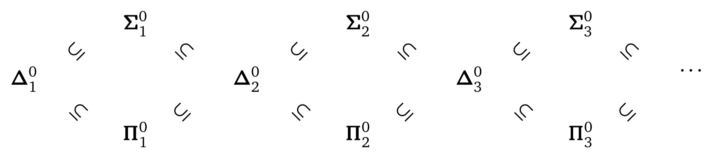

Contents#
Perfect Subsets of the Real Line#
Descriptive set theory nowadays is understood as the study of definable subsets of Polish Spaces. Many of its problems and techniques arose out of efforts to answer basic questions about the real numbers. A prominent example is the Continuum Hypothesis (\(\CH\)):
Continuum Hypothesis (Cantor, 1890s)
If \(A \subseteq \Real\) is uncountable, then there exists a bijection between \(A\) and \(\Real\). That is, is every uncountable subset of \(\Real\) is of the same cardinality as \(\Real\).
Early approaches to this problem tried to show that \(\CH\) holds for a number of sets with an easy topological structure.
Exercise
Show that every open set in \(\R\) satisfies \(\CH\) (in the sense that it either countable or can be mapped bijectively to \(\R\)).
For closed sets, the situation is less clear. Given a set \(A \subseteq \Real\), we call \(x \in \Real\) an accumulation point of \(A\) if
where \(U_\eps(x)\) denotes the standard \(\eps\)-neighborhood of \(x\) in \(\Real\)
Definition 1
A non-empty set \(P \subseteq \Real\) is perfect if it is closed and every point of \(P\) is an accumulation point.
In other words, a perfect set is a closed set that has no isolated points. We can also deduce that for a perfect set \(P\), every neighborhood of a point \(p \in P\) contains infinitely many points from \(P\).
Obviously, \(\Real\) itself is perfect, as is any closed interval in \(\Real\). There are totally disconnected perfect sets, such as the middle-third Cantor set in \([0,1]\)
Theorem 1 (Cantor, 1884)
A perfect subset of \(\Real\) has the same cardinality as \(\Real\).
Proof. Let \(P \subseteq \Real\) be perfect. We construct an injection from the set \(\Cant\) of all infinite binary sequences into \(P\). An infinite binary sequence \(\xi = \xi_0 \xi_1 \xi_2 \dots\) can be identified with a real number \(\in [0,1]\) via the mapping
Note that this mapping is onto. It follows that the cardinality of \(P\) is at least as large as the cardinality of \([0,1]\). The Cantor-Schröder-Bernstein Theorem (for a proof see e.g. [Jech, 2003]) implies that \(|P| = |\R|\).
To construct the desired injection, choose \(x \in P\) and let \(\eps_0 = 1 = 2^0\). Since \(P\) is perfect, \(P \cap U_{\eps_0}(x)\) is infinite. Let \(x_0 \neq x_1\) be two points in \(P \cap U_{\eps_0}(x)\), distinct from \(x\). Let \(\eps_1\) be such that \(\eps_1 \leq 1/2\), \(U_{\eps_1}(x_0), U_{\eps_1}(x_1) \subseteq U_{\eps_0}(x)\), and \(\overline{U_{\eps_1}(x_0)} \cap \overline{U_{\eps_1}(x_1)} = \emptyset\), where \(\overline{U}\) denotes the closure of \(U\).
We can iterate this procedure recursively with smaller and smaller diameters, using the fact that \(P\) is perfect. This gives rise to a so-called Cantor scheme, a family of open balls \((U_\sigma)\) satisfying certain nesting conditions. Here the index \(\sigma\) is a finite binary sequence, also called a string. A Cantor scheme is defined by the following properties.
\(\diam(U_\sigma) \leq 2^{-|\sigma|}\), where \(|\sigma|\) denotes the length of \(\sigma\).
If \(\tau\) is a proper extension of \(\sigma\), then \(U_\tau \subset U_\sigma\).
If \(\tau\) and \(\sigma\) are incompatible (i.e. neither extends the other), then
\[\begin{equation*} U_\tau \cap U_\sigma = \emptyset. \end{equation*}\]The center of each \(U_\sigma\), call it \(x_\sigma\), is in \(P\).
{kind=link}
Fig. 2 Nested structure of a Cantor scheme#
Let \(\xi\) be an infinite binary sequence. Given \(n \geq 0\), we denote by \(\xi\Rest{n}\) the string formed by the first \(n\) bits of \(\xi\), i.e.
The finite initial segments give rise to a sequence \(x_{\xi\Rest{n}}\) of centers. By properties (1.) and (2.), this is a Cauchy sequence. By (4.), the sequence lies in \(P\). Since \(P\) is closed, the limit \(x_\xi\) is in \(P\). By (3.), the mapping \(\xi \mapsto x_\xi\) is well-defined and injective.
Theorem 2 (Cantor-Bendixson)
Every uncountable closed subset of \(\Real\) contains a perfect subset.
Proof. Let \(C \subseteq \Real\) be uncountable and closed. We say \(z \in \Real\) is a condensation point of \(C\) if
Let \(D\) be the set of all condensation points of \(C\). Note that \(D \subseteq C\), since every condensation point is clearly an accumulation point and \(C\) is closed.
Furthermore, we claim that \(D\) is perfect. Clearly \(D\) is closed. Suppose \(z \in D\) and \(\eps > 0\). Then \(U_\eps(z) \cap C\) is uncountable. We would like to conclude that \(U_\eps(z) \cap D\) is uncountable, too, since this would mean in particular that \(U_\eps(z) \cap D\) is infinite. The conclusion holds if \(C \setminus D\) is countable.
To show that \(C\setminus D\) is countable, assume that \(y \in C \setminus D\). Then, for some \(\delta > 0\), \(U_\delta(y) \cap C\) is countable. We can find and interval \(I(y) \subseteq U_\delta(y)\) that contains \(y\) and has rational endpoints. There are at most countably many intervals with rational endpoints and hence for each \(y \in C \setminus D\) there are at most countably many choices for \(I(y)\). Thus, we have
The right hand side is a countable union of countable sets, hence countable.
We will later encounter an alternative (more constructive) proof that gives additional information about the complexity of the closed set \(C\). For now we conclude with the fact we were aiming to prove in this lecture.
Corollary 1
Every closed subset of \(\Real\) is either countable or of the cardinality of the continuum.
The results of this lecture give us a blueprint on how to verify the Continuum Hypothesis for a given family \(\mathcal{F}\) of sets (of reals):
Show that every set in \(\mathcal{F}\) is either countable or has a perfect subset.
Over the next few lectures we will see for which families we can verify this perfect set property.
Polish Spaces#
The proofs in the previous lecture are quite general, that is, they make little use of specific properties of \(\Real\). If we scan the arguments carefully, we see that we can replace \(\Real\) by any metric space that is complete and contains a countable basis of the topology.
Review of some concepts from topology#
Basis#
Let \((X, \mathcal{O})\) be a topological space. A family \(\mathcal{B} \subseteq \mathcal{O}\) of subsets if \(X\) is a basis for the topology if every open set from \(\mathcal{O}\) is the union of elements of \(\mathcal{B}\). For example, the open intervals with rational endpoints form a basis of the standard topology of \(\Real\). A family \(\mathcal{S} \subseteq \mathcal{O}\) is a subbasis if the set of finite intersections of sets in \(\mathcal{S}\) is a basis for the topology.
Finally, if \(\mathcal{S}\) is any family of subsets of \(X\), the topology generated by \(\mathcal{S}\) is the smallest topology on \(X\) containing \(\mathcal{S}\). It consists of all unions of finite intersections of sets in \(\mathcal{S} \cup \{X,\emptyset\}\).
Density#
A set \(D \subset X\) is dense if for any open \(U \neq \emptyset\) there exists \(z \in D \cap U\). If a topological space \((X, \mathcal{O})\) has a countable dense subset, the space is called separable.
Products#
If \((X_i)_{i \in I}\) is a family of topological spaces, one defines the product topology on \(\Pi_{i \in I} X_i\) to be the topology generated by the sets \(\pi_i^{-1}(U)\), where \(i \in I\), \(U \subseteq X_i\) is open, and \(\pi_i: \Pi_{i \in I} X_i \to X_i\) is the \(i\)th projection.
Now suppose \((X,d)\) is a metric space. With each point \(x \in X\) and every \(\eps > 0\) we associate an \(\eps\)-neighborhood or \(\eps\)-ball
The topology generated by the \(\eps\)-neighborhoods is called the topology of the metric space \((X,d)\). If this topology agrees with a given topology \(\mathcal{O}\) on \(X\), we say the metric \(d\) is compatible with the topology \(\mathcal{O}\). If for a topological space \((X, \mathcal{O})\) there exists a compatible metric, \((X, \mathcal{O})\) is called metrizable.
If a topological space \((X,\mathcal{O})\) is separable and metrizable, then the balls with center in a countable dense subset \(D\) and rational radius form a countable base of the topology.
Polish spaces – the basics#
Definition 2
A Polish space is a separable topological space \(X\) for which exists a compatible metric \(d\) such that \((X,d)\) is a complete metric space.
There may be many different compatible metrics that make \(X\) complete. If \(X\) is already given as a complete metric space with countable dense subset, then we call \(X\) a Polish metric space.
The standard example is, of course, \(\Real\), the set of real numbers. One can obtain other Polish spaces using the following basic observations. (We leave the proof as an exercise.)
Proposition 1
A closed subset of a Polish space is Polish.
The product of a countable (in particular, finite) sequence of Polish spaces is Polish.
Any topological space homeomorphic to a Polish space is Polish.
We conclude that \(\Real^n\), \(\C\), \(\C^n\), the unit interval \([0,1]\), the unit circle \(\Ci = \{z \in \C \colon |z| = 1\}\), and the infinite dimensional spaces \(\Real^\Nat\) and \([0,1]^\Nat\) (the Hilbert cube) are Polish spaces.
Any countable set with the discrete topology is Polish, by means of the discrete metric \(d(x,y) = 1 \: \Leftrightarrow \: x \neq y\).
Some subsets of Polish spaces are Polish but not closed.
Exercise
By choosing a suitable metric, show that \((0,1)\), the open unit interval, is a Polish space.
We will later characterize all subsets of Polish spaces that are Polish themselves.
Product spaces#
In a certain sense, the most important Polish spaces are of the form \(A^\Nat\), where \(A\) is a countable set carrying the discrete topology. The standard cases are
\(\Cant\), the Cantor space \(\qquad\) and \(\qquad\) \(\Baire\), the Baire space.
We will, for now, denote elements from \(A^\Nat\) by lower case greek letters from the beginning of the alphabet. The \(n\)-th term of \(\alpha\) we denote by either \(\alpha(n)\) or \(\alpha_n\), whichever is more convenient.
We endow \(A\) with the discrete topology. The product topology on these spaces has a convenient characterization. Given a set \(A\), let \(\Str[A]\) be the sets of all finite sequences over \(A\). Given \(\sigma, \tau \in A^{<\Nat}\), we write \(\sigma \Sleq \tau\) to indicate that \(\sigma\) is an initial segment of \(\tau\). \(\Sle\) means the initial segment is proper. This notation extends naturally to hold between elements of \(\Str[A]\) and \(A^\Nat\), \(\sigma \Sle \alpha\) meaning that \(\sigma\) is a finite initial segment of \(\alpha\).
A basis for the product topology on \(A^\Nat\) is given by the cylinder sets
that is, the set of all infinite sequences extending \(\sigma\). The complement of a cylinder is a union of cylinders and hence open. Therefore, each set \(\Cyl{\sigma}\) is clopen.
A compatible metric is given by
The representation of the topology via cylinders (which are characterized by finite objects) allows for a combinatorial treatment of many questions and will be essential later on.
Proposition 2 (Topological properties of \(A^\Nat\))
Let \(A\) be a countable set, equipped with the discrete topology. Suppose \(A^\Nat\) is equipped with the product topology. Then the following hold.
\(A^\Nat\) is Polish.
\(A^\Nat\) is zero-dimensional, i.e. it has a basis of clopen sets.
\(A^\Nat\) is compact if and only if \(A\) is finite.
Via the mapping
\(\Cant\) is homeomorphic to the middle-third Cantor set in \(\Real\), whereas the continued fraction mapping
provides a homeomorphism between \(\Z \times (\N\setminus\{0\})^\N\) and the irrational real numbers.
The universal role played by the discrete product spaces is manifested in the following results.
Theorem 3
Every uncountable Polish space contains a homeomorphic embedding of Cantor space \(\Cant\).
The proof is similar to the proof of Theorem 1. Note that the proof actually constructs an embedding of \(\Cant\). The continuity of the mapping is straightforward.
In a similar way we can adapt the proof of Theorem 2 to show that the perfect subset property holds for closed subsets of Polish spaces.
Theorem 4 (Cantor-Bendixson Theorem for Polish spaces)
Every uncountable closed subset of a Polish space contains a perfect subset.
Finally, we can characterize Polish spaces as continuous images of Baire space.
Theorem 5
Every Polish space \(X\) is the continuous image of \(\Baire\).
Proof. Let \(d\) be a compatible metric on \(X\), and let \(D = \{x_i \colon i \in \Nat\}\) be a countable dense subset of \(X\). Every point in \(X\) is the limit of a sequence in \(D\). Define a mapping \(g:\Baire \to X\) by putting
The problem is, of course, that the limit on the right hand side not necessarily exists. We have to proceed more carefully. Given \(\alpha \in \Nat\), we put \(y^\alpha_0 = x_{\alpha(0)}\) and define iteratively
The resulting sequence \((y^\alpha_n)\) is clearly Cauchy in \(X\), and hence converges to some point \(y^\alpha \in X\), by completeness. We define
\(f\) is continuous, since if \(\alpha\) and \(\beta\) agree up to length \(N\) (that is, their distance is at most \(2^{-N}\) with respect to the above metric), then the sequences \((y^\alpha_n)\) and \((y^\beta_n)\) will agree up to index \(N\), and all further terms are within \(2^{-N}\) of \(y^\alpha_N\) and \(y^\beta_N\), respectively.
Finally, since \(D\) is dense in \(X\), \(f\) is a surjection.
Excursion: The Urysohn Space#
Recall that a mapping \(f: X \to Y\) between two metric spaces \((X,d_X)\) and \((Y,d_Y)\) is an isometry if
that is, an isometry is a mapping that preserves distances. The function \(f\) is also called an isometric embedding of \(X\) into \(Y\). \(X\) and \(Y\) are isometric if there exists a bijective isometry between them.
Universal spaces#
Theorem 6
There exists a Polish metric space \(\Ury\) such that every Polish metric space isometrically embeds into \(\Ury\).
A concrete example of such a space is \(\mathcal{C}[0,1]\).
Exercise
Show that the set \(\mathcal{C}[0,1]\) of all continuous, real-valued functions on \([0,1]\) with the metric
contains an isomorphic copy of any Polish metric space.
But this example is not quite what we have in mind here. There exists another space with a stronger, more “intrinsic” universality property. This space was first constructed by Pavel Urysohn in 1927 [Urysohn, 1927].
The construction features an amalgamation principle that has surfaced in other areas like model theory or graph theory.
Extensions of finite isometries and Urysohn universality#
Suppose \(X\) is a Polish metric space. Let \(D = \{x_1, x_2, \dots\}\) be a countable, dense subset. We first observe that, to isometrically embed \(X\) into another Polish space, it is sufficient to embed \(D\).
Lemma 1
If \(Y\) is Polish, then any isometric embedding \(e\) of \(D\) into \(Y\) extends to an isometric embedding \(e^*\) of \(X\) into \(Y\).
Proof. Given \(z \in X\), let \((x_{i_n})\) be a sequence in \(D\) converging to \(z\). Since \((x_{i_n})\) converges, it is Cauchy.
\(e\) is an isometry, and thus \(y_n := e(x_{i_n})\) is Cauchy, and since \(Y\) is Polish, \((y_n)\) converges to some \(y \in Y\). Put \(e^*(z) = y\).
To see that this mapping is well-defined, let \((x_{j_n})\) be another sequence with \(x_{j_n} \to z\). Then \(d(x_{i_n}, x_{j_n}) \to 0\), and hence \(d(e(x_{i_n}),e(x_{j_n}) = d(y_n, e(x_{j_n}))\to 0\), implying \(e(x_{j_n}) \to y\).
Furthermore, suppose \(w = \lim x_{k_n}\) is another point in \(X\). Then (since a metric is a continuous mapping from \(Y\times Y \to \Real\))
Thus \(e^*\) is an isometry.
In order to embed \(D\), we can now exploit the inductive structure of \(\Nat\) and reduce the task to extending finite isometries.
Suppose we have constructed an isometry \(e\) between \(F_N = \{x_1, \dots, x_N \} \subset D\) and a space \(Y\). We would like to extend the isometry to include \(x_{N+1}\). For this we have to find an element \(y \in Y\) such that for all \(i \leq N\)
This extension property gives rise to the following definition.
Definition 3
A Polish metric space \((Y,d_Y)\) is Urysohn universal if for every finite subspace \(F \subset Y\) and any extension \(F^* = F \cup \{x^*\}\) with metric a \(d^*\) such that
there exists a point \(u \in Y\) such that
As outlined above, the extension property of Urysohn universal spaces implies the desired isometric embedding property.
Proposition 3
Let \(U\) be a Urysohn universal Polish metric space. For any Polish metric space \((X,d)\) there exists an isometric embedding from \(X\) into \(U\).
But the extension property also implies a strong intrinsic extension property for the Urysohn space itself.
Proposition 4
Let \(U\) be a Urysohn universal Polish metric space. Every isometry between finite subsets of \(\Ury\) extends to an isometry of \(U\) onto itself.
The proof applies the Back-and-forth method that you may know from the rationals: every order-isomorphism between finite subsets of \(\Q\) extends to an automorphism of \((\Q,<)\).
This property (which can be formulated for structures in general) is also known as homogeneity. It plays an important role, for example, in model theory [Macpherson, 2011] and in the topological dynamics of automorphism groups of countable structures [Kechris et al., 2005].
Exercise
Show that any two Urysohn universal spaces are isometric.
We will prove the existence of this unique Polish space, which we denote by \(\Ury\), in the following sections.
Constructing the Urysohn space – a first approximation#
We first give a construction of a space that has the extension property, but is not Polish. After that we will take additional steps to turn it into a Polish space.
The crucial idea is to observe that if \(X\) is a metric space and \(x \in X\), then the mapping \(f_{x}: X \to \Real^{\geq 0}\) given by
is \(1\)-Lipschitz. Recall that a function \(g\) between metric spaces \(X\) and \(Y\) is \(L\)-Lipschitz, \(L > 0\) if for every \(x,y \in X\),
Let \(\Lip_1(X)\) be the set of \(1\)-Lipschitz mappings from \(X\) to \(\Real\). We endow \(\Lip_1(X)\) with the supremum metric
If \(\diam(X) \leq \mathrm{d}\) and \(f,g\) are \(1\)-Lipschitz, then \(d(f,g)\) is indeed finite. However, we will later need that the resulting space is also bounded. Let \(\Lip^{\mathrm{d}}_1(X)\) be the space of all \(1\)-Lipschitz functions from \(X\) to \([0,\mathrm{d}]\).
Clearly, \(\diam(\Lip^{\mathrm{d}}_1(X)) \leq \mathrm{d}\).
With this metric, the mapping \(x \mapsto f_{x}(y) = d(x,y) \) becomes an isometry: We have
By the reverse triangle inequality, this is always \(\leq d(x,z)\). On the other hand, setting \(y=z\) yields \(d(f_x,f_z) \geq d(x,z)\). This embedding of \(X\) into \(\Lip^{\mathrm{d}}_1(X)\) is called the Kuratowski embedding.
We use this fact as follows: If \(X^* = X \sqcup \{x^*\}\) and \(d^*\) is an extension of \(d_X\), then \(f_{x^*}\) is an element of \(\Lip^{\mathrm{d}}_1(X)\), and as above, for any \(x \in X\)
Hence \(\Lip^{\mathrm{d}}_1(X)\) has an extension property of the kind we are looking for.
Iterative construction: Let \(X_0\) be any non-empty Polish space with finite diameter \(\mathrm{d} > 0\). Given \(X_n\), let \(\mathrm{d}(n) = \diam(X_n)\) and set \(X_{n+1} = \Lip^{2\mathrm{d}(n)}_1(X_n)\). Finally, put \(X_\infty = \bigcup_n X_n\). Note that \(X_\infty\) inherits a well-defined metric \(d\) from the \(X_n\), which embed isometrically into it.
We wan to verify that \(X_\infty\) has the extension property needed to be Urysohn universal. Let \(F\) be a finite subset of \(X_\infty\). There exists \(N\) such that \(F \subset X_N\). Suppose \(F^* = F \sqcup \{x^*\}\) and \(d^*\) is an extension of \(d\) to \(F^*\). Let \(\mathrm{d}^* = \diam(F^*)\). Note that \(\diam(X_n) = 2^n \mathrm{d}\). Choose \(M\) so that \(M \geq N\) and \(\diam(X_M) \geq \mathrm{d}^*\). The next lemma ensures that we can find \(f \in X_{M+1}\) such that \(f(x) = d^*(x^*,x)\) for all \(x \in F\).
Lemma 2 (McShane-Whitney)
Let \(X\) be a metric space with \(\diam(X) \leq \mathrm d\), \(A \subseteq X\), and \(f \in \Lip^{\mathrm{d}}_1(A)\), then \(f\) can be extended to a \(1\)-Lipschitz function \(f^*\) on all of \(X\) such that
Proof. For each \(a \in A\) define \(f_a: X \to \Real\) as
Then \(f_a\) is \(1\)-Lipschitz, by the reverse triangle inequality. Let
Then \(f^*(a) = f(a)\) for all \(a \in A\). Let \(x,y \in X\) and \(\eps > 0\). Wlog assume \(f^*(y) \geq f^*(x)\). Pick \(a \in A\) so that \(f_a(x) \leq f^*(x) + \eps\). Then
Since \(\eps > 0\) was arbitrary, we have \(|f^*(x) - f^*(y)| \leq d(x,y)\).
Finally, we have \(f(a) \leq f_a(x) \leq f(a) + \mathrm{d}\) and thus \(0 \leq f^*(x) \leq f_a(x) \leq 2\mathrm{d}\).
Finishing the construction#
The set \(X_\infty\) we constructed has two deficiencies with respect to our goal of constructing a Urysohn universal space: \(X_\infty\) is not necessarily separable, and \(X_\infty\) is not necessarily complete.
To make \(X_\infty\) separable, we observe that if \(X\) is compact, then the set \(\Lip^{\mathrm{d}}_1(X)\) is closed in \(\mathcal{C}(X)\) (the set of all real-valued continuous functions on \(X\)), bounded, and equicontinuous. By the Arzelà-Ascoli Theorem, \(\Lip^{\mathrm{d}}_1(X)\) is compact. Every compact metric space is separable: For every \(\eps > 0\), there exists a finite covering of the space with sets of \(\diam < \eps\). Letting \(\eps\) traverse all positive rationals and picking a point from each set in an \(\eps\)-covering yields a countable dense subset. Hence if we start with \(X_0\) compact, each \(X_n\) will be compact, too. A countable union of separable spaces is separable, thus \(X_\infty\) is separable.
To obtain a complete space, we can pass from \(X_\infty\) to its completion \(\Cl{X_\infty}\). First note that if a metric space \(X\) is separable, so is its completion \(\Cl{X}\). However, we also have to ensure that \(\Cl{X_\infty}\) retains the universality property of \(X_\infty\).
Lemma 3
If a complete metric space \((Y,d)\) admits a dense Urysohn universal subspace \(\mathcal{U}\), then \(Y\) is Urysohn universal.
Proof. We follow [Gromov, 1999]. Let \(F = \{x_1, \dots, x_n\} \subset Y\) and assume \(F^* = F \sqcup \{x^*\}\) is an extension with metric \(d^*\).
We first note that \(Y\) is approximately universal. This means that for any \(\eps > 0\), there exists a point \(y^* \in Y\) such that
This can be seen as follows. Since \(\mathcal{U}\) is dense in \(Y\), we can find a finite set \(F_\eps = \{z_1, \dots, z_n\} \subset \mathcal{U}\) such that
Now use the Urysohn universality of \(\mathcal{U}\) for the set \(G^* = \{z_1, \dots , z_n\} \sqcup \{x^*\}\) with the metric
to find \(z \in \mathcal{U}\) with
Then, by the reverse triangle inequality,
as required.
We use this approximate universality to construct a Cauchy sequence \((y_k)\) in \(Y\) of ‘approximate’ extension points that satisfy \((*)\) for smaller and smaller \(\eps\).
Let \(0 < \delta = \max \{d^*(x^*,x_i) \colon 1 \leq i \leq n \}\). The formal requirements for the sequence \((y_i)\) are as follows.
\(|d(y_k,x_i) - d^*(x^*,x_i)| \leq 2^{-k} \delta\).
\(d(y_{k+1},y_k) \leq 2^{-k}\delta\).
The sequence necessarily converges in \(Y\) and the limit point must be a true extension point, due to (1.)
Suppose we have already constructed \(y_1, \dots, y_k\) satisfying (1.), (2.). Add an (abstract) point \(y^*_{k+1}\) to \(F_k = F \cup \{y_1, \dots, y_k\}\). Let \(F^*_{k+1} = F_k \sqcup \{y^*_{k+1}\}\).
We want to use approximate universality on \(F^*_{k+1}\). To this end we have to define a metric \(e^*\) on \(F^*_{k+1}\) that has the following properties
Indeed such a metric exists: The condition \((i)\) already defines a metric on the set \(F_k\). The conditions \((i)\)-\((iii)\) also define a metric on \(F \cup \{y_k,y^*_{k+1}\}\) – the only thing to check for this is the triangle inequality for \(y_k, y^*_{k+1}\):
by (1.). These metrics agree on the set
Therefore, we can “merge” them to a metric on all of \(F^*_{k+1}\) by letting
Now choose \(\eps < 2^{-k-1}\delta\) and apply approximate universality to \(F^*_{k+1}\). This yields a point \(y_{k+1} \in Y\) such that
for all \(z \in F_k\). By definition of \(e^*\), we have
for \(1 \leq i \leq n\), and \((iii)\) yields
as required.
Trees#
Let \(A\) be a set. Recall that the set of all finite sequences over \(A\) is denoted by \(\Str[A]\), while \(A^\Nat\) denotes the set of all infinite sequences over \(A\). Given \(\alpha \in A^\N\), \(n \in \N\), \(\alpha\Rest{n}\) denotes the initial segment of \(\alpha\) of length \(n\).
Definition 4
A tree on \(A\) is a set \(T \subseteq \Str[A]\) that is closed under prefixes, that is
We call the elements of \(T\) nodes.
A sequence \(\alpha \in A^\Nat\) is an infinite path through or infinite branch of \(T\) if for all \(n\), \(\alpha\Rest{n} = (\alpha_0, \alpha_1, \dots, \alpha_{n-1}) \in T\). We denote the set of infinite paths through \(T\) by \([T]\).
An important criterion for a tree to have infinite paths is the following.
Theorem 7 (König’s Lemma)
Any tree \(T\) with infinitely many nodes that is finite branching (i.e. each node has at most finitely many immediate extensions) has an infinite path.
Proof. We construct an infinite path inductively.
Let \(T_\sigma\) denote the tree “above” \(\sigma\), i.e. \(T_\sigma = \{ \tau \in \Str[A] \colon \sigma\Conc\tau \in T\}\). If \(T\) is finite branching, by the pigeonhole principle, at least one of the sets \(T_\sigma\) for \(|\sigma| = 1\) must be infinite. Pick such a \(\sigma\) and let \(\alpha\Rest{1} = \sigma\).
Repeat the argument for \(T = T_\sigma\) and continue inductively. This yields a sequence \(\alpha \in [T]\).
If \([T] = \emptyset\), we call \(T\) well-founded. The motivation behind this is that \(T\) is well-founded if and only if the inverse prefix relation
is well-founded, i.e. it does not have an infinite descending chain.
If \(T \neq \emptyset\) is well-founded, we can assign \(T\) an ordinal number, its rank \(\rho(T)\).
If \(\sigma\) is a terminal node, i.e. \(\sigma\) has no extensions in \(T\), then let \(\rho_T(\sigma) = 0\).
If \(\sigma\) is not terminal, and \(\rho_T(\tau)\) has been defined for all \(\tau \Sgr \sigma\), we set \(\rho_T(\sigma) = \sup \{\rho_T(\tau)+1 \colon \tau \in T, \tau \Sgr \sigma \}\).
Finally, set \(\rho(T) = \sup\{\rho_T(\sigma) + 1 \colon \sigma\in T \} = \rho_T(\Estr)+1\), where \(\Estr\) denotes the empty string.
Orderings on trees#
Now suppose \(A\) is linearly ordered by a relation \(\leq_A\). The lexicographical ordering \(\leq_{\lex}\) of \(\Str[A]\) is defined as
This ordering extends to \(A^\Nat\) in a natural way.
Proposition 5
If \(\leq_A\) is a well-ordering of \(A\) and \(T\) is a tree on \(A\) with \([T] \neq \emptyset\), then \([T]\) has a \(\leq_{\lex}\)-minimal element, the leftmost branch.
Proof. We prune the tree \(T\) by deleting any node that is not on an infinite branch. This yields a subtree \(T' \subseteq T\) with \([T'] = [T]\).
Let \(T'_n = \{\sigma \in T' \colon |\sigma| = n \}\). Since \(\leq_A\) is a well-ordering on \(A\), \(T'_1\) must have a \(\leq_{\lex}\)-least element. Denote it by \(\alpha\Rest{1}\). Since \(T'\) is pruned, \(\alpha\Rest{1}\) must have an extension in \(T\), and we can repeat the argument to obtain \(\alpha\Rest{2}\).
Continuing inductively, we define an infinite path \(\alpha\) through \(T'\), and it is straightforward to check that \(\alpha\) is a \(\leq_{\lex}\)-minimal element of \([T']\) and hence of \([T]\).
We can combine the \(\leq_{\lex}\)-ordering with the inverse prefix order to obtain a linear ordering of \(\Str[A]\). This ordering has the nice property that if \(A\) is well-ordered and \(T\) is well-founded, then the ordering restricted to \(T\) is a well-ordering.
Definition 5
The Kleene-Brouwer ordering \(\leq_{\KB}\) of \(\Str[A]\) is defined as follows.
\(\qquad \sigma \leq_{\KB} \tau\) \(\quad :\Leftrightarrow \quad\) \(\sigma \Sgeq \tau \;\;\) or \(\; \; \sigma \leq_{\lex} \tau\).
This means \(\sigma\) is smaller than \(\tau\) if it is a proper extension of \(\tau\) or “to the left” of \(\tau\).
We now have
Proposition 6
Assume \((A,\leq)\) is a well-ordered set. Then for any tree \(T\) on \(A\),
\(\qquad\) \(T\) is well-founded \(\quad \Leftrightarrow \quad\) \(\leq_{\KB}\) restricted to \(T\) is a well-ordering.
Proof. Suppose \(T\) is not well-founded. Let \(\alpha \in [T]\). Then \(\alpha\Rest{0}, \alpha\Rest{1}, \dots\) is an infinite descending sequence with respect to \(\leq_{\KB}\).
Conversely, suppose \(\sigma_0 >_{\KB} \sigma_1 >_{\KB} \dots\) is an infinite descending sequence in \(T\). By the definition of \(>_{\KB}\), this implies \(\sigma_1(0) \geq_A \sigma_2(0) \geq_A \dots\) as a sequence in \(A\). Since \(A\) is well-ordered, this sequence must eventually be constant, say \(\sigma_n(0) = a_0\) for all \(n \geq n_0\).
Since the \(\sigma_n\) are descending, by the definition of \(\leq_{\KB}\) it follows that \(|\sigma_n| \geq 2\) for \(n > n_0\). Hence we can consider the sequence \(\sigma_{n_0+1}(1) \geq_A \sigma_{n_0+2}(1) \geq_A \dots\) in \(A\). Again, this must be constant \(= a_1\) eventually. Inductively, we obtain a sequence \(\alpha = (a_0, a_1, a_2, \dots) \in [T]\), that is, \(T\) is not well-founded.
Caution
The order type of a well-founded tree under \(\leq_{\KB}\) usually is not equal to its rank \(\rho(T)\).
Coding trees#
We can also define an ordering on \(\Str[A]\) via an injective mapping from \(\Str[A]\) to some linearly ordered set \(A\). We will use this repeatedly for the case \(A = \Nat\) and \(A = \{0,1\}\).
For \(A = \Nat\), we can use the standard coding mapping
where \(p_k\) is the \(k\)th prime number. This embeds \(\Nstr\) into \(\Nat\), and we can well-order \(\Nstr\) by letting \(\sigma < \tau\) if and only if \(\pi(\sigma) < \pi(\tau)\).
For \(A = \{0,1\}\) we set
These two mappings allows us henceforth to see trees as subsets of the natural numbers. This will be an important component in exploring the relation between topological and arithmetical complexity.
Trees and closed sets#
Let \(A\) be a set with the discrete topology. Consider \(A^\Nat\) with the product topology (and compatible metric) defined in Lecture 2.
Proposition 7
A set \(F \subseteq A^\Nat\) is closed if and only if there exists a tree \(T\) on \(A\) such that \(F = [T]\).
Proof. Suppose \(F\) is closed. Let
Then clearly \(F \subset [T_F]\). Suppose \(\alpha \in [T_F]\). This means for any \(n\), \(\alpha\Rest{n} \in T_F\), which implies that there exists \(\beta_n \in F\) such that \(\alpha_n \Sle \beta_n\). The sequence \((\beta_n)\) converges to \(\alpha\), and since \(F\) is closed, \(\alpha \in F\).
For the other direction, suppose \(F = [T]\). Let \(\alpha \in A^\Nat \setminus F\). Then there exists an \(n\) such that \(\alpha\Rest{n} \not\in T\). Since a tree is closed under prefixes, no extension of \(\alpha\Rest{n}\) can be in \(T\). This implies \(\Cyl{\alpha\Rest{n}} \subseteq A^\Nat \setminus F\), and hence \(A^\Nat \setminus F\) is open.
Continuous mappings on product spaces#
Let \(f: A^\Nat \to A^\Nat\) be continuous. We define a mapping \(\phi: \Str[A] \to \Str[A]\) by setting
This mapping has the following properties:
It is monotone, i.e. \(\sigma \Sleq \tau\) implies \(\phi(\sigma) \Sleq \phi(\tau)\).
For any \(\alpha \in A^\Nat\) we have \(\lim_n |\phi(\alpha\Rest{n})| = \infty\). This follows directly from the continuity of \(f\): For any neighborhood \(\Cyl{\tau}\) of \(f(\alpha)\) there exists a neighborhood \(\Cyl{\sigma}\) of \(\alpha\) such that \(f(\Cyl{\sigma}) \subseteq \Cyl{\tau}\). But \(\tau\) has to be of the form \(\tau = f(\alpha)\Rest{m}\), and \(\sigma\) of the form \(\alpha\Rest{n}\). Hence for any \(m\) there must exist an \(n\) such that \(\phi(\alpha\Rest{n}) \Sgeq f(\alpha)\Rest{m}\).
On the other hand, if a function \(\phi: \Str[A] \to \Str[A]\) satisfies (1.) and (2.), it induces a function \(\phi^*: A^\Nat \to A^\Nat\) by letting
This \(\phi^*\) is indeed continuous: The preimage of \(\Cyl{\tau}\) under \(\phi^*\) is given by
which is an open set.
We have shown the following.
Proposition 8
A mapping \(f:A^\Nat \to A^\Nat\) is continuous if and only if there exists a mapping \(\phi\) satisfying (1) and (2) such that \(f = \phi^*\).
Note that we can completely describe a topological concept, continuity, through a relation between finite strings.
Borel Sets#
The Borel sets in a topological space are the \(\sigma\)-algebra generated by the open sets. That means one can build up the Borel sets from the open sets by iterating the operations of complementation and countable union. This generates sets that are more and more complicated, which is reflected in the Borel hierarchy. The complexity is reflected on the logical side by the number of quantifier changes needed to define the set. There is a close connection between the arithmetical hierarchy in computability and the Borel hierarchy.
Definition 6
Let \(X\) be a set. A \(\sigma\)-algebra \(\mathcal{S}\) on \(X\) is a collection of subsets of \(X\) such that \(\mathcal{S}\) is closed under complements and countable unions, that is
if \(A \in \mathcal{S}\), then \(X \setminus A \in \mathcal{S}\), and
if \((A_n)_{n \in \Nat}\) is a sequence of sets in \(\mathcal{S}\), then \(\bigcup_n A_n \in \mathcal{S}\),
If the enveloping space \(X\) is clear, we use \(\Co{A}\) to denote the complement of \(A\) in \(X\).
It is easy to derive that a \(\sigma\)-algebra is also closed under the following set-theoretic operations:
countable intersections – we have \(\bigcap A_n = \Co{\bigcup_n \Co{A_n}}\).
differences – we have \(A \setminus B = A \cap \Co{B}\).
Symmetric differences – we have \(A \bigtriangleup B = (A \cap \Co{B}) \cup (\Co{A} \cap B)\).
Definition 7
Let \((X,\mathcal{O})\) be a topological space. The collection of Borel sets in \(X\) is the smallest \(\sigma\)-algebra containing the open sets in \(\mathcal{O}\).
Of course, one has to make sure that this collection actually exists. For this, note that the intersection of any collection of \(\sigma\)-algebras is again a \(\sigma\)-algebra, so the Borel sets are just the intersection of all \(\sigma\)-algebras containing \(\mathcal{O}\). (Note the the full power set of \(X\) is such a \(\sigma\)-algebras, so we are not taking an empty intersection.)
The definition of Borel sets is rather “external”. It does not give us much of an idea what Borel sets look like. One can arrive at the family of Borel sets also through a construction from “within”. This reveals more structure and gives rise to the Borel hierarchy.
The Borel hierarchy#
To generate the Borel sets, we start with the open sets. By closing under complements, we obtain the closed sets. We also have to close under countable unions. The open sets are already closed under this operation, but the closed sets are not.
Countable unions of closed sets are classically known as \(F_\sigma\) sets. Their complements, i.e. countable intersections of open sets, are the \(G_\delta\) sets.
We can continue this way and form the \(F_{\sigma\delta}\) sets – countable intersections of \(F_\sigma\) sets – the \(G_{\delta\sigma}\) sets – countable unions of \(G_\delta\) sets – and so on.
The \(\sigma\delta\)-notation soon becomes rather impractical, and hence we replace it by something more convenient, and much more suggestive, as we will see later.
To make the hierarchy that we are introducing well-behaved, we focus on metrizable spaces.
Definition 8
Let \(X\) be a metrizable topological space. We inductively define the following collection of subsets of \(X\).
Hence the open sets are precisely the sets in \(\bSigma^0_1\), the closed sets are the sets in \(\bPi^0_1\), the \(F_\sigma\) sets from the class \(\bSigma^0_2\) etc. If it is clear what the underlying space \(X\) is, we drop the reference to it and simply write \(\bSigma^0_n\) and \(\bPi^0_n\). Besides, we will say that a set \(A \subseteq X\) is (or is not) \(\bSigma^0_n\) or \(\bPi^0_n\), respectively.
Question: Does the collection of all \(\bSigma^0_n\) and \(\bPi^0_n\) exhaust the Borel sets of \(X\)?
We will see that the answer is no. We have to extend our inductive construction into the transfinite and consider classes \(\bSigma^0_\xi\), where \(\xi\) is a countable infinite ordinal.
The Borel sets of finite order#
We fix a Polish space \(X\). We want to establish the basic relationships between the different classes \(\bSigma^0_n\) and \(\bPi^0_m\) for \(X\).
It follows from the definitions that \(\bPi^0_n \subseteq \bSigma^0_{n+1}\) and \(\bSigma^0_n \subseteq \bPi_{n+1}\).
Lemma 4
In any metric space \((X,d)\), every closed set is a \(G_\delta\) set.
Proof. Let \(F \subset X\) be closed. For \(n \geq 0\), put
Each \(F_n\) is open, and \(F \subseteq \bigcup_{n \in \Nat} F_n\).
Moreover, if \(x \in \bigcup_{n \in \Nat} F_n\), then there exists a sequence \((x_n)\) such that for all \(n\), \(x_n \in F\) and \(x \in U_{2^{-n}}(x_n)\). It follows that \(x_n \to x\), and since \(F\) is closed, \(x\in F\). Thus
which is \(G_\delta\).
Corollary 2
\(\bSigma^0_1 \subseteq \bSigma^0_2\) and \(\bPi^0_1 \subseteq \bPi^0_2\).
The second statement follows by passing to complements: If \(F\) is closed,
where the \(F_n\) are closed.
There are also sets that can be both \(\bSigma^0_2\) and \(\bPi^0_2\), but neither \(\bSigma^0_1\) nor \(\bPi^0_1\). For example, consider the half-open interval \([0,1)\).
Therefore, it makes sense to define the hybrid classes:
Using induction, we can extend the inclusions in a straightforward way to higher \(n\).
Theorem 8 (Weak Hierarchy Theorem)

Are the inclusions are proper?
If the space is discrete, every open set is closed and vice versa, and hence the whole hierarchy collapses.
Any countable set is \(\bSigma^0_2\), since a singleton set is closed, and a countable set is a countable union of singletons. In a perfect Polish space, we can find countable sets that are neither open nor closed. The complements of such sets then provide examples of \(\bPi^0_2\) sets that are neither open nor closed, showing that the first two levels of the Borel hierarchy are proper for perfect Polish spaces.
Using the concept of Baire category, we will later show that the rationals \(\mathbb{Q}\) are \(\bSigma^0_2\) but not \(\bPi^0_2\), thereby separating \(\bSigma^0_2\) and \(\bPi^0_2\).
It is much harder to find specific examples for the higher levels, e.g. a \(\bSigma^0_5\) set that is not \(\bSigma^0_4\). This separation will be much facilitated by the introduction of a definability framework for the Borel sets. Therefore, we defer the proof of the strong hierarchy theorem for a while.
Examples of Borel sets – continuity points of functions#
Theorem 9 (Young)
Let \(f: X \to Y\) be a mapping between metric spaces. Then
is a \(\bPi^0_2\) (i.e. \(G_\delta\)) set.
Proof. The function \(f\) is continuous at \(a\) if and only if for any \(\eps > 0\),
Given \(\eps > 0\), let
We claim that \(C_\eps\) is open. Suppose \(a \in C_\eps\). Choose a suitable \(\delta\) that witnesses that \(a \in C_\eps\). We show \(U_\delta(a) \subseteq C_\eps\). Let \(b \in U_\delta(a)\). Choose \(\delta^*\) so that \(U_{\delta^*}(b) \subseteq U_\delta(a)\). Then
Notice further that \(\eps > \eps^*\) implies \(C_\eps \supseteq C_{\eps^*}\). Hence we can represent \(C_f\) as
a countable intersection of open sets.
Here is a nice application of Young’s theorem.
The function \(f: \Real \to \Real\) given by
is a function that is continuous at every irrational, discontinuous at every rational number. How about the other way around – discontinous at exactly the irrationals? As noted above, the rationals are a \(\bSigma^0_2\) set that is not \(\bPi^0_2\). Hence such a function cannot exist.
We finish this lecture by showing that Young’s Theorem can be reversed.
Theorem 10
Given a \(\bPi^0_2\) subset \(A\) of a perfect Polish space \(X\), there exists a mapping \(f: X \to \Real\) such that \(f\) is continuous at every point in \(A\), and discontinuous at every other point, i.e. \(C_f = A\).
Proof. Fix a countable dense subset \(D \subseteq X\). We first deal with the easier case that \(A\) is open. Let
It is clear that \(f\) is continuous on \(A\). Now assume \(x \not \in A\). If \(x \not\in \Cl{A}\), then there exists \(U_\eps(x) \subseteq \Co{\,\Cl{A}}\). Any \(U_{\eps^*}(x) \subseteq U_\eps(x)\) contains points from both \(D\) and \(\Co{D}\), so it is clear that \(f\) is not continuous at \(x\). Finally, let \(x \in \Cl{A} \setminus A\). Then \(f(x) = 1\), but points of \(A\) are arbitrarily close, where \(f\) takes value \(0\).
Now we extend this approach to general \(\bPi^0_2\) sets. Suppose
By replacing \(G_n\) with \(G_n^* = G_1 \cap \dots \cap G_n\), we can assume that
The idea is to define \(f_n\) as above for each \(G_n\) and then ``amalgamate’’ the \(f_n\) in a suitable way. Assume for each \(n\), \(f_n: X \to \Real\) is defined as above such that \(C_{f_n} = G_n\). Let \((b_n)\) be a sequence of positive real numbers such that for all \(n\),
for example, \(b_n = 1/n!\). We now form the series
Since \(|f_n(x)| \leq 1\), \(|f(x)| \leq \sum_n b_n < \infty\). Furthermore, \((f_n)\) converges uniformly to \(f\), for
and the last bound is independent of \(x\) and converges to \(0\).
It follows by uniform convergence that if each \(f_n\) is continuous at \(x\), \(f\) is continuous on \(x\), too. Hence \(f\) is continuous on \(A\).
Now assume \(x \not\in A\). Then there exist \(n\) such that \(x \in G_n \setminus G_{n+1}\). Hence
Again, we distinguish two cases.
First, assume \(x \not\in \Cl{G_{n+1}}\). Then there exists \(\delta > 0\) such that \(U_\delta(x) \subseteq \Co{G_{n+1}}\). This also implies \(U_\delta(x) \subseteq \Co{G_{k}}\) for any \(k \geq n+1\). Besides, since \(G_n\) is open, we can chose \(\delta\) sufficiently small so that \(U_\delta(x) \subseteq G_n\). For \(y \in \Co{D} \cap U_\delta(x)\) we have \(f_k(y) = 1\) for all \(k \geq n+1\), and hence \(f(y) = \sum_{k > n} b_k f_k(y) > 0\). On the other hand, if \(y \in D \cap U_\delta(x)\), then \(f_k(y) = 0\) for all \(k \geq n+1\), and also \(f_0(y) = \dots = f_n(y) = 0\), since \(y \in G_n\), and thus \(f(y) = 0\). Hence there are points arbitrarily close to \(x\) whose \(f\)-values differ by a constant lower bound, which implies \(f\) is not continuous in \(x\).
Finally, suppose \(x \in \Cl{G_{n+1}}\). Then \(f_{n+1}(x) = 1\) and hence \(f(x) \geq b_{n+1} > 0\). On the other hand, for any \(y \in G_{n+1}\), \(f(y) \leq \sum_{k> n+1} b_k < b_{n+1} = f(x)\). That is, there are points arbitrarily close to \(x\) whose \(f\)-value differs from \(f(x)\) by a constant lower bound. Hence \(f\) is discontinuous at \(x\) in this case, too.
Subspaces of Polish Spaces#
Closed subsets of Polish spaces (with the subspace topology) are Polish (Proposition 1).
What about open subsets like \((0,1) \subset \Real\)? It is clear from this example that we have to find a different compatible metric.
Proposition 9
Any open subset of a Polish space \(X\) is Polish.
Proof. Let \(U \subset X\) be open, where we assume that \(U \neq X\). Consider the set
The mapping \(x \mapsto d(x,X\setminus U)\) from \(X\) to \(\Real\) is continuous. Therefore, \(F\) is closed and thus Polish.
If we restrict the projection \(\pi_2: \Real \times X \to X\) to \(F\), we obtain a homeomorphism between \(F\) and \(U\). As homeomorphic images of Polish spaces are Polish (Proposition 1), \(U\) is Polish.
Exercise
Give an alternative proof of the preceding result by considering the following:
Let \(d\) be a compatible metric on \(X\) and define
Show that this is a metric that induces the same topology.
Now let
Verfiy that this is a metric on \(U\) compatible with the subspace topology with respect to which \(U\) is complete.
Proposition 10
Let \(X\) be a Polish space, and suppose \((Y_n)\) is a sequence of Polish subspaces of \(X\). Then \(\bigcap_n Y_n\) is a Polish subspace of \(X\).
Proof. Consider the mapping \(f: X \to X^\Nat\) given by \(x \mapsto (x, x, x, \dots)\). The restriction of \(f\) to \(\bigcap_n Y_n\) is a homeomorphism between \(\bigcap_n Y_n\) and the diagonal \(\Delta \subseteq \prod_n Y_n\),
\(\Delta\) is closed in the product space \(\prod_n Y_n\) and hence Polish, and this property pushes over to \(\bigcap_n Y_n\) (see Proposition 1).
Hence every \(G_\delta\) subset of a Polish space is Polish. This is as far as we can get.
Theorem 11 (Mazurkiewicz)
A subset of a Polish space is Polish if and only if it is \(G_\delta\).
We have already established the “if” direction of this result. For the other direction, we need a lemma that is interesting in its own right.
Lemma 5 (Kuratowski extension lemma)
Suppose \(X, Y\) are Polish spaces, \(A \subseteq X\), and \(f: A \to Y\) continuous. Then there exists a \(G_\delta\) set \(G\) with \(A \subseteq G \subseteq \Cl{A}\) and a continuous extension \(g : G \to Y\) of \(f\).
Compare this with the last lecture, where we showed that the points of continuity of a function is always a \(G_\delta\) set (Theorem 9).
Proof. We can adapt the \(\eps\)-oscillation set \(C_\eps\) used in the proof of Theorem 9 to the domain \(A\):
As before, \(C^A_\eps\) is open and hence
is \(G_\delta\) and since \(f\) is continuous, \(A \subseteq G \subseteq \Cl{A}\).
To extend \(f\) to \(G\), let \(x \in G\). Since \(x \in \Cl{A}\), there exists \((a_n)\) in \(A\) with \(x = \lim_n a_n\). As \(x \in \bigcap_n C^A_{1/n}\), \((f(a_n))\) is Cauchy. \(Y\) is complete, so there exists \(y = \lim_n f(a_n) \in Y\). It is straightforward to verify that \(y\) is independent of the choice of \((a_n)\) and agrees with \(f(x)\) for \(x \in A\). Hence we can put
which yields the desired continuous extension.
Now assume \(Y \subset X\) is Polish but not \(G_\delta\). Then, by the previous lemma, the identity mapping \(\operatorname{id}: Y \to Y\) has a proper continuous extension \(g: G \to Y\) to a \(G_\delta\) set \(G\) with \(Y \subsetneq G \subseteq \Cl{Y}\). Let \(x \in G\setminus Y\). \(Y\) is dense in \(G\), so there exists \((y_n)\) in \(Y\) with \(x = \lim_n y_n\). By continuity
contradiction. This completes the proof of Theorem 11.
Borel set as clopen sets#
More complicated Borel sets in Polish spaces are not Polish anymore in the subspace topology, as we just saw. But what if we are allowed to change the topology? In the process, we would like to “preserve” as much as possible of the original space. It turns out we can change the topology so that a given Borel set becomes clopen while inducing the same family of Borel sets overall.
We start with closed sets.
Lemma 6
If \(X\) is a Polish space with topology \(\mathcal{O}\), and \(F \subseteq X\) is closed, then there exists a finer topology \(\mathcal{O}' \supseteq \mathcal{O}\) such that \(\mathcal{O}\) and \(\mathcal{O}'\) give rise to the same class of Borel sets in \(X\), and \(F\) is clopen with respect to \(\mathcal{O}'\).
Proof. By Proposition 1 and Proposition 9, respectively, \(F\) and \(X \setminus F\) are Polish spaces with compatible metrics \(d_F\) and \(d_{X\setminus F}\), respectively. Wlog \(d_F, d_{X\setminus F} < 1\). We form the disjoint union of the spaces \(F\) and \(X \setminus F\): This is the set \(X = F \,\sqcup\, X \setminus F\) with the following topology, \(\mathcal{O}'\). \(U \subseteq F \,\sqcup\, X \setminus F\) is in \(\mathcal{O}'\) if and only if \(U \cap F\) is open (in \(F\)) and \(U \cap X\setminus F\) is open (in \(X\setminus F\)).
The disjoint union is Polish, as witnessed by the following metric.
It is straightforward to check that \(d\) is compatible with \(\mathcal{O}'\). Furthermore, let \((x_n)\) be Cauchy in \((X,d_\sqcup)\). Then the \(x_n\) are completely in \(F\) or in \(X\setminus F\) from some point on, and hence \((x_n)\) converges.
Under the disjoint union topology, \(F\) is is clopen. Moreover, an open set in this topology is a disjoint union of an open set in \(X\setminus F\), which also open the original topology \(\mathcal{O}\), and an intersection of an open set from \(\mathcal{O}\) with \(F\). Such sets are Borel in \((X,\mathcal{O})\), hence \((X,\mathcal{O})\) and \((X,\mathcal{O}')\) have the same Borel sets.
Theorem 12
Let \(X\) be a Polish space with topology \(\mathcal{O}\), and suppose \(B \subseteq X\) is Borel. Then there exists a finer Polish topology \(\mathcal{O}' \supseteq \mathcal{O}\) such that \(\mathcal{O}\) and \(\mathcal{O}'\) give rise to the same class of Borel sets in \(X\), and \(B\) is clopen with respect to \(\mathcal{O}'\).
Proof. Let \(\mathcal{S}\) be the family of all subsets \(A\) of \(X\) for which a finer topology exists that has the same Borel sets as \(\mathcal{O}\) and in which \(A\) is clopen.
We will show that \(\mathcal{S}\) is a \(\sigma\)-algebra, which by the previous Lemma contains the closed sets. Hence \(\mathcal{S}\) must contain all Borel sets, and we are done.
\(\mathcal{S}\) is clearly closed under complements, since the complement of a clopen set is clopen in any topology.
So assume now that \(\{A_n\}\) is a countable family of sets in \(\mathcal{S}\). Let \(\mathcal{O}_n\) be a topology on \(X\) that makes \(A_n\) clopen and does not introduce new Borel sets.
Let \(\mathcal{O}_\infty\) be the topology generated by \(\bigcup_n \mathcal{O}_n\). Then \(\bigcup_n A_n\) is open in \((X, \mathcal{O}_\infty)\), and we can apply Lemma 6. For this to work, however, we have to show that \((X, \mathcal{O}_\infty)\) is Polish and does not introduce any new Borel sets.
We know that the product space \(\prod (X,\mathcal{O}_n)\) is Polish. Consider the mapping \(\phi: X \to \prod_n X\)
Observe that \(\phi\) is a continuous mapping between \((X,\mathcal{O}_{\infty})\) and \(\prod_n X\). The preimage of a basic open set \(U_1 \times U_2 \times \cdots \times U_n \times X \times X \times \cdots\) under \(\phi\) is just the intersection of the \(U_i\). Furthermore, \(\phi\) is clearly one-to-one, and the inverse mapping between \(\phi(X)\) and \(X\) is continuous, too.
If we can show that \(\phi(X)\) is closed in \(\prod_n X\), we know it is Polish as a closed subset of a Polish space, and since \((X,\mathcal{O}_\infty)\) is homeomorphic to \(\phi(X)\), we can conclude it is Polish.
To see that \(\phi(X)\) is closed in \(\prod_n X\), let \((y_1,y_2,y_3, \dots) \in \Co{\phi(X)}\). Then there exist \(i < j\) such that \(y_i \neq y_j\). Since \((X, \mathcal{O})\) is Polish, we can pick \(U,V\) open, disjoint such that \(y_i \in U\), \(y_j \in V\). Since each \(\mathcal{O}_n\) refines \(\mathcal{O}\), \(U\) is open in \(\mathcal{O}_i\), and \(V\) is open in \(\mathcal{O}_j\). Therefore,
where \(X_k = X\) for \(k \neq i,j\), is an open neighborhood of \((y_1,y_2,y_3, \dots)\) completely contained in \(\Co{\phi(X)}\).
Finally, too see that the Borel sets of \((X, \mathcal{O}_\infty)\) are the same as the ones of \((X,\mathcal{O})\), for each \(n\), let \(\{U^{(n)}_i\}_{i \in \Nat}\) be a basis for \(\mathcal{O}_n\). By assumption, all sets in \(\mathcal{O}_n\) are Borel sets of \((X, \mathcal{O})\). The set \(\{U^{(n)}_i\}_{i,n \in \Nat}\) is a subbasis for \(\mathcal{O}_\infty\). This means that any open set in \((X, \mathcal{O}_\infty)\) is a countable union of finite intersections of the \(U^{(n)}_i\). Since every \(U^{(n)}_i\) is Borel in \((X, \mathcal{O})\), this means that any open set in \(\mathcal{O}_\infty\) is Borel in \((X, \mathcal{O})\). Since the Borel sets are closed under complementation and countable unions, this in turn implies that every Borel set of \((X, \mathcal{O}_\infty)\) is already Borel in \((X, \mathcal{O})\).
Corollary 3 (Perfect subset property for Borel sets; Alexandroff, Hausdorff)
In a Polish space, every uncountable Borel set has a perfect subset.
Proof. Let \((X,\mathcal{O})\) be Polish, and assume \(B \subseteq X\) is Borel. We can choose a finer topology \(\mathcal{O}' \supseteq \mathcal{O}\) so that \(B\) becomes clopen, but the Borel sets stay the same. By Theorem 11, \(B\) is Polish with respect to the subspace topology \(\mathcal{O}'|_B\)
Suppose \(B\) is uncountable. By Theorem 3 there exists a continuous injection \(f\) from \(\Cant\) (with respect to the standard topology) into \((B,\mathcal{O}'|_B)\).
Since \(\mathcal{O}'\) is finer than \(\mathcal{O}\), \(f\) is continuous with respect to \(\mathcal{O}\), too. Since \(\Cant\) is compact, \(f(\Cant)\) is closed with respect to \(\mathcal{O}\). Finally, \(f(\Cant)\) has no isolated points with respect to \(\mathcal{O}'\), which then also holds for the coarser topology \(\mathcal{O}\).
Therefore, \(B\) has a perfect subset.
Measure and Baire Category#
At the end of the previous section, we saw that Borel sets are well-behaved in the sense that they possess the perfect subset property. Two other important regularity properties are measurability and the Baire property, which we will introduce in this section.
Filters and Ideals#
The most common measure of size is, of course, cardinality. In the presence of uncountable sets (like in a perfect Polish space), the usual division is between countable and uncountable sets. The smallness of the countable sets is reflected, in particular, by two properties: A subset of a countable set is countable, and countable unions of countable set are countable. These characteristics are shared with other notions of smallness, two of which we will encounter in this lecture.
Definition 9
A non-empty family \(\mathcal{I} \subseteq \Pow(X)\) of subsets of a given set \(X\) is an ideal if
If we have closure even under countable unions, we speak of a \(\sigma\)-ideal. For example, while the countable sets in \(\Real\) form a \(\sigma\)-ideal, the finite subsets only form an ideal.
Another example of ideals are the so-called principal ideals. These are ideals of the form
for a fixed \(Z \subseteq X\).
The dual notion to an ideal is that of a filter. It reflects that the sets in a filter share some largeness property.
Definition 10
A non-empty family \(\mathcal{F} \subseteq \Pow(X)\) of subsets of a given set \(X\) is a filter if
Again, closure under countable intersections yields \(\sigma\)-filters.
If \(\mathcal{I}\) is a (\(\sigma\)-) ideal, then \(\mathcal{F} = \{\Co{A} \colon A \in \mathcal{I}\}\) is a (\(\sigma\)-) filter. Hence the co-finite subsets of \(\Real\) form a filter, and the co-countable subsets form a \(\sigma\)-filter.
Note that the complement of a (\(\sigma\)-) ideal (in \(\Pow(X)\)) is not necessarily a (\(\sigma\)-) filter. This is true, however, for a special class of ideals/filters.
Definition 11
A non-empty family \(\mathcal{I} \subseteq \Pow(X)\) is a prime ideal if it is an ideal for which
for every \(A \in X\), either \(A\in \mathcal{I}\) or \(\Co{A} \in \mathcal{I}\) (but not both).
An ultrafilter is a filter whose complement in \(\Pow(X)\) is a prime ideal.
In light of the small-/largeness motivation, prime ideals and ultrafilters provide a complete separation of \(X\): Each set is either small or large.
Measures#
Coarsely speaking, a measure assigns a size to a set in a way that reflects our basic geometric intuition about sizes: The size of the union of disjoint objects is the sum of their sizes. The question whether this can be done in a consistent way for all subsets of a given space is of fundamental importance and has motivated many questions in set theory.
The formally, a measure \(\mu\) on \(X\) is a \([0,\infty]\)-valued function defined on subsets of \(X\) that satisfies
The question is, of course, which subsets of \(X\) can be assigned a measure. The condition (M2) suggests that this family is closed under countable unions. Furthermore, if \(A \subseteq X\), then the equation \(\mu(X) = \mu(A) + \mu(\Co{A})\) suggests that \(\Co{A}\) should be measurable, too. In other words, the sets who are assigned a measure form a \(\sigma\)-algebra.
Definition 12
A measurable space is a pair \((X, \mathcal{S})\), where \(X\) is a set and \(\mathcal{S}\) is a \(\sigma\)-algebra on \(X\). A measure on a measurable space \((X, \mathcal{S})\) is a function \(\mu: \mathcal{S} \to [0,\infty]\) that satisfies (M1) and (M2) for any pairwise disjoint family \(\{A_n\}\) in \(\mathcal{S}\). If \(\mu\) is a measure on \((X, \mathcal{S})\), then the triple \((X,\mathcal{S}, \mu)\) is called a measure space.
If we want the measure \(\mu\) to reflect also some other basic intuition about geometric sizes, this often puts restrictions on the \(\sigma\)-algebra of measurable sets. For example, in \(\Real\) the measure of an interval should be its length. We will see later that, if we assume the Axiom of Choice, it is impossible to assign every subset of \(\Real\) a measure, so that (M1) and (M2) are satisfied, and the measure of an interval is its length.
To have some control over what the \(\sigma\)-algebra of measurable sets should be, one can construct a measure more carefully, start with a measure on basic objects such as intervals or balls, and then extend it to larger classes of sets by approximation.
An essential component in this extension process is the concept of an outer measure.
Definition 13
An outer measure on a set \(X\) is a function \(\mu^*: \Pow(X) \to [0,\infty]\) such that
An outer measure hence weakens the conditions of additivity (M2) to subadditivity (O3). This makes it possible to have non-trivial outer measures that are defined on all subsets of \(X\).
The usefulness of outer measures lies in the fact that they can always be restricted to subset of \(\Pow(X)\) on which they behave as measures.
Definition 14
Let \(\mu^*\) be an outer measure on \(X\). A set \(A \subseteq X\) is \(\mu^*\)-measurable if
This definition is justified rather by its consequences than by its intuitive appeal. Regarding the latter, suffice it to say here that outer measures may be rather far from being even finitely additive. The definition singles out those sets that split all other sets correctly, with regard to measure.
Proposition 11
The class of \(\mu^*\)-measurable sets forms a \(\sigma\)-algebra \(\mathcal{M}\), and the restriction of \(\mu^*\) to \(\mathcal{M}\) is a measure.
A proof can be found in any standard book on measure theory, for instance [Halmos, 1950] or [Royden and Fitzpatrick, 1988].
The size of the \(\sigma\)-algebra of measurable sets depends, of course, on the outer measure \(\mu^*\). If \(\mu^*\) is behaving rather pathetically, we cannot expect \(\mathcal{M}\) to contain many sets.
Lebesgue measure#
A standard way to obtain “nice” outer measures is to start with a well-behaved function defined on a certain class of sets, and then approximate. The paradigm for this approach is the construction of Lebesgue measure on \(\Real\).
Definition 15
The Lebesgue outer measure \(\lambda^*\) of a set \(A \subseteq \Real\) is defined as
Exercise
Show that \(\lambda^*\) indeed defines an outer measure.
We call the \(\lambda^*\)-measurable sets Lebesgue measurable.
The following two facts are also standard [Royden and Fitzpatrick, 1988].
Proposition 12
If \(I \subseteq \Real\) is an interval, then \(\lambda^*(I)\) is equal to the length of \(I\) (possibly infinite).
Proposition 13
Any interval \(I \subseteq \Real\) is Lebesgue measurable.
Corollary 4
Any Borel set in \(\Real\) is Lebesgue measurable
Proof. This follows from Proposition 11, Proposition 13 and the fact that any open set in \(\Real\) is a countable union of intervals.
The construction of Lebesgue measure can be generalized and extended to other metric spaces, for example through the concept of Hausdorff measures.
All these measures are Borel measures, in the sense that the Borel sets are measurable. However, there are measurable sets that are not Borel sets. The reason for this lies in the presence of nullsets, which are measure theoretically “easy” (since they do not contribute any measure at all), but can be topologically quite complicated.
Nullsets#
Let \(\mu^*\) be an outer measure on \(X\). If \(\mu^*(A) = 0\), then \(A\) is called a \(\mu^*\)-nullset.
Proposition 14
Any \(\mu^*\)-nullset is \(\mu^*\)-measurable.
Proof. Suppose \(\mu^*(A)=0\). Let \(B \subseteq X\). Then, since \(\mu^*\) is subadditive and monotone,
and therefore \(\mu^*(B) = \mu^*(B \cap A) + \mu^*(B \cap \Co{A})\).
The next result confirms the intuition that nullsets are a notion of smallness.
Proposition 15
The \(\mu^*\)-nullsets form a \(\sigma\)-ideal.
Proof. (I1) follows directly from monotonicity (O2). Countable additivity follows immediately from subadditivity (O3).
In case of Lebesgue measure, we can use Proposition Proposition 14 to further describe the Lebesgue measurable subsets of \(\Real\).
Proposition 16
A set \(A \subseteq \Real\) is Lebesgue measurable if and only if it is the difference of a \(\bPi^0_2\) set and a Lebesgue nullset.
Proof. We first assume \(\lambda^*(A) < \infty\). Let \(G_n \subseteq \Real\) be an open set such that \(G_n \supseteq A\) and \(\lambda^*(G_n) \leq \lambda^*(A) + 1/n\). The existence of such a \(G_n\) follows from the definition of \(\lambda^*\), and the fact that every open set is the disjoint union of open intervals. Then \(G = \bigcap_n G_n\) is \(\bPi^0_2\), \(A \subseteq G\), and for all \(n\),
hence \(\lambda^*(A) = \lambda^*(G)\). Hence for \(N = G \setminus A\), since \(A\) is measurable,
If \(\lambda^*(A) = \infty\), we set \(A_m = A \cap [m,m+1)\) for \(m \in \Integer\). By monotonicity, each \(\lambda^*(A_m)\) is finite. For each \(m \in \Integer\), \(n \in \Nat\), pick \(G^{(m)}_n\) open such that \(\lambda^*(G^{(m)}_n) \leq \lambda^*(A) + 1/2^{n+2|m|+1}\). Then, with
\(N = G\setminus A\) is the desired set.
For the other direction, note that the measurable sets form a \(\sigma\)-algebra which contains both the Borel sets and the nullsets. Hence any set that is the difference of a Borel set and a nullset is measurable, too.
Exercise
Show that each Lebesgue measurable set can be written as a disjoint union of a \(\bSigma^0_2\) set and a nullset.
Hence if a set is measurable, it differs from a (rather simple) Borel set only by a nullset.
We also obtain the following characterization of the \(\sigma\)-algebra of Lebesgue measurable sets.
Proposition 17
The \(\sigma\)-algebra of Lebesgue measurable sets in \(\Real\) is the smallest \(\sigma\)-algebra containing the open sets and the nullsets.
As mentioned before, there are Lebesgue measurable sets that are not Borel sets. We will eventually encounter such sets. The question which sets exactly are Lebesgue measurable was one of the major questions that drove the development of descriptive set theory, just like the question which uncountable sets have perfect subsets.
Baire category#
The basic paradigm for smallness here is of topological nature. A set is small if it does not look anything like an open set, not even under closure. In the following, let \(X\) be a Polish space.
Definition 16
A set \(A \subseteq X\) is nowhere dense if its complement contains an open, dense set.
Being nowhere dense means for any open set \(U \subseteq X\) we can find a non-empty open subset \(V \subseteq U\) such that \(V \subseteq \Co{A}\). In other words, a nowhere dense set is “full of holes”.
Examples of nowhere dense sets are all finite, or more generally, all discrete subsets of a perfect Polish space, i.e. sets all whose points are isolated. There are non-discrete nowhere dense sets, such as \(\{0\} \cup \{1/n \colon n \in \Nat \}\) in \(\Real\), even uncountable ones, such as the middle-third Cantor set.
The nowhere dense sets form an ideal, but not a \(\sigma\)-ideal: Every singleton set is nowhere dense, but there are countable sets that are not, such as the rationals \(\Rat\) in \(\Real\).
To obtain a \(\sigma\)-ideal, we close the nowhere dense sets under countable unions.
Definition 17
A set \(A \subseteq X\) is meager or of first category if it is the countable union of nowhere dense sets. Non-meager sets are also called sets of second category. Complements of meager sets are called comeager or residual.
The meager subsets of \(X\) form a \(\sigma\)-ideal. Examples of meager sets are all countable sets, but there are uncountable ones (Cantor set).
The concept of Baire category is often used in existence proofs: To show that a set with a certain property exists, one shows that the set of points not having the property is meager. A famous example is Banach’s proof of the existence of continuous, nowhere differentiable functions. For this to work, of course, we have to ensure that the complements of meager sets are non-empty.
Theorem 13 (Baire Category Theorem)
For any Polish space \(X\), the following statements hold.
(a) For every meager set \(M \subseteq X\), the complement \(\Co{M}\) is dense in \(X\).
(b) No non-empty open set is meager.
(c) If \(\{D_n\}\) is a countable family of open, dense sets, then \(\bigcap_{n} D_n\) is dense.
Proof. (a) Assume \(M = \bigcup_n N_n\), where each \(N_n\) is nowhere dense. Then \(\Co{M} = \bigcap D_n\), where each \(D_n\) contains a dense, open set. Let \(U \subseteq X\) be open.
We construct a point \(x \in U \cap \Co{M}\) by induction. We can find an open ball \(B_1\) of radius \(<1\) such that \(\Cl{B_1} \subseteq U \cap D_1\), since \(D_1\) contains a dense open set. In the next step, we use the same property of \(D_2\) to find an open ball \(B_2\) of radius \(<1/2\) whose closure is completely contained in \(B_1 \cap D_2\). Continuing inductively, we obtain a nested sequence of balls \(B_n\) of radius \(<1/n\) such that \(\Cl{B_n} \subseteq B_{n-1} \cap D_n\).
Let \(x_n\) be the center of \(B_n\). Then \((x_n)\) is a Cauchy sequence, so \(x = \lim_n x_n\) exists in \(X\). Since for any \(n\), all but finitely many \(x_i\) are in \(B_n\), we have \(x \in \Cl{B_n}\) for all \(n\). Therefore, by construction
(b) follows immediately from (a), the proof of (c) is exactly the same as that for (a). In fact, the three statements are equivalent.
Any topological space that satisfies the three equivalent conditions (a)-(c) is called a Baire space (not to be confused with the Baire space \(\Baire\) – the latter is, of course, a Baire space, too).
As an application, we determine the exact location of \(\Rat\) in the Borel hierarchy of \(\Real\).
Corollary 5
\(\Rat\) is not a \(\bPi^0_2\) set, hence a true \(\bSigma^0_2\) set.
Proof. Note that \(\Real\) cannot be meager, by (b). Since \(\Rat\) is meager, \(\Real \setminus \Rat\) cannot be meager either. If \(\Rat\) were a \(\bPi^0_2\) set, it would be the intersection of open, dense sets and hence its complement \(\Real \setminus \Rat\) would be meager.
The Baire property#
We have seen that the measurable sets are precisely the ones that differ from a \(\bPi^0_2\) set by a nullset. We can introduce a similar concept for Baire category.
Definition 18
A set \(B \subseteq X\) has the Baire property if there exists an open set \(G\) and a meager set \(M\) such that
where \(\bigtriangleup\) denotes the symmetric difference between two sets: \(A \bigtriangleup B = (A\setminus B) \cup (B \setminus A)\).
Exercise
Show that \(\bigtriangleup\) is commutative, associative, and satisfies the distributive law
In the above definition, we can replace open sets by closed sets.
Lemma 7
A set \(B\) has the Baire property if and only if it can be represented in the form \(B = F \bigtriangleup M\), where \(F\) is closed and \(M\) is meager.
Proof. Suppose \(B = G \bigtriangleup M\), \(G\) open and \(M\) meager.
Then \(N = \Cl{G} \setminus G\) is nowhere dense and closed. Furthermore, \(Q = M \bigtriangleup N\) is meager (it is the union of two meager sets). We easily verify that \(G = \Cl{G} \bigtriangleup N\), and therefore
as desired.
The converse direction is similar, using the interior instead of the closure.
Proposition 18
The sets having the Baire property form a \(\sigma\)-algebra.
Proof. To show closure under complement, note that \(\Co{(A \bigtriangleup B)} = \Co{A} \bigtriangleup B\). Therefore, if \(B = G \bigtriangleup M\) with \(G\) open and \(M\) meager, we have \(\Co{B} = \Co{G} \bigtriangleup M\), and we can use Lemma 7.
Now assume \(B = \bigcup B_i\), and for each \(i\) there exist open \(G_i\) and meager \(M_i\) such that \(B_i = G_i \bigtriangleup M_i\).
Let \(G = \bigcup G_i\) and \(M = \bigcup M_i\). Then \(G\) is open and \(M\) is meager (since the meager sets for a \(\sigma\)-ideal).
We easily check that
This implies \(B \bigtriangleup G \subseteq M\) and hence \(B \bigtriangleup G\) is meager.
Since
we conclude that \(B\) has the Baire property.
Corollary 6
The \(\sigma\)-algebra of sets having the Baire property is the smallest \(\sigma\)-algebra containing all open and all meager sets.
Exercise
Show that \(B\) has the Baire property if and only if it can be represented as a \(G_\delta\) set plus a meager set.
As in the case of measure, there exist non-Borel sets with the Baire property, and using the Axiom of Choice one can show that there exists set that do not have the Baire property.
We conclude this lecture with a note on the relationship between measure and category. From the results so far it seems that they behave quite similarly. This might lead to the conjecture that maybe they more or less coincide. This is not so, in fact, they are quite orthogonal to each other, as the next result shows.
Proposition 19
The real numbers can be partitioned into two subsets, one a Lebesgue nullset and the other one meager.
Proof. Let \((G_n)\) be a sequence of open sets witnessing that \(\Rat\) is a nullset, i.e. each \(G_n\) is a union of disjoint open intervals that covers \(\Rat\) and whose total length does not exceed \(2^{-n}\). Then \(G = \bigcap_n G_n\) is a nullset, but at the same time it is an intersection of open dense sets, thus comeager, hence its complement is meager.
The Axiom of Choice#
In the previous lectures, a number of regularity principles for sets of real numbers emerged:
(PS) the perfect subset property,
(LM) Lebesgue measurability,
(BP) the Baire property.
We have seen that the Borel sets in \(\Real\) have all these properties. In this lecture we will show how to construct counterexamples for each of these principles. The proofs make essential use if the Axiom of Choice:
(AC) Every set \(\mathcal{X}\) of non-empty sets has a choice-function.
A choice function for \(\mathcal{X}\) is a function \(f\) that assigns every set \(Y \in \mathcal{X}\) an element \(y \in Y\).
One of the most famous applications of the Axiom of Choice is Vitali’s construction of a non-Lebesgue measurable set.
Theorem 14 (Vitali)
There exists a set \(A \subseteq \Real\) that is not Lebesgue measurable.
Proof. Put
It is straightforward to check that this is an equivalence relation on \(\Real\). Using a choice function on the equivalence classes of \(\sim\) intersected with the unit interval \([0,1]\), we pick from each equivalence class a representative from \([0,1]\), and collect them in a set \(S\).
If we let, for \(r \in \Rat\),
then
Suppose \(S\) is measurable. Then so is each \(S_r\), and \(\lambda(S_r) = \lambda(S)\).
If \(\lambda(S) = 0\), then \(\lambda(\Real) = 0\), which is impossible. On the other hand, if \(\lambda(S) > 0\), then, by countable additivity,
contradiction.
The Axiom of Choice is equivalent to a number of other principles. We will use the Well-ordering Principle:
(WO) Every set \(X\) can be well-ordered.
This means that one can define a binary relation \(<\) on \(X\) so that every non-empty subset of \(X\) has a \(<\)-minimal element.
We use (WO) to construct a set \(B\subseteq \Real\) such neither \(B\) nor \(\Real\setminus B\) contains a perfect subset. Such sets are called Bernstein sets.
Theorem 15
There exists a Bernstein set.
Proof. Let \(\mathcal{P}\) be the set of perfect subsets of \(\Real\). We can well-order this set, say
Note that every perfect subset corresponds to Cantor-Scheme, which can be coded by a real number (see Perfect Subsets of the Real Line). Therefore, there are at most \(2^{\aleph_0}\)-many perfect subsets of \(\Real\), and it is not hard to see that there are exactly \(2^{\aleph_0}\)-many.
Furthermore, we assume each \(P_\xi\) is well-ordered.
Pick \(a_0 \neq b_0\) from \(P_0\). Assume we have chosen \(\xi < 2^{\aleph_0}\), and \(\{a_\beta\colon \beta < \xi \}\) and \(\{b_\beta\colon \beta < \xi \}\) so that
we can choose \(a_\xi, b_\xi \in P_\xi\) to be the first two elements of \(P_\xi \setminus \bigcup_{\gamma < \xi} \{a_\gamma, b_\gamma\}\). This is possible since a perfect subset of \(\Real\) has cardinality \(2^{\aleph_0}\), and \(\xi< 2^{\aleph_0}\).
Put
Neither \(A\) nor \(B\) has a perfect subset by construction, and since \(A \subseteq \Real\setminus B\), \(B\) is a Bernstein set.
Proposition 20
A Bernstein set does not have the Baire property.
Proof. Assume for a contradiction a Bernstein set \(B\) has the Baire property. By an exercise in the previous chapter, we can write \(B = M \cup G\), where \(M\) is meager and \(G\) is \(G_\delta\).
At least one of \(B\), \(\Real\setminus B\) is not meager. Wlog assume \(B\) is not meager. (If not, obtain the representation “meager \(\cup\) \(G_\delta\)” above for \(\Real\setminus B\) and proceed analogously.) Then \(G \subseteq B\) must be non-meager, too, and hence is an uncountable \(G_\delta\) set. By Theorem 11, \(G\) is Polish and hence must contain a perfect subset, contradiction.
Exercise
Show that a Bernstein set is not Lebesgue measurable.
The existence of arbitrary choice functions appears to be a rather strong assumption. It has consequences that seem paradoxical in the sense that they conflict with basic intuitions we have about objects and they behavior with respect to size or other characteristics. Arguably the most famous example is the Banach-Tarski Paradox, which uses the Axiom of Choice to partition a ball in \(\Real^3\) into finitely many pieces, and then, using rigid transformations (i.e.\ rotations and translations), to assemble them into two balls of the original size.
On the other hand, the Axiom of Choice implies or is even equivalent to many principles that are applied throughout many areas of mathematics, such as the existence of bases of vector spaces, Zorn’s Lemma, Tychonoff’s Theorem on the compactness of product spaces, the Hahn-Banach Theorem, or the Prime Ideal Theorem.
For some applications, however, a weaker form of the Axiom of Choice is sufficient.
The Axiom of Countable Choice:
(AC\(_\omega\)) Every countable family \(\mathcal{X}\) of non-empty sets has a choice-function.
Stronger than Countable Choice, but still weaker than the full Axiom of Choice is Axiom of Dependent Choice:
(DC) If \(E\) is a binary relation on a non-empty set \(A\), and if for every \(a \in A\) there exists \(b \in A\) such that \(a \: E\: b\), then there exists a function \(f:\Nat \to A\) such that for all \(n \in \Nat\), \(f(n) \: E \: f(n+1)\).
A seminal result by Solovay [1970] showed that DC is no longer sufficient to prove the existence of non-regular sets in the above sense. He constructed (though under a large cardinal assumption) a model of ZF+DC in which every set of real numbers is Lebesgue measurable, has the Baire property, and has the perfect subset property.
Coding Borel Sets#
In this chapter, we take a further look at Borel subsets of \(\Baire\). As is common in this setting, we call the elements of \(\Baire\) reals. This is motivated by the fact that, via the continued fration expansion, \(\Baire\) is homeomorphic to the set of irrational real numbers. Suppose \(U \subseteq \Baire\) is open. Then there exists a set \(W \subseteq \Nstr\) such that
Using a standard (effective) coding procedure, we can identify a finite sequence of natural numbers with a natural number, and thus can see \(W\) as a subset of \(\Nat\).
If we provide a Turing machine with oracle \(W\), we can semi-effectively test for membership in \(U\) as follows. Assume we want to determine whether some \(\alpha \in \Baire\) is in \(U\). Write \(\alpha\) on another oracle tape, and start scanning the \(W\) oracle. If we retrieve a \(\sigma\) that coincides with an initial segment of \(\alpha\), we know \(\alpha \in U\). On the other hand, if \(\alpha \in U\), then we will eventually find some \(\alpha\Rest{n}\) in \(W\). If \(\alpha \not\in U\), then the search will run forever. In other words, given \(W\), \(U\) is semi-decidable, or, extending terminology from subsets of \(\Nat\) to subsets of \(\Baire\), \(U\) is recusively enumerable relative to \(W\).
Similarly, we can identify a closed set \(F\) with the code for the tree
Then determining whether \(\alpha \in F\) is co-r.e. in (the code of) \(T_F\). If \(\alpha \not\in F\) we will learn so after a finite amount of time.
These simple observations suggest the following general approach to Borel sets.
Borel sets can be coded by a single infinite sequence in \(\Baire\) (or \(\Cant\)).
Given the code, we can recover the Borel set effectively, by means of oracle computations.
The connection between degrees of unsolvability and definability results in a close correspondence between arithmetical sets (\(\Sigma^0_n\)) and Borel sets of finite order (\(\bSigma^0_n\)).
In this lecture we will fully develop this correspondence. Later, we will see that it even extends beyond the finite level.
Some notation for reals, strings, and numbers#
We fix a computable bijection \(\pi: \Nat \to \Nstr\). In general, we will often use string and their images under \(\pi\) interchangeably, that is, for example, if \(A \subset \Nat\), we will write \(\sigma \in A\) to denote \(\pi(\sigma) \in A\). We will also freely identify infinite binary sequences with the set of natural numbers they represent as their characteristic function.
Furthermore, let \(\Tup{.,.}\) be the standard coding function for pairs,
Finally, let us define the following operation on elements of Baire (or Cantor) space: Given \(\beta\in \Baire\),
let \(\beta'\) be the real defined by \(\beta'(n) = \beta(n+1)\). (We cut the first entry.)
for \(m \geq 0\), let \((\beta)_m\) be the \(m\)-th column of \(\beta\), \((\beta)_m(n) = \beta(\Tup{m,n})\).
Borel codes of finite order#
Borel codes are defined inductively.
Definition 19
Let \(\gamma \in \Baire\).
Suppose \(\gamma \in \Baire\) is such that \(\gamma(0) = 1\) and \(\gamma' \in \Baire\). \(\gamma\) is a \(\bSigma^0_1\) code for the open set
If \(\gamma\) is such that \(\gamma(0)=2\) and \(\gamma'\) is a \(\bSigma^0_n\) code for \(A \subseteq \Baire\), we say \(\gamma\) is a \(\bPi^0_n\) code for \(\Co{A}\).
If \(\gamma\) is such that \(\gamma(0)=3\) and for each \(m\), \((\gamma')_m\) is a \(\bPi^0_n\) code of a set \(A_m\), we say \(\gamma\) is a \(\bSigma^0_{n+1}\) code for \(\bigcup_n A_n\).
The first position in each code indicates the kind of set it codes – an open set, a complement, or a union.
Note that the definition of Borel code actually assigns codes to representations of sets. A Borel set can have (and has) multiple codes, just as it has multiple representations. We can, for example, represent an open set by different sets \(W\) of initial segments.
Moreover, every \(\bSigma^0_1\) set is also \(\bSigma^0_2\), and thus a set has codes which reflect the ``more complicated’’ definition of the \(\bSigma^0_1\) set as a union of closed sets. It is useful to keep this distinction between a Borel set and its Borel representation in mind.
The following is a straightforward induction.
Proposition 21
Every \(\bSigma^0_n\) (\(\bPi^0_n\)) set has a \(\bSigma^0_n\) (\(\bPi^0_n\)) Borel code, and every \(\bSigma^0_n\) (\(\bPi^0_n\)) code represents a \(\bSigma^0_n\) (\(\bPi^0_n\)) set.
Computing with Borel codes#
Suppose \(\gamma\) is a computable code for an \(F_\sigma\) set \(B\). We may assume \(\gamma\) is of the form \((3,\gamma')\), with each column \((\gamma')_m\) being of the form \((2,1,(\alpha)_m)\), coding a closed set \(F_m\).
With this, we can express membership in \(B\) as follows:
Note that, since we assume \(\gamma\) to be computable, the inner predicate \(R(m,\sigma)\) given by
is decidable, that is, it can be decided by a Turing machine.
Hence any \(\bSigma^0_2\) set \(B\) with a computable code can be represented in the following form:
There exists a decidable predicate \(R(m,\sigma)\) such that
Conversely, if \(R(m,\sigma)\) is a (decidable) predicate, let
We claim that \(F_m\) is closed: Define a tree \(T_m\) by letting
Then \([T_m] = F_m\). Moreover,
Thus, there seems to be a close connection between \(F_\sigma\) sets with computable Borel codes and sets definable by \(\Sigma^0_2\) formulas over computable predicates. Given that we introduced the notation \(\bSigma^0_2\) for \(F_\sigma\) sets earlier, this is perhaps not very surprising.
In this analysis, there seems to be nothing specific about the \(F_\sigma\) used in the example. Indeed, it can be extended to Borel sets of finite order, which we will do next.
We will next introduce the lightface Borel hierarchy and show that it corresponds to Borel sets of finite order with recursive codes. Using relativization, we then obtain a complete characterization of Borel sets of finite order: They are precisely those sets definable by arithmetical formulas, relative to a real parameter.
But before we do that, we observe a basic fact about how we can compute with codes.
Lemma 8
Suppose \(\gamma\) is a Borel code of finite order representing a set \(B \subseteq \Baire\). Suppose further \(C \subseteq \Baire\) is clopen and both \(C\) and its complement have computable \(\bSigma^0_1\) codes. We can, uniformly in \(\gamma\), compute Borel codes for \(B \cap C\) and \(B \cup C\) of the same Borel complexity as \(\gamma\).
Lemma 9
Suppose \(\gamma\) is a Borel code of finite order representing a set \(B \subseteq \Baire\). Then can, uniformly in \(\gamma\) and \(k\), compute Borel codes of the same Borel complexity as \(\gamma\) for the set
We leave the proofs as an exercise. Proceed by induction on the Borel complexity of \(\gamma\).
The effective Borel hierarchy#
Definition 20 (The Lightface Hierarchy)
A set \(A \subseteq \Baire\) is
(lightface) \(\Sigma^0_1\) if there exists a computable predicate \(R(\sigma)\) such that
(lightface) \(\Pi^0_n\) if \(\Co{A}\) is \(\Sigma^0_n\),
(lightface) \(\Sigma^0_{n+1}\) if there exists a \(\Pi^0_n\) set \(P\) such that
The following result is at the heart of the effective theory.
Proposition 22
Let \(A \subseteq \Baire\). Then
\(A\) is (lightface) \(\Sigma^0_n\) (\(\Pi^0_n\)) iff \(A\) has a computable \(\bSigma^0_n\) (\(\bPi^0_n\)) code.
Proof. (\(\Rightarrow\)) We proceed by induction on the Borel complexity.
Suppose \(A\) is \(\Sigma^0_1\). Let \(R\) be computable such that \(A = \{ \alpha \colon \exists n \: R(\alpha\Rest{n})\}\). Let
We have \(\alpha \in A\) if and only if \(\alpha \in \bigcup_{\sigma \in W} \Cyl{\sigma}\). Since \(R\) is decidable, \(W\) is computable and \(\gamma \in \Baire\) given by
is a computable \(\bSigma^0_1\) code for \(A\).
If \(A\) is \(\Pi^0_n\), then \(A = \Co{B}\) for some \(\Sigma^0_n\) \(B\). By inductive hypothesis, \(B\) has a computable \(\bSigma^0_n\) code \(\gamma\). Then \((2,\gamma)\) is a computable \(\bPi^0_n\) code for \(\Co{A}\).
Finally, assume that \(A\) is \(\Sigma^0_{n+1}\). Let \(P\) be \(\Pi^0_n\) such that \(\alpha \in A \iff \exists n \; (n,\alpha) \in P\).
By inductive hypothesis, \(P\) has a computable \(\bPi^0_n\) code \(\gamma\). If we let \(P_m = \{\beta \colon (m,\beta) \in P\}\), then \(A = \bigcup P_m\). Thus, it suffices to show that we can uniformly obtain codes for \(P_m\). This follows from Lemma 9.
(\(\Leftarrow\)) We proceed by induction on the complexity of the code \(\gamma\).
If \(\gamma\) is of the form \((1,\alpha)\), with \(\alpha\) coding an open set \(U\). Then
Since \(\gamma\) is assumed to be computable, the computable relation
witnesses that \(U\) is \(\Pi^0_1\).
If \(\gamma = (2, \alpha)\) is a \(\bPi^0_n\) code, then \(\alpha\) is a \(\bSigma^0_n\) code. By inductive hypothesis, the set coded by \(\alpha\) is \(\Sigma^0_n\), so by definition of the effective hierarchy and the Borel codes, \(\gamma\) codes a \(\Pi^0_n\) set.
Finally, assume \(\gamma = (3,\alpha)\) is a \(\bSigma^0_{n+1}\) code for a set \(B\). Then each \((\alpha)_m\) is a \(\bPi^0_n\) code for a set \(A_m\).
Lemma 10
If \((\alpha_m)\) is a uniformly computable sequence of \(\bPi^0_n\) codes for sets \(A_m\), respectively, then there exists a \(\bPi^0_n\) code \(\alpha\) for the set
Proof. Similar to Lemma 9
By inductive hypothesis, the set \(A\) as in the Lemma is \(\Pi^0_n\) and we have
which implies \(B\) is \(\Sigma^0_{n+1}\).
Relativization#
Using relativized computations via oracles, we can define a relativized version of the effective Borel hierarchy. This way we can capture all Borel sets of finite order, not just the ones with computable codes.
Definition 21
Let \(\gamma \in \Baire\). A set \(A \subseteq \Baire\) is
(a) \(\Sigma^0_1(\gamma)\) if there exists a predicate \(R(x)\) computable in \(\gamma\) such that
(b) \(\Pi^0_n(\gamma)\) if \(\Co{A}\) is \(\Sigma^0_n(\gamma)\),
(c) \(\Sigma^0_{n+1}(\gamma)\) if there exists a \(\Pi^0_n(\gamma)\) set \(P\) such that
A straightforward relativization gives the following analogue of Proposition 22.
Proposition 23
Let \(A \subseteq \Baire\) and \(\gamma \in \Baire\). Then
\(A\) is \(\Sigma^0_n(\gamma)\) (\(\Pi^0_n(\gamma)\)) if and only if \(A\) has a \(\bSigma^0_n\) (\(\bPi^0_n\)) code computable in \(\gamma\).
We can now present the fundamental theorem of effective descriptive set theory.
Theorem 16
A set \(A \subseteq \Baire\) is \(\bSigma^0_n\) (\(\bPi^0_n\)) if and only if it is \(\Sigma^0_n(\gamma)\) \((\Pi^0_n(\gamma))\) for some \(\gamma \in \Baire\).
Proof. If \(A\) is \(\bSigma^0_n\), then by Proposition 21 it has a \(\bSigma^0_n\)-code \(\gamma\), and by Proposition 23, \(A\) is \(\Sigma^0_n(\gamma)\). The other direction follows immediately from Proposition 23.
The argument for \(\bPi^0_n\) is completely analogous.
Definability in Arithmetic#
One of the fundamental insights of computability theory is the close relation between computability and definability in arithmetic. The recursively enumerable subsets of \(\Nat\) are precisely the sets \(\Sigma_1\)-definable over the standard model of arithmetic, \((\Nat,+,\cdot,0,1)\), and Post’s Theorem uses this result to establish a rigid connection between levels of arithmetical complexity and computational complexity.
As indicated above, we can use this relation to give a characterization of the Borel sets of finite order in terms of definability. Since we are dealing with subsets of \(\Baire\), that is, with sets of functions on \(\Nat\) rather than just functions on \(\Nat\), we will work in the framework of second order arithmetic.
The language of second order arithmetic has two kinds of variables: number variables \(x,y,z, \dots\) (and sometimes \(k,l,m,n\) if they are not used as metavariables), to be interpreted as elements of \(\Nat\), and function variables \(\alpha,\beta,\gamma,\dots\), intended to range over functions from \(\Nat\) into \(\Nat\), i.e. elements of Baire space, i.e. reals. The non-logical symbols are the binary function symbols \(+,\cdot\), the binary relation symbol \(<\), the application function symbol \(\Ap\), and the constants \(\underline{0}, \underline{1}\). Numerical terms are defined in usual way using \(+,\cdot,\underline{0},\underline{1}\), and involve only number variables. Atomic formulas are \(t_1 = t_2\), \(t_1 < t_2\), and \(\Ap(\alpha,t_1) = t_2\), where \(t_1, t_2\) are numerical terms.
The standard model of second order arithmetic is the structure
where \(+\) and \(\cdot\) are the usual operations on natural numbers, \(<\) is the standard ordering of \(\Nat\). The two domains are connected by the binary operation \(\Ap: \Baire \times \Nat \to \Nat\), defined as
A relation \(R \subseteq \Nat^m \times (\Baire)^n\) is definable over \(\mathcal{A}^2\) if there exists a formula \(\varphi\) of second order arithmetic such that for any \(x_1, \dots, x_m \in \Nat\) and \(\alpha_1, \dots \alpha_n \in \Baire\),
Theorem 17
A set \(A \subseteq \Baire\) is \(\Sigma^0_n\) \((\Pi^0_n)\) if and only if it is definable over \(\mathcal{A}^2\) by a \(\Sigma^0_n\) \((\Pi^0_n)\) formula.
Here, \(\Sigma^0_n\) \((\Pi^0_n)\) formula means that we can only quantify over number variables, as opposed to \(\Sigma^1_n\) \((\Pi^1_n)\) formulas, where we can also quantify over function variables.
The proof is a straightforward extension of the standard argument for subsets of \(\Nat\).
To formulate the fundamental Theorem 16 in terms of definability, we need the concept of relative definability. We add a new constant function symbol \(\underline{\gamma}\) to the language. Given a function \(\gamma\), a relation is definable in \(\gamma\) if it is definable over the structure
where the symbol \(\underline{\gamma}\) is interpreted as \(\gamma\).
Then the following holds.
Theorem 18
A set \(A \subseteq \Baire\) is \(\bSigma^0_n\) \((\bPi^0_n)\) if and only if it is definable in \(\gamma\) by a \(\Sigma^0_n\) \((\Pi^0_n)\) formula, for some \(\gamma \in \Baire\).
This theorem facilitates the description of Borel sets considerably. As an example, consider the set
We have
The right hand side is a \(\Sigma^0_2\)-formula. Hence the set \(A\) is \(\Sigma^0_2\).
The Structure of Borel Sets#
In this chapter, we further investigate the structure of Borel sets. We will use the results of the previous lecture to derive various closure properties and other structural results. As an application, we see that the Borel hierarchy is indeed proper.
Notation#
Before we go on, we have to address some notational issues. So far we have used notation quite liberally, especially when it came to product sets. We will continue to do so, but we want to put this on a firmer footing.
Using coding, we can identify any product space \(\Nat^m \times (\Baire)^n\) with \(\Nat^\Nat\). One way to do this is to fix, for each \(n \geq 1\), an effective homeomorphism \(\theta_n: (\Baire)^n \to \Baire\) and map
Here \((k_1,\dots, k_m, \theta_n(\alpha_1, \dots, \alpha_n))\) is just a suggestive way of writing the concatenation
We have already used this notation in the previous lecture. In the following, we will continue to switch freely between product sets and their coded counterparts, as subsets of \(\Baire\).
Another notation identifies sets and relations. We will identify sets \(A \subseteq \Nat^m \times (\Baire)^n\) with the relation they induce and write \(A(k_1, \dots, k_m, \alpha_1, \dots, \alpha_n)\) instead of \((k_1, \dots, k_m, \alpha_1, \dots, \alpha_n) \in A\). Conversely, we will identify relations with the set they induce.
Normal forms#
Theorem Theorem 18 tells us that a set \(A \subseteq \Baire\) is \(\bSigma^0_n\) if and only if it is definable by a \(\Sigma^0_n\) formulas over \(\mathcal{A}^2\), relative to some parameter. That means that there exists a bounded formula \(\phi(x_1, \dots, x_n,\alpha,\underline{\gamma})\) (i.e. all quantifiers are bounded) such that
Here \(\gamma\) is the parameter, and \(\Qu\) is “\(\exists\)” if \(n\) is odd, and “\(\forall\)” if \(n\) is even.
Similarly, \(A \subseteq \Baire\) is \(\bPi^0_n\) if and only if it is definable as
where \(\phi(x_1, \dots, x_n,\alpha,\underline{\gamma})\) is bounded, and \(\Qu\) is ``\(\forall\)’’ if \(n\) is odd, and “\(\exists\)” if \(n\) is even.
What do sets defined by bounded formulas look like? An atomic formula (without parameters) either contains no function variable at all, or it is of the form \(\alpha(t_1) = t_2\). This implies that the truth of an atomic formula is determined by \emph{finitely many positions} in \(\alpha\). This remains true if we consider logical combinations of atomic formulas, or even bounded quantification. Hence a bounded formula defines an open subset of \(\Baire\).
On the other hand, the reals for which a bounded formula does not hold are definable by a bounded formula, too, since the negation of a bounded formula is again a bounded formula. We conclude that bounded formulas define clopen subsets of \(\Baire\). On the other hand, if we have \(\bSigma^0_1\)-code for a set \(A\) and its complement, we can decide the relation \(A(\alpha\Rest{n})\) computably in the code.
Hence we can formulate the Normal Form above as follows. \(A \subseteq \Baire\) is \(\bSigma^0_n\) if and only if there exists a clopen set \(R \subseteq \Nat^n\times \Baire\)
and similarly for \(\bPi^0_n\) sets.
Closure properties#
We can use the Normal Form to derive several closure properties of \(\bSigma^0_n\) (\(\bPi^0_n\)).
If \(P \subseteq \Nat \times \Baire\), we define the projection of \(P\) along \(\Nat\), \(\exists^\Nat P\), as
We already encountered this operation in the definition of the effective Borel hierarchy (Definition 20). The dual operation is
Proposition 24
For each \(n \geq 1\), \(\bSigma^0_n\) is closed under \(\exists^\Nat\), and \(\bPi^0_n\) is closed under \(\forall^\Nat\).
Proof. We prove the result for \(\Sigma^0_n\) (lightface). The boldface case follows by relativization, and the proof for \(\bPi^0_n\) is completely dual.
Let \(\phi(x_1, \dots, x_n, z, \alpha)\) be a bounded formula such that
Then
We can collect two existential number quantifiers into one by using the pairing function \(\Tup{.,.}\), or rather, its inverses, which we will denote by \((.)_0\) and \((.)_1\). (Recall that the pairing function is definable by a bounded formula.) Then
as desired.
One can use similar applications of coding and quantifier manipulation to prove a number of other closure properties, Often they follow also directly from the topological definitions, but it is good to have several techniques at hand.
Proposition 25
For all \(n \geq 1\),
(a) \(\bSigma^0_n\) is closed under countable unions and finite intersections.
(b) \(\bPi^0_n\) is closed under finite unions and countable intersections.
(c) \(\bDelta^0_n\) is closed under finite unions, finite intersections, and complements.
Proof. One can prove this by induction along the hierarchy. To obtain the closure under finite unions and intersections, one can use the following logical equivalences.
Given \(P \subseteq \Nat \times \Baire\), the bounded projection along \(\Nat\) is defined as
and the dual is
Proposition 26
For all \(n \geq 1\), \(\bSigma^0_n\), \(\bPi^0_n\), and \(\bDelta^0_n\) are closed under \(\exists^\leq\) and \(\forall^\leq\).
Proof. In this case we use the computable coding function \(\pi: \Nat \to \Nstr\). We have the following equivalence, which immediately implies the closure properties for \(\bSigma^0_n\) and \(\bPi^0_n\), respectively, and hence also for \(\bDelta^0_n\).
Finally, the levels of the Borel hierarchy are closed under continuous preimages.
Proposition 27
For all \(n \geq 1\), for any \(A \subseteq \Baire\), and for any continuous \(f: \Baire \to \Baire\), if \(A\) is \(\bSigma^0_n\) \((\bPi^0_n\), \(\bDelta^0_n)\) then \(f^{-1}(A)\) is \(\bSigma^0_n\) \((\bPi^0_n\), \(\bDelta^0_n)\).
Proof. This follows easily by induction on \(n\), since open and closed sets are closed under continuous preimages.
However, we can also argue via definability, since by Proposition 8 one can represent a continuous function through a monotone mapping \(\psi\) from finite strings to finite strings. We have
Let \(R\) be clopen such that
Since clopen predicates depend only on a finite initial segment of \(\alpha\), we can substitute \(f(\alpha)\) for \(\alpha\). The resulting formula defines \(f^{-1}(A)\), and is equivalent to a \(\Sigma^0_n\)-formula relative to a parameter coding the mapping \(\psi\).
Universal sets#
Let \(\Gamma\) be a family of subsets defined in various Polish spaces. Of course we have in mind the classes \(\bSigma^0_n\) or \(\bPi^0_n\), but the concept of a universal set can be defined quite generally.
Definition 22
Let \(Y\) be a set. A set \(U \subseteq X \times Y\) is \(Y\)-universal for \(\Gamma\) if \(U \in \Gamma\), and for every set \(A\) in \(\Gamma\), there exists a \(y \in Y\) such that
A universal set for \(\Gamma\) can be thought of as a parametrization of \(\Gamma\), the second component providing a code or parameter for each set in \(\Gamma\).
A well-known example of a universal set is the generalized halting problem,
In the sense of the above definition, \(K_0\) is \(\Nat\)-universal for the family of recursively enumerable sets.
Proposition 28
For any \(n \geq 1\), there exists a set \(U \subseteq \Baire \times \Baire\) that is \(\Baire\)-universal for \(\bSigma^0_n\) (\(\bPi^0_n\)).
Proof. We can use the Borel codes defined in the previous lecture.
First of all, notice that for each \(n \geq 1\), the set of all \(\bSigma^0_n\) (\(\BP\))-codes is homeomorphic to \(\Baire\). This follows easily from the definition of the Borel codes. Hence, if we fix \(n\), every \(\gamma\in \Baire\) represents a \(\bSigma^0_n\) (\(\bPi^0_n\))-code of a \(\bSigma^0_n\) (\(\bPi^0_n\)) set, and every such set in turn has a code \(\gamma \in \Baire\).
For fixed \(n\), we let
It follows easily from Theorem 16 that \(U_n\) is \(\bSigma^0_n\) (\(\bPi^0_n\)), too, and it is clear from the definition of \(U\) that it parametrizes \(\bSigma^0_n\) (\(\bPi^0_n\)).
The result can be generalized to hold for arbitrary Polish spaces \(X\), i.e. for any \(n \geq 1\), there exists a set \(U \subseteq \Baire \times X\) that is \(\Baire\)-universal for \(\bSigma^0_n(X)\) (\(\bPi^0_n(X)\)). To achieve this, one has to define Borel codes for \(X\). This can be done by fixing a countable basis \((V_n)\) of the topology of \(X\), and assign a sequence \(\gamma \in \Baire\) the open set
The definition of codes for higher levels is then similar to Definition Definition 19.
As in the case of the halting problem, we can use the existence of universal sets to show that the levels of the Borel hierarchy are proper. The crucial point is that we can use universal sets to diagonalize.
Theorem 19
For any \(n \geq 1\), \(\bSigma^0_n \neq \bPi^0_n\).
Proof. Let \(U\) be an \(\Baire\)-universal set for \(\bSigma^0_n\). Put
Since \(U\) is \(\bSigma^0_n\), \(D\) is \(\bSigma^0_n\), too. Then \(\Co{D}\) is \(\bPi^0_n\), but cannot be \(\bSigma^0_n\), for then there would exist \(\beta\) such that
and thus
a contradiction.
The diagonal set \(D\) can obviously be defined for any universal set \(U\), and hence the same proof yields a \(\bPi^0_n\) set that is not \(\bSigma^0_n\).
Corollary 7
For any \(n \geq 1\),
Proof. Since \(\BS \nsubseteq \BP\) and \(\BP \nsubseteq \BS\), \(\bDelta^0_n \subsetneq \BS,\BP\). On the other hand if \(\BS = \bDelta^0_{n+1}\), then \(\BS\) would be closed under complements, and hence \(\BS = \BP\), contradicting Theorem 19.
Borel sets of transfinite order#
We saw that the Borel sets of finite order
form a proper hierarchy. This fact also implies that \(\Op{Borel}_\omega\) does not exhaust all Borel sets.
Proposition 29
There exists a Borel set \(B\) that is not \(\BS\) for any \(n \in \Nat\).
Proof. For every \(n \in \Nat\), pick a set \(B_n\) in \(\BP \setminus \BS\). Put
Each of the sets in the union is Borel and hence \(B\) is Borel. If \(B\) were of finite order, it would be \(\BS[k]\) for some \(k \geq 1\). Since each \(\BS\) is closed under finite intersections, it follows that for all \(m \geq 1\),
is \(\BS[k]\). But \(B \cap \Cyl{\Tup{m}}\) is homeomorphic to \(B_m\), hence \(B_m\) in \(\BS[k]\) for all \(m \geq 1\), contradiction.
We can extend the Borel hierarchy to arbitrary ordinals.
Definition 23
Let \(X\) be a Polish space. Given an ordinal \(\xi\), we define
It actually suffices to consider ordinals up to \(\omega_1\), the first uncountable ordinal.
Proposition 30
For every Borel set \(B\) there exists \(\xi < \omega_1\) such that \(B \in \BS[\xi]\).
Proof. If \(B\) is open, this is clear. It is also clear if \(B\) is the complement of a Borel for which the statement has been verified.
Assume finally that
and assume the statement holds for each \(B_n\). For each \(n\), let \(\xi_n\) be a countable ordinal such that
Then
Since each \(\xi_n\) is countable, \(\xi\) is countable.
Borel sets of infinite order have the same closure properties as their counterparts of finite order. The proofs, however have to proceed by induction using the topological properties of \(\BS[\xi]\) and \(\BP[\xi]\), since the characterization via definability in arithmetic is no longer available – the arithmetical hierarchy reaches only to \(\omega\).
Similarly, the Hierarchy Theorem (Theorem 19) extends to the transfinite levels. As the finite levels, this follows from the existence of universal sets for each level, which we now prove for the full hierarchy.
Proposition 31
For each \(\xi < \omega_1\), there exists a \(\Baire\)-universal set for \(\BS[\xi]\) \((\BP[\xi])\).
Proof. If \(U\) is \(\Baire\)-universal for \(\bSigma^0_\xi\), then
is \(\Baire\)-universal for \(\bPi^0_\xi\), since for any \(\bPi^0_\xi\) set \(A\), \(B = \neg A\) is \(\bSigma^0_\xi\) and hence there exists a \(\gamma\) such that
and hence
It remains to show that each \(\BS[\xi]\) has an \(\Baire\)-universal set. By induction hypothesis, for every \(\eta < \xi\) exists a \(\Baire\)-universal set \(U_\eta\) for \(\BP[\eta]\). Since \(\xi\) is countable, we can pick a monotone sequence of ordinals \((\xi_n)\) such that \(\xi = \sup \{\xi_n + 1 \colon n < \omega \}\). Define
where \((\gamma)_n\) denotes the \(n\)th column of \(\gamma\).
It is straightforward to check that \(U_\xi\) is \(\Baire\)-universal for \(\BS[\xi]\). (Note that any set \(A\) in \(\BS[\xi]\) can be represented as \(\bigcup_n A_n\) with \(A_n \in \BP[\xi_n]\), since \((\xi_n+1)\) is cofinal in \(\xi\).)
The construction of the universal \(\BS[\xi]\) set bears some resemblance to the construction of a \(\bSigma^0_{n+1}\) code. It is indeed possible to formally define Borel codes for all Borel sets.
Definition 24
Let \(\gamma \in \Baire\).
Suppose \(\gamma \in \Baire\) is such that \(\gamma(0) = 1\) and \(\gamma' \in \Baire\). \(\gamma\) is a Borel code for the open set
If \(\gamma\) is such that \(\gamma(0)=2\) and \(\gamma'\) is a Borel code for \(A \subseteq \Baire\), we say \(\gamma\) is a Borel code for \(\Co{A}\).
If \(\gamma\) is such that \(\gamma(0)=3\) and for each \(m\), \(\gamma'_m\) is a Borel code of a set \(A_m\), we say \(\gamma\) is a Borel code for \(\bigcup_n A_n\).
Any Borel code induces a well-founded tree (given by the coding nodes \(1\), \(2\),and \(3\)). We can also consider Borel sets with computable codes. But there is no more straightforward connection with effective definability. It is possible to do this, but it requires a careful development of what it means to take effective unions along countable ordinals. We will return to it later.
Looking further ahead, one can show that the set of all Borel codes is not Borel (exercise – use a diagonalization argument as in the proof of Theorem 19). At the heart of this lies the fact that we cannot, in a Borel way, describe whether an arbitrary tree over \(\Nat\) is well-founded or not. This will soon be a central topic when we turn our investigation to analytic and co-analytic sets.
Continuous Images of Borel sets#
In 1916, Nikolai Lusin asked his student Mikhail Souslin to study a paper by Henri Lebesgue. Souslin found a number of errors, including a lemma that asserted that the projection of a Borel is again Borel. In this lecture we will study the behavior of Borel sets under continuous functions. We will see that on the one hand every Borel set is the continuous image of a closed set, but that on the other hand continuous images of Borel sets are not always Borel.
This gives rise to a new family of sets, the analytic sets, which form a proper superclass of the Borel sets with interesting properties.
Borel sets as continuous images of closed sets#
We have seen in Theorem 5 that every Polish space is the continuous image of Baire space \(\Baire\). As we will see now, we can strengthen this result.
Theorem 20 (Lusin and Souslin )
Let \(X\) be a Polish space. Then there exists a closed subset \(F \subseteq \Baire\) and a continuous bijection \(f: F \to X\) that can be extended to a continuous surjection \(g: \Baire \to X\).
We have seen (Theorem 3) that every uncountable Polish space contains a homeomorphic embedding of Cantor space. This was achieved by means of a Cantor scheme. To prove Theorem 20, we take up this idea again and adapt it to the Baire space.
Definition 25
A Lusin scheme on a set \(X\) is a family \((F_\sigma)_{\sigma \in \Nstr}\) of subsets of \(X\) such that
(i) \(\sigma \Sleq \tau\) implies \(F_\sigma \supseteq F_\tau\),
(ii) for all \(\tau \in \Nstr\), \(i \neq j \in \Nat\), \(F_{\tau\Conc \Tup{i}} \cap F_{\tau\Conc \Tup{j}} = \emptyset\).
If it has the additional property that
(iii) \(\diam(F_{\alpha \Rest{n}}) \to 0\) for \(n \to \infty\),
then we can, similarly to a Cantor scheme, define the set
and an associated map \(f: D \to X\) by
Properties (i)-(iii) ensure that \(f\) is continuous and injective.
To prove the theorem we devise a Lusin scheme on \(X\) such that \(D\) will be closed, and \(f\) will be a surjection, too. This is ensured by the following additional properties.
(a) \(F_\emptyset = X\),
(b) Each \(F_\tau\) is \(\BS[2]\),
(c) For each \(\tau\), \(\diam(F_\sigma) \leq 1/2^{|\sigma|}\),
(d) \(F_\tau = \bigcup_{i \in \Nat} F_{\tau\Conc \Tup{i}} = \bigcup_{i \in \Nat} \Cl{F_{\tau\Conc \Tup{i}}}\).
For this we have to show that every \(\BS[2]\) set \(F \subseteq X\) can be written, for given \(\eps > 0\), as \(F= \bigcup_{i \in \Nat} F_i\), where the \(F_i\) are pairwise disjoint \(\BS[2]\) sets of diameter \(< \eps\) so that \(\Cl{F_i} \subseteq F\):
Let \(F= \bigcup_{i \in \Nat} C_i\), where \(C_i\) is closed, and \(C_i \subseteq C_{i+1}\). Then \(F= \bigcup_{i \in \Nat}(C_{i+1} \setminus C_i)\).
Let \((U_n)\) be a covering of \(X\) with open sets of diameter \(< \eps\). Put \(D^{(i)}_n = U_n \cap (C_{i+1} \setminus C_i)\). Then \(D^{(i)}_n\) is \(\bDelta^0_2\). Now let \(E^{(i)}_n = D^{(i)}_n \setminus (D^{(i)}_1 \cup \dots \cup D^{(i)}_{n-1})\).
Then \(C_{i+1} \setminus C_i = \bigcup_{n \in \Nat} E^{(i)}_n\) where the \(E^{(i)}_j\) are \(\BS[2]\) sets of diameter \(<\eps\). Therefore,
The mapping \(f\) associated with this Lusin scheme is surjective due to (a) and (d). Furthermore, the domain \(D\) of \(f\) is closed: Suppose \(\alpha_n \in D\), \(\alpha_n \to \alpha\). Then \(f(\alpha_n)\) is Cauchy, since for \(\eps > 0\), there exists \(N\) with \(\diam(F_{\alpha\Rest{N}}) < \eps\) and \(n_0\) such that \(\alpha_n\Rest{N} = \alpha\Rest{N}\) for all \(n \geq n_0\), so that \(d(f(\alpha_n),f(\alpha_m)) < \eps\) whenever \(n,m \geq n_0\). Since \(X\) is Polish \(f(\alpha_n) \to y\) for some \(y \in X\).
By (d) we have \(y \in \bigcap_n \Cl{F_{\alpha\Rest{n}}} = \bigcap_n F_{\alpha\Rest{n}}\), hence \(\alpha \in D\) and \(f(\alpha) = y\).
It remains to show that we can extend \(f\) to a continuous surjection \(g: \Baire \to X\). Say a closed subset \(C\) of a topological space \(Y\) is a retract of \(Y\) if there exists a continuous surjection \(g: Y \to C\) such that \(g\Rest{C} = \Op{id}\).
Lemma 11
Every non-empty closed subset of \(\Baire\) is a retract of \(\Baire\).
Proof. Let \(C \subseteq \Baire\) be closed, and let \(T\) be a pruned tree such that \([T] = C\). We define a monotone mapping \(\phi:\Nstr \to T\) such that \(\phi(\sigma) = \sigma\) for all \(\sigma \in T\). Then the induced (continuous) mapping \(\phi^*: \Baire \to C\) is the desired retract.
Define \(\phi\) by induction. Let \(\phi(\Estr) = \Estr\). Given \(\phi(\tau)\), let
Note that \(k\) must exist since \(T\) is pruned.
If we combine the retract function with \(f\), we then obtain the desired surjection \(\Baire \to X\). This concludes the proof of Theorem 20.
Refining the topology as in Theorem 12, we can extend the result from Polish spaces to Borel sets.
Corollary 8 (Lusin and Souslin )
For every Borel subset \(B\) of a Polish space \(X\) there exists a closed set \(F \subseteq \Baire\) and a continuous bijection \(f:F \to B\). Furthermore, \(f\) can be extended to a continuous surjection \(g:\Baire \to B\).
Proof. Enlarge the topology \(\mathcal{O}\) of \(X\) to a topology \(\mathcal{O}_B\) for which \(B\) is clopen. By Theorem 11, \((B,\mathcal{O}_B\Rest{B})\) is a Polish space. By the previous theorem, there exists a closed set \(F \subset \Baire\) and a continuous bijection \(f:\Baire \to (B,\mathcal{O}_B\Rest{B})\). Since \(\mathcal{O} \subseteq \mathcal{O}_B\), \(f:F \to B\) is continuous for \(\mathcal{O}\), too.
This theorem can be reversed in the following sense.
Theorem 21 (Lusin and Souslin)
Suppose \(X,Y\) are Polish and \(f:X \to Y\) is continuous. If \(A \subseteq X\) is Borel and \(f\Rest{A}\) is injective, then \(f(A)\) is Borel.
For a proof (which uses facts about analytic sets), see [Kechris, 1995] (II.15.1).
Images of Borel sets under arbitrary continuous functions#
As announced in the introduction, Borel sets are not closed under arbitrary continuous mappings.
Theorem 22 (Souslin)
The Borel sets are not closed under continuous images.
Proof. Let \(U \subseteq \Baire \times \Baire \times \Baire\) be \(\Baire\)-universal for \(\BP[1](\Baire \times \Baire)\). Define
We claim that this set is \(\Baire\)-universal for the set of all continuous images of closed subsets of \(\Baire\):
On the one hand \(F\) is a projection of a closed set, and projections are continuous. This implies that all the sets \(F_\beta = \{ \alpha \colon (\alpha,\beta) \in F \}\) are continuous images of a closed set.
On the other hand, if \(f: C \to \Baire\) is continuous with \(C \subseteq \Baire\) closed (possibly empty) and \(f(C) = A\), then
Since \(f\) is continuous, \(\Op{Graph}(f)\) and hence also \(\Op{Graph}(f^{-1})\) are closed subsets of \(\Baire \times \Baire\). Thus, by the universality of \(U\), there exists \(\beta\) such that
and hence
\(F\) cannot be Borel: Otherwise \(D_F = \{\alpha \colon (\alpha,\alpha) \not\in F \}\) were Borel. By Corollary 8, every Borel set is the image of a closed set under a continuous mapping. This implies that \(D_F = F_\beta\). But then
contradiction.
Analytic Sets#
Definition 26
A subset \(A\) of a Polish space \(X\) is analytic if it is empty or there exists a continuous function \(f:\Baire \to X\) such that \(f(\Baire) = A\).
We will later see that the analytic sets correspond to the sets definable by means of \(\Sigma^1_1\) formulas, that is formulas in the language of second order arithmetic that have one existential function quantifier.
Therefore, we will denote the analytic subsets of \(X\) also by
Here are some simple properties of analytic sets.
Proposition 32
(i) Every Borel set is analytic.
(ii) A continuous image of analytic set is analytic.
(iii) Countable unions of analytic sets are analytic.
Proof. (i): This follows directly from Corollary 8.
(ii): The composition of continuous mappings is continuous.
(iii): Let \(A_n\) be analytic and \(f_n:\Baire \to X\) such that \(f_n(\Baire) = A_n\). Define \(f: \Baire \to X\) by
Then \(f\) is continuous and \(f(\Baire) = \bigcup_n A_n\).
We can use our previous results about Borel sets to give various equivalent characterizations of analytic sets.
Proposition 33
For a subset \(A\) of a Polish space \(X\), the following are equivalent.
(i) \(A\) is analytic,
(ii) \(A\) is empty or there exists a Polish space \(Y\) and a continuous \(f:Y \to X\) such that \(f(Y) = A\),
(iii) \(A\) is empty or there exists a Polish space \(Y\), a Borel set \(B \subseteq Y\) and a continuous \(f:Y \to X\) such that \(f(B) = A\).
(iv) \(A\) is the projection of a closed set \(F \subseteq \Baire \times X\) along \(\Baire\),
(v) \(A\) is the projection of a \(\BP[2]\) set \(G \subseteq \Cant \times X \) along \(\Cant\),
(vi) \(A\) is the projection of a Borel set \(B \subseteq X\times Y\) along \(Y\), for some Polish space \(Y\).
Proof. (i) \(\Leftrightarrow\) (ii): Follows from Theorem 5 and Proposition 32 (ii).
(ii) \(\Leftrightarrow\) (iii): Follows from Corollary Corollary 8 and Proposition 32 (ii).
(i) \(\Rightarrow\) (iv): Let \(f:\Baire \to X\) be continuous, \(f(\Baire) = A\). Then
hence \(A\) is the projection of the closed set \(\Op{Graph}(f)\) along \(\Baire\).
(iv) \(\Rightarrow\) (iii): Clear, since projections are continuous.
(iv) \(\Rightarrow\) (v): \(\Baire\) is homeomorphic to a \(\BP[2]\) subset of \(\Cant\). (Exercise!)
(v) \(\Rightarrow\) (vi), (vi) \(\Rightarrow\) (iii): Obvious.
The Lusin Separation Theorem#
In a course on computability theory one learns that there are effectively inseparable disjoint computably enumerable sets. i.e. disjoint c.e. sets \(W,Z \subseteq \Nat\) for which no recursive set \(A\) exists with \(W \subseteq A\) and \(A \cap Z = \emptyset\).
In contrast to this, disjoint analytic sets can always be separated by a Borel set – they are Borel separable.
Theorem 23 (Lusin)
Let \(A, B \subseteq X\) be disjoint analytic sets. Then there exists a Borel \(C \subseteq X\) such that
Proof. Let \(f:\Baire \to A\) and \(g:\Baire \to B\) be continuous surjections.
We argue by contradiction. The key idea is: if \(A\) and \(B\) are Borel inseparable, then, for some \(i,j \in \Nat\), \(A_{\Tup{i}} = f(\Cyl{\Tup{i}})\) and \(B_{\Tup{j}} = g(\Cyl{\Tup{j}})\) are Borel inseparable.
This follows from the observation
\((*)\quad \) if the sets \(R_{m,n}\) separate the sets \(P_m, \, Q_n\) (for each \(m,n\)), then \(R = \bigcup_m \bigcap_n R_{m,n}\) separates the sets \(P = \bigcup_m P_m, \, Q = \bigcup_n Q_n.\)
So, by using \((*)\) repeatedly, we can construct sequences \(\alpha, \beta \in \Baire\) such that for all \(n\), \(A_{\alpha\Rest{n}}\) and \(B_{\beta\Rest{n}}\) are Borel inseparable, where
Then we have \(f(\alpha) \in A\) and \(g(\beta) \in B\), and since \(A\) and \(B\) are disjoint, \(f(\alpha) \neq g(\beta)\). Let \(U,V\) be disjoint open sets such that \(f(\alpha) \in U\), \(g(\beta) \in V\). Since \(f\) and \(g\) are continuous, there exists \(N\) such that \(f(\Cyl{\alpha\Rest{N}}) \subseteq U\), \(g(\Cyl{\beta\Rest{N}}) \subseteq V\), hence \(U\) separates \(A_{\alpha\Rest{N}}\) and \(B_{\beta\Rest{N}}\), contradiction.
The Separation Theorem yields a nice characterization of the Borel sets.
Theorem 24 (Souslin)
If a set \(A\) and its complement \(\Co{A}\) are both analytic, then \(A\) is Borel.
Proof. In Theorem 23, chose \(A = A\) and \(B = \Co{A}\).
It follows from Theorem 22 and the Lusin separation theorem that the analytic sets are not closed under complements.
Sets whose complement is analytic are called co-analytic. Analogous to the levels of the Borel hierarchy, the co-analytic subsets of a Polish space \(X\) are denoted by
If we define, again analogy to the Borel hierarchy,
then Souslin’s Theorem states that
The Souslin operation#
Souslin schemes give an alternative presentation of analytic sets which will be useful later.
Definition 27
A Souslin scheme on a set \(X\) is a family \(P = (P_\sigma)_{\sigma\in \Nstr}\) of subsets of \(X\) indexed by \(\Nstr\).
The Souslin operation \(\mathcal{A}\) for a Souslin scheme is given by
This means
The analytic sets are precisely the sets that can be obtained by Souslin operations on closed sets. If a \(\Gamma\) is a family of subsets of a set \(X\), we let
Theorem 25
Proof. Suppose \(f: \Baire \to X\) is continuous with \(f(\Baire) = A\). Then
Hence if we let \(P_\sigma = \Cl{f(\Cyl{\sigma})}\), then
for the Souslin scheme \(P = (P_\sigma)\).
To see that any set \(A\) in \(\mathcal{A}\,\BP[1](X)\) is analytic, consider (\(**\)). If the \(P_\sigma\) are closed, the condition
defines a closed subset of \(\Baire \times X\) such that \(A\) is the projection of \(F\) along \(\Baire\).
Note that the Souslin scheme \((P_\sigma)\) used in the previous proof has the additional property that
Such Souslin schemes are called regular. By replacing any Souslin scheme \(P_\sigma\) with
we obtain a regular Souslin scheme \(Q = (Q_\sigma)\) with \(\mathcal{A} \, Q = \mathcal{A}\, P\). Moreover, if the \(P_\sigma\) are from a class \(\Gamma\), and \(\Gamma\) is closed under finite intersections, then the \(Q_\sigma\) are also from \(\Gamma\). In particular, any analytic set can be obtained from a regular Souslin scheme of closed sets via the Souslin operation.
Regularity Properties of Analytic sets#
In this lecture we verify that the analytic sets are Lebesgue measurable (LM) and have the Baire property (BP). Since both properties are closed under complements, they also hold for the class of co-analytic sets \(\PP[1]\).
The analytic sets also have the perfect subset property (PS).
Exercise
Show that if \(A \subseteq \Baire\) is analytic and uncountable, then it contains a perfect subset.
(Hint: Since \(A\) is analytic, there exists a continuous mapping \(f:\Baire \to \Baire\) such that \(A = f(\Baire)\). Construct an embedding of \(\Cant\) into \(A\). Show that we can find two disjoint open sets \(U_0, U_1\) whose intersection with \(A = f(\Baire)\) is uncountable. The preimages of the \(U_i\) are disjoint open subsets with uncountable images. Show that this process can be continued and defines in the limit an injection of \(\Cant\) into \(A\).)
For Borel sets, one proves (LM) and (BP) by showing that the class of sets having (LM) (or (BP), respectively) forms a \(\sigma\)-algebra and contains the open sets. For the analytic sets, this method is no longer available. We can, however, prove a similar property with respect to the Souslin operation \(\mathcal{A}\), which can be seen as an extension of basic set theoretic operations into the uncountable.
More specifically, we will show the following.
The Souslin operation \(\mathcal{A}\) is idempotent, i.e. \(\mathcal{A}\mathcal{A} \, \Gamma = \mathcal{A}\Gamma\). This implies that the analytic sets are closed under \(\mathcal{A}\).
The family of sets with (LM) (or (BP), respectively), is closed under the Souslin operation. Since the closed sets have both properties, and the Souslin operator is clearly monotone on classes, this yields the desired regularity results.
Idempotence of the Souslin operation#
Theorem 26
For every family \(\Gamma\) of subsets of a set \(X\),
Proof. We clearly have \( \Gamma \subseteq \mathcal{A} \Gamma\), so that we only need to prove \(\mathcal{A} \mathcal{A} \Gamma \subseteq \mathcal{A} \Gamma\).
Suppose \(A = \mathcal{A} P\) with \(P_\sigma \in \mathcal{A} \Gamma\), that is, \(P_\sigma = \mathcal{A} Q_{\sigma,\tau}\) with \(Q_{\sigma,\tau} \in \Gamma\). Then
where \((\beta)_m\) denotes the \(m\)-th column of \(\beta\).
Now we contract the two function quantifiers to a single one, using a (computable) homeomorphism \(\Baire \times \Baire\), and the two universal number quantifiers into a single one using the paring function \(\Tup{.,.}\). Then \(A\) can be characterized as
where \(R_\sigma = Q_{\varphi(\sigma), \psi(\sigma)} \in \Gamma\) for suitable coding functions \(\varphi, \psi\). We leave an explicit definition of these coding functions as an exercise.
Corollary 9
Lebesgue measurability of analytic sets#
We start with a lemma that essentially says that we can envelop any set with a smallest (up to measure \(0\)) measurable set.
Lemma 12
For every set \(A \subseteq \Real\) there exists a set \(B \subseteq \Real\) so that
(i) \(A \subseteq B\) and \(B\) is Lebesgue measurable,
(ii) if \(B'\) is such that \(A \subseteq B' \subseteq B\) and is Lebesgue measurable, then \(B\setminus B'\) has measure \(0\).
Proof. Suppose first that \(\lambda^*(A) < \infty\). For every \(n \geq 0\), there exists an open set \(O_n \supseteq A\) with \(\lambda^*(O_n) = \lambda(O_n) < \lambda^*(A) + 1/n\). Then \(B = \bigcap_n O_n\) is measurable, and \(\lambda(B) = \lambda^*(A)\). Furthermore, if \(A \subseteq B' \subseteq B \), then \(\lambda^*(A) \leq \lambda^*(B') \leq \lambda^*(B)\).
If \(B'\) is also measurable, then
hence \(\lambda^*(B \setminus B') = 0\).
If \(\lambda^*(A) = \infty\), let \(A_n = A \cap [m,m+1)\) for \(m \in \Integer\). Then \(\lambda^*(A_m) \leq 1\), and we can choose \(B_m \supseteq A_m\) measurable such that \(\lambda^*(B_m) = \lambda^*(A_m)\). Then \(B = \bigcup_{m \in \Integer} B_m\) has the desired property.
We now apply the lemma to show that Lebesgue measurability is closed under the Souslin operation. The basic idea is to approximate the local “branches” of the Souslin operation on a Souslin scheme by measurable sets from outside, in the sense of the lemma. It turns out that the total error we make by this approximation is negligible, and hence the overall result of the Souslin operation differs from a measurable set only by a nullset and hence is measurable.
Proposition 34
The class \(\mathbf{LM}\) of all Lebesgue measurable sets \(\subseteq \Real\) is closed under the Souslin operation, that is,
Proof. Let \( A = (A_\sigma)\) be a Souslin scheme with each \(A_\sigma\) measurable. We can assume that \((A_\sigma)\) is regular. For each \(\sigma \in \Nstr\) we let
Note that \(A^\Estr = \mathcal{A}\, A\).
By the previous lemma, there exist measurable sets \(B^\sigma \supseteq A^\sigma\) so that for every measurable \(B \supseteq A^\sigma\), \(B^\sigma \setminus B\) is null.
By replacing \(B^\sigma\) with \(B^\sigma \cap \, A_\sigma\), we can further assume \(B^\sigma \subseteq A_\sigma\), and also that \((B^\sigma)\) is a regular Souslin scheme.
Now let \(C_\sigma = B^\sigma \setminus \bigcup_{n \in \Nat} B^{\sigma\Conc\Tup{n}}\). Each \(C_\sigma\) is a nullset, by the choice of the \(B^\sigma\) and the fact that \(A^\sigma = \bigcup_{n \in \Nat} A^{\sigma\Conc\Tup{n}} \subseteq \bigcup_{n \in \Nat} B^{\sigma\Conc\Tup{n}}\) . Hence \(C= \bigcup_{\sigma} C_\sigma\) is a nullset, too.
It remains to show that
for this implies \(B^\Estr \setminus A^\Estr \subseteq C\) is null, which in turn implies that \(A^\Estr\) is Lebesgue measurable (since it differs from a measurable set by a nullset).
So let \(x \in B^\Estr \setminus C\). Since \(x \not \in C_\Estr\), there is an \(\alpha(0)\) with \(x \in B^{\Tup{\alpha(0)}}\).
Given \(\alpha\Rest{n}\) with \(x \in B^{\alpha\Rest{n}}\), we can choose \(\alpha(n)\) so that \(x \in B^{\alpha\Rest{n+1}}\). This is possible because \(x \not \in C_{\alpha\Rest{n}}\). This way we construct \(\alpha \in \Baire\) with
Corollary 10
Every analytic set is Lebesgue measurable.
Proof. By the idempotence of \({\cal A}\), \({\cal A}\PS[1] = {\cal A}{\cal A}\BP[1] = {\cal A}\BP[1] = \PS[1]\). On the other hand, we have \({\cal A}\BP[1] \subseteq {\cal A}\mathbf{LM} = \mathbf{LM}\), since the Souslin operation is monotone on classes. This yields \(\PS[1] \subseteq \mathbf{LM}\).
Universally measurable sets#
The previous proof is general enough to work for other kinds of measures on arbitrary Polish spaces.
Given a Polish space \(X\), a Borel measure on \(X\) is a countably additive set function \(\mu\) defined on a \(\sigma\)-algebra of the Borel sets in \(X\). A set is \(\mu\)-measurable if it can be represented as a union of a Borel set and a \(\mu\)-nullset. A measure \(\mu\) is \(\sigma\)-finite if \(X = \bigcup_n X_n\), where \(X_n\) is \(\mu\)-measurable with \(\mu(X_n) < \infty\). Lebesgue measure is \(\sigma\)-finite Borel measure on the Polish space \(\Real\).
A set \(A \subseteq X\) is universally measurable if it is \(\mu\)-measurable for every \(\sigma\)-finite Borel measure on \(X\).
Theorem 27 (Lusin)
In a Polish space, every analytic is universally measurable.
Baire property of analytic sets#
Inspecting the proof of Proposition 34, we see that it works for the Baire property as well (with “measure \(0\)” replaced by “meager”, of course), provided we can prove a Baire category version of Lemma 12.
Lemma 13
Let \(X\) be a Polish space. For every set \(A \subseteq X\) there exists a set \(B \subseteq X\) so that
(i) \(A \subseteq B\) and \(B\) has the Baire property,
(ii) if \(Z \subseteq B \setminus A\) and \(Z\) has the Baire property, then \(Z\) is meager.
Proof. Let \(U_1, U_2, \ldots\) be an enumeration of countable base of the topology for \(X\). Given \(A \subseteq \Real\) set
Note that \(A^*\) is closed: If \(x \not \in A^*\), then there exists \(i\) with \(x \in U_i \: \& \: U_i \cap A\) null. If \(y \in U_i\), then \(y \not \in A^*\), since \(U_i \cap A\) is null. Hence \(U_i \subseteq \Co{A^*}\).
We have
which is a countable union of meager sets and hence meager.
If we let \(B = A \cup A^* = A^* \cup (A \setminus A^*)\), then \(B\) is a union of a meager set and a closed set and hence has the Baire property.
Now assume \(B' \supseteq A\) has the Baire property. Then \(C= B \setminus B'\) has the Baire property, too. Suppose \(C\) is not meager, then \(U_i \setminus C\) is meager for some \(i\), and hence also \(U_i \cap A \subseteq (U_i \setminus C)\). Besides, \(U_i \cap C \neq \emptyset\), for otherwise \(U_i \subseteq U_i \setminus C\) would be meager. Thus there exists \(x \in U_i\) with \(x \not\in A^*\), which by definition of \(A^*\) implies that \(U_i \cap A\) is not meager, a contradiction.
By adapting the proof of Proposition 34, we obtain the Baire category version and hence can deduce that analytic sets have the Baire property.
Proposition 35
In any Polish space \(X\), the class \(\mathbf{BP}\) of all sets \(\subseteq X\) with the Baire property is closed under the Souslin operation, i.e.
The Projective Hierarchy#
We saw in the previous chapters that analytic sets are projections of closed sets and hence can be written as
where \(F \subseteq \Baire \times X\) is closed. It follows that co-analytic sets can be written in the form
for some open \(U \subseteq \Baire \times X\).
Using quantifier manipulations that allow to switch number and function quantifiers,
we obtain that both the analytic sets and the co-analytic sets are closed under countable unions and intersections.
We have seen (Proposition 32) that the analytic sets are closed under continuous images. Taking continuous images of co-analytic sets, however, leads out of the co-analytic sets.
Using continuous images (or rather, the special case of projections), we define the projective hierarchy. Recall our notation \(\exists^\Nat\) for projection along \(\Nat\), with \(\forall^\Nat\) its dual. We denote by \(\exists^{\Baire}\) and \(\forall^{\Baire}\) projection along \(\Baire\) and its dual, respectively.
Hence a set \(P\subseteq X\) is
These characterizations clearly indicate a relation between being projective and being definable in second order arithmetic using function quantifiers.
The effective projective hierarchy#
We have seen that the Borel sets of finite order correspond to the sets definable (from parameters) by formulas using only number quantifiers (arithmetical formulas). A similar relation holds between projective sets and sets definable by formulas using both number and function quantifiers. In fact, the way we defined the projective hierarchy makes this easy to see.
Historically, however, the topological approach and the definability approach happened separately, the former devised by the Russian school of Souslin, Lusin, and others, while the effective approach was pursued by Kleene. Kleene named the sets in his effective hierarchy analytical sets, which to this day is a source of much confusion.
Definition 28 (Kleene)
A set \(A \subseteq \Baire\) is (lightface) \(\Sigma^1_1\) if there exists a computable relation \(R(\sigma, \tau)\) such that
\(A \subseteq \Baire\) is (lightface) \(\Pi^1_n\) if \(\Co{A}\) is \(\Sigma^1_n\).
\(A \subseteq \Baire\) is (lightface) \(\Sigma^1_{n+1}\) if it is \(\exists^{\Baire} \Pi^1_{n+1}\), that is, if it a projection of a \(\Pi^1_{n+1}\) relation along \(\Baire\).
A set that is \(\Sigma^1_n\) and \(\Pi^1_n\) at the same time is called \(\Delta^1_n\).
As before, we can relativize this hierarchy with respect to a parameter \(\gamma \in \Baire\), by requiring \(R\) to be computable only relative to \(\gamma\). This gives rise to classes \(\Sigma^1_n(\gamma)\), \(\Pi^1_n(\gamma)\), and \(\Delta^1_n(\gamma)\). Then the Fundamental Theorem can be extended as follows:
To complete the connection with definability, we also have following analogue to Theorem 18.
Theorem 28
A set \(A \subseteq \Baire\) is \(\bSigma^1_n\) \((\bPi^1_n)\) if and only if it is definable, relative to some \(\gamma \in \Baire\), by a \(\Sigma^1_n\) \((\Pi^1_n)\) formula in second order arithmetic.
Examples of projective sets#
Here are a few examples of projective sets that occur naturally in mathematics.
Analytic sets:
\(\{K \subseteq X \colon K \text{ compact and uncountable} \} \) is a \(\PS[1]\) subset of the space \(K(X)\) of compact subsets of \(X\).
\(\{f \in \mathcal{C}[0,1]\colon f \text{ continuously differentiable on } [0,1]\}\) is a \(\PS[1]\) subset of \(\mathcal{C}[0,1]\).
Co-analytic sets:
\(\{f \in \mathcal{C}[0,1]\colon f \text{ differentiable on } [0,1]\}\) is a \(\PP[1]\) subset of \(\mathcal{C}[0,1]\).
\(\{f \in \mathcal{C}[0,1]\colon f \text{ nowhere differentiable on } [0,1]\}\) is a \(\PP[1]\) subset of \(\mathcal{C}[0,1]\).
\(\Op{WF} = \{\alpha \in \Cant \colon \alpha \text{ codes a well-founded tree on } \Nat \}\) is a \(\PP[1]\) subset of the space \(\Op{Tr}\) of trees, which can be seen as a closed subspace of \(2^{\Nstr}\), and hence is Polish. As we will see, the set \(\Op{WF}\) is a prototypical \(\PP[1]\) set.
Higher levels:
\(\{f \in \mathcal{C}[0,1]\colon f \text{ satisfies the Mean Value Theorem } [0,1]\}\) is a \(\PP[2]\) subset of \(\mathcal{C}[0,1]\).
(Here \(f\) satisfies the Mean Value Theorem if for all \(a < b \in [0,1]\) there exists \(c\) with \(a < c < b\) such that \(f'(c)\) exists and \(f(b) - f(a) = f'(c)(b-a)\).)
Some structural properties of the projective hierarchy#
The quantifier manipulations mentioned above yield the following closure properties.
Proposition 36
(i) The classes \(\PS[n]\) are closed under continuous preimages, countable intersections and unions, and continuous images (in particular, \(\exists^{\Baire}\)).
(ii) The classes \(\PP[n]\) are closed under continuous preimages, countable intersections and unions, and co-projections \(\forall^{\Baire}\).
(iii) The classes \(\bDelta^1_n\) are closed under continuous preimages, complements, countable intersections and unions. (In particular, they form a \(\sigma\)-algebra.)
To show that the hierarchy is proper, we need the existence of universal sets.
Proposition 37
For every Polish space \(X\), there is a \(\Baire\)-universal set for \(\PS[n]\) and for \(\PP[n]\).
Proof. By induction on \(n\). We have seen (Theorem 22) that there exists a \(\Baire\)-universal set for \(\PS[1]\). Now note that if \(U \in \PS[n](\Baire\times X)\) is \(\Baire\)-universal for \(\PS[n](X)\), then \(\Co{U}\) is \(\Baire\)-universal for \(\PP[n](X)\), and if \(U \subseteq \Baire \times \Baire \times X\) is \(\Baire\)-universal for \(\PP[n](\Baire \times X)\), then
is \(\Baire\)-universal for \(\PS[n+1]\).
Corollary 11
For every \(n \geq 1\), \(\PS[n] \nsubseteq \PP[n]\) and \(\PP[n] \nsubseteq \PS[n]\). Morover,
The proof is similar to the proofs of Theorem 19 and Corollary 7.
Regularity properties of projective sets#
We have seen (Corollary 10 and Proposition 35) that all analytic sets are Lebesgue measurable and have the Baire property. Since these properties are closed under complements, it follows that the same holds for co-analytic (\(\PP[1]\)) sets. Analytic sets also have the perfect-set property, but if you worked out the exercise, you will see that the proof does not carry over to complements of analytic sets. Can we find a different proof?
Similarly, it does not seem impossible to extend the regularity properties (LM) and (BP) to higher levels of the projective hierarchy. We will soon see that there are metamathematical limits that prevent us from doing so.
Without explicitly mentioning it, up to now we have been working in \(\ZF\), Zermelo-Fraenkel set theory, plus a weak form of Choice (\(\AC_\omega(\Baire)\)). If we add the full Axiom of Choice (\(\AC\)), we saw that the regularity properties do not extend to all sets. Solovay’s model of \(\ZF+\DC\) shows that the use of a strong version of Choice is necessary for this.
On the other hand, the proofs gave us no direct indication how ‘complex’ the non-regular sets we constructed are. We will study a model of \(\ZF\) in which exists a \(\bDelta^1_2\) set which neither is Lebesgue measurable nor has the Baire property. This, together with the Solovay model, shows we cannot settle in \(\ZF\) alone the question of whether the projective sets are measurable or have the Baire property. We would have to add additional axioms.
A key feature in the construction of a non-measurable \(\bDelta^1_2\) set is the use of the well-ordering principle rather than the Axiom of Choice.
Proposition 38
Suppose \(<_W \subseteq \Real\times\Real\) is a well-ordering of \(\Real\) of order-type \(\omega_1\), then the set
neither is Lebesgue measurable nor has the Baire property.
Lebesgue measure here refers to the product measure \(\lambda \times \lambda\), which is the unique translation invariant measure defined on the Borel \(\sigma\)-algebra generated by the rectangles \(I \times J\), where \(I\) and \(J\) are open intervals, and \((\lambda\times \lambda)(I \times J) = \lambda(I)\lambda(J)\).
Proof. Since \(<_W\) is of order type \(\omega_1\), for every \(y \in \Real\), the set \(A_y = \{x \colon x <_W y \}\) is countable, and hence of Lebesgue measure zero.
Fubini’s Theorem implies that if \(A \subseteq \Real^2\) is measurable, then
So if \(A\) is measurable, then \((\lambda\times\lambda) (A) = 0\). The complement of \(A\) is \( \Co{A} = \{(x,y) \colon x \geq_W y \}\). As above, for any \(x \in \Real\), \((\Co{A})_x = \{y \colon x \geq_W y \}\) is countable, and hence \(\lambda(\Co{A})_x = 0\) for all \(x\).
Again, by Fubini’s Theorem, \((\lambda\times\lambda) (\Co{A}) = 0\), and thus \((\lambda\times\lambda) (\Real) = (\lambda\times\lambda) (A \cup \Co{A}) = (\lambda\times\lambda) (A) + (\lambda\times\lambda) (\Co{A}) = 0\), a contradiction.
We can apply a similar reasoning for Baire category, using the Lemma below. The sections \(A_y\) and \(\Co{A}_x\) are countable, and hence meager.
The following lemma provides a Baire category analogue to Fubini’s Theorem.
Lemma 14
Let \(A \subseteq \Real^2\) have the property of Baire. Then \(A\) is meager if and only if \(A_x = \{y \colon (x,y) \in A\}\) is meager for all \(x\) except a meager set.
For a proof see [Kechris, 1995].
Therefore, if the Continuum hypothesis (\(\CH\)) holds in a model and we can well-order \(\Real\) (or \(\Baire\), \(\Cant\)) within a certain complexity (as a subset of \(\Real^2\)), we can find a non-regular set of the same complexity. The question now becomes how (hard it is) to define a well-ordering of \(\Real\), and of course if \(\CH\) holds.
Co-Analytic sets#
We will see that, in many ways, \(\PP[1]\) sets form the frontier between classical descriptive set theory and metamathematics. This chapter can be seen as the start of our transition to metamathematics. We will detail the distinguished role well-founded relations play in the analysis of \(\PP[1]\) sets.
Normal forms#
Analytic sets are projections of closed sets. Closed sets are in \(\Baire\times \Baire\) are infinite paths through trees on \(\Nat \times \Nat\), i.e. two-dimensional trees.
Definition 29
A set \(T \subseteq \Nstr \times \Nstr\) is a two-dimensional tree if
(i) \((\sigma,\tau) \in T\) implies \(|\sigma|=|\tau|\) and
(ii) \((\sigma,\tau) \in T\) implies \((\sigma\Rest{n},\tau\Rest{n}) \in T\) for all \(n \leq |\sigma|\).
An infinite branch of \(T\) is a pair \((\alpha,\beta) \in \Baire\times \Baire\) so that
As in the one-dimensional case, we use \([T]\) to denote the set of all infinite paths through \(T\). It follows that \(A \subseteq \Baire\) is analytic if and only if there exists a two-dimensional tree \(T\) on \(\Nat \times \Nat\) such that
Another way to write this is to put, for given \(T\) and \(\alpha \in \Baire\),
Then we have, with \(T\) witnessing that \(A\) is analytic,
We obtain the following normal form for co-analytic sets.
Proposition 39 (Normal form for co-analytic sets )
A set \(A \subseteq \Baire\) is \(\PP[1]\) if and only if there exists a two-dimensional tree \(T\) such that
If \(A\) is (lightface) \(\Pi^1_1\), then there exists a computable such \(T\), and the mapping \(\alpha \mapsto T(\alpha)\) is computable, as a mapping between reals and trees (which can be coded by reals). This relativizes, i.e. for a \(\Pi^1_1(\gamma)\) set, the mapping \(\alpha \mapsto T(\alpha)\) is computable in \(\gamma\). Since computable mappings are continuous, we obtain that the in the above proposition, the mapping \(\alpha \mapsto T(\alpha)\) is continuous.
\(\mathbf{\Pi}^1_1\)-complete sets#
How does one show that a specific set is not Borel? A related question is: Given a definition of a set in second order arithmetic, how can we tell that there is not an easier definition (in the sense that it uses less quantifier changes, no function quantifiers etc.)? The notion of completeness for classes in Polish spaces provides a general method to answer such questions.
Definition 30
Let \(X,Y\) be Polish spaces. We say a set \(A \subseteq X\) is Wadge reducible to \(B \subseteq Y\), written \(A \leq_{\W} B\), if there exists a continuous function \(f: X \to Y\) such that
The important fact about Wadge reducibility is that it preserves classes closed under continuous preimages.
Proposition 40
Let \(\Gamma\) be a family of subsets in Polish spaces (such as the classes of the Borel or projective hierarchy). If \(\Gamma\) is closed under continuous preimages, then \(A \leq_{\W} B\) and \(B \in \Gamma\) implies \(A \in \Gamma\).
Proof. If \(A \leq_{\W} B\) via \(f\), then \(A = f^{-1}(B)\).
Definition 31
A set \(A \subseteq X\) is \(\Gamma\)-complete if \(A \in \Gamma\) and for all \(B \in \Gamma\), \(B \leq_{\W} A\).
\(\Gamma\)-complete sets can be seen as the most complicated members of \(\Gamma\). In particular, for the \(\bSigma/\bPi\) classes complete sets cannot be members of the dual class. For instance, a \(\PP[1]\)-complete set cannot be \(\PS[1]\), since this would mean it is Borel, and hence every \(\PP[1]\) set would be Borel, which we have seen is not true.
If \(A \subseteq \Baire \times \Baire\) is \(\Baire\)-universal for some class \(\Gamma\) in the Borel or projective hierarchy, then the set
is \(\Gamma\)-complete, where \(\oplus\) here denotes the pairing function for reals
Since \(\oplus\) is continuous, and \(B \in \Gamma\) if and only if \(B = A_{\gamma}\) for some \(\gamma\in \Baire\), we have in that case that \(B \leq_{\W} A\) via the mapping
It follows that complete sets exist for all levels of the Borel and projective hierarchy. However, the universal sets they are based on are rather abstract objects. Complete sets are most useful when we can show that a specific property implies completeness. We will encounter next an important example for the class of co-analytic sets.
Well-founded relations and well-orderings#
Given a real in \(\beta \in \Baire\), we can associate with \(\beta\) a binary relation \(E_\beta\) on \(\Nat\):
A binary relation \(E\) on a set \(X\) is well-founded if every non-empty \(Y \subseteq X\) has an \(E\)-minimal element \(y_0\), that is, there is no \(z \in Y\) with \(E(z,y)\).
Let
Then
and hence \(\WF\) is \(\Pi^1_1\).
A closely related set is
Then
Coding a linear order is easily seen to be \(\Pi^0_1\), hence \(\WOrd\) is \(\Pi^1_1\), too.
Theorem 29
The sets \(\WF\) and \(\WOrd\) are \(\PP[1]\)-complete.
Proof. We have seen in the chapter on Trees that a tree has an infinite path if and only if the inverse prefix ordering is ill-founded. Trees can be coded as reals, and hence Proposition 39 yields immediately that \(\WF\) is \(\PP[1]\)-complete.
For \(\WOrd\) we use the Kleene-Brouwer ordering and refer to Proposition 6.
The theorem lets us gain further insights in the structure of co-analytic sets. If \(\alpha \in \Baire\) codes a well-ordering on \(\Nat\), let
It is clear that \(\Norm{\alpha} < \omega_1\). For a fixed ordinal \(\xi < \omega_1\), we let
Lemma 15
For any \(\xi < \omega_1\), the set \(\WOrd_\xi\) is Borel.
Proof. Let \(\alpha \in \Baire\). We say \(m \in \Nat\) is in the domain of \(E_\alpha\), \(m \in \Op{dom}(E_\alpha)\), if
It is clear from the definition of \(E_\alpha\) that \(\Op{dom}(E_\alpha)\) is Borel. For \(\xi < \omega_1\), let
We show by transfinite induction that every \(B_\xi\) is Borel. Suppose \(B_\zeta\) is Borel for all \(\zeta < \xi\). Then, since \(\xi\) is countable, \(\bigcup_{\zeta < \xi} B_\zeta\) is Borel, too. But
and from this it follows that \(B_\xi\) is Borel. Finally, note that
which implies that \(\WOrd_\xi\) is Borel.
Corollary 12
Every \(\PP[1]\) set is a union of \(\aleph_1\) many Borel sets.
Proof. Since \(\WOrd\) is \(\PP[1]\)-complete, every co-analytic set \(A\) is the preimage of \(\WOrd\) for some continuous function \(f\). We have
and hence
Since continuous preimages of Borel sets are Borel, the result follows.
If we work instead with the set
then we get that \(\WOrd = \bigcap_{\xi < \omega_1} C_\xi\), and hence
Corollary 13
Every \(\PP[1]\) set can be obtained as a union or intersection of \(\aleph_1\)-many Borel sets. Consequently, the same holds for every \(\PS[1]\) set.
The previous results allow us to solve the cardinality problem of co-analytic sets at least partially.
Corollary 14
Every \(\PP[1]\) set is either countable, of cardinality \(\aleph_1\), or of cardinality \(2^{\aleph_0}\).
We conclude the chapter with another application of Lemma 15 – a useful tool for analyzing \(\bSigma^1_1\) sets:
Theorem 30 (\(\bSigma^1_1\)-bounding)
For every analytic \(A \subseteq \WOrd\) there exists an ordinal \(\nu < \omega_1\) such that
Proof. If such a \(\nu\) did not exist, then
The right-hand side is \(\bSigma^1_1\), and hence \(\WOrd\) would be \(\bSigma^1_1\), contradiction.
An analogous statement holds for \(\WF\), with respect to the rank function \(\rho\) of a well-founded relation.
The Axioms of Set Theory#
In the previous chapters, we have repeatedly brought up a metamathematical context, such as the use of the Axiom of Choice, or Solovay’s model in which every set of reals is measurable. But we have not really distinguished between results in a formal theory and in the metatheory, mostly because we did not really establish a formal theory to begin with. We have treated descriptive set theory like most other mathematical theories in that we defined our basic objects (Polish spaces, Borel sets, etc.) and then started proving facts about them “the usual way”, as we would prove facts about commutative rings or locally compact topological spaces. But in order to make better sense of the metamathematical issues, we have to “pause” and talk a bit about the axioms of set theory.
Comprehension and Russell Antinomy#
To develop set theory formally as a theory of first order logic, we first need to fix the language. We want to consider the notion of a set as foundational (with the intention to develop everything else from it), we provide only one binary relation symbol, \(\in\). We will denote this as the language of set theory, \(\mathcal{L}_\in\).
How can we axiomatize the concept of set?
In his famous 1895 paper “Beiträge zu Begründung der transfiniten Mengenlehre” [Cantor, 1895], Georg Cantor writes
Unter einer “Menge” verstehen wir jede Zusammenfassung \(M\) von bestimmten wohlunterschiedenen Objekten unserer Anschauung oder unseres Denkens (welche die “Elemente” von \(M\) genannt werden) zu einem Ganzen.
This can be translated approximately as: A set is any collection of certain distinct objects of our intuition or our thought into a whole.
We can try to make this more precise as follows:
For every property \(P(x)\) exists a set \(M\) of all objects \(x\) having property \(P\): \(M =\{x: M(x) \}\).
This can be formalized in the language of set theory as an axiom scheme: For every \(\mathcal{L}_\in\)-formula \(\varphi(x)\),
(Comprehension)\(_\varphi\) \(\exists y \, \forall x \; ( x \in y \leftrightarrow \varphi(x))\)
This axiom, however, is contradictory.
Russell’s antinomy (1903)
If we choose \(\varphi(x) = \neg x \in x\), then the Comprehension axiom yields the existence of a set \(r\) with
In particular, for \(x = r\):
contradiction!
We obtain similar contradictions if we choose as \(\varphi(x)\) the formula
These antinomies are, however, not as direct as Russell’s and require some further development of the theory in order to derive a contradiction.
Regarding the existence of sets, we have to distinguish between
classes, which we will denote by capital letters \(A,B,\dots\) (for some specific, important classes we will also use boldface) and
sets, denoted in this context by lower case letters \(a,b,\ldots,x,y \ldots\).
An arbitrary property \(\varphi(x)\) will define a corresponding class
As we saw above, classes are not necessarily sets: some are “too large” to be a set, as for example the class of all sets,
Classes that are not sets are called proper classes.
You should keep in mind that, in the formal theory \(\ZF\), we do not have variables for classes, so the definition above is informal. Any class variable, as well as expressions like \(a \in A\), should be seen as abbreviations for a formal expression using the underlying formula. There are formal systems (such as Bernays-Gödel set theory) that use classes explicitly, but they are used less frequently.
The Axioms of \(\mathsf{ZFC}\)#
We begin with the Axiom of Extensionality, which is essential for the equality relation between sets.
(Extensionality) \(\qquad \forall x (x \in a \leftrightarrow x \in b) \to a=b.\)
Consequently, two sets coincide if they have the same elements.
The basic idea of the Zermelo-Fraenkel axiom system \(\ZF\) is that we avoid introducing sets that are “too large” (and hence would lead to contradictions) by allowing new sets only if they can be “generated” from a given set by a number of fixed, well-behaved operations.
So let us postulate that at least one set exists:
(Set Existence) \(\qquad \exists x ( x = x )\)
This axiom is not strictly necessary, as the existence of a set also follows from other axioms in \(\ZF\) (or usually even from the underlying axioms of first-order logic). But it is good to have it as a starting point here for emphasis.
We have seen we cannot use full comprehension for sets. In its place we introduce the scheme of
(Separation)\(_{\varphi}\) \(\qquad \forall a \exists y \forall x (x \in y \leftrightarrow x \in a \wedge \varphi(x,\ldots))\)
By Extensionality, the set \(y\) is unique.
Separation allows us to select from any class \(\{x \colon \varphi(x,\ldots)\}\) those elements that are in a given set \(a\) and collect them in a set
Next, we have
(Pairing) \( \qquad \exists y \forall x( x \in y \leftrightarrow x = a \vee x = b)\).
This axioms allows forming pairs of sets, specifically
While for the pair set \(\{a,b\} = \{b,a\}\) the order is not important, we have for the ordered pair
Hence, we can introduce binary relations as classes of ordered pairs
As usual, by identifying functions with their graphs, we can introduce functions as a special kind of relation:
We write \(\Op{Fun}(a)\) to denote that fact that \(a\) is a function.
Further elementary axioms:
(Union) \(\qquad \forall a \exists y \forall z (z \in y \leftrightarrow \exists x \in a \; z \in x)\)
(Replacement)\(_F\)
\(\qquad \forall a ((F: a \to \mathbf{V}) \: \rightarrow \: \exists u \forall y (y \in u \leftrightarrow \exists x \in a \; y = F(x)))\)
(Power Set) \(\qquad \forall a \exists y \forall z (z \in y \leftrightarrow z \subseteq a)\)
It follows that, for a given set \(a\), the following classes are sets:
(Infinity) \( \qquad \exists x ( \emptyset \in x \wedge \forall y ( y \in x \to y \cup \{y\} \in x))\)
The axiom of Infinity is a “pure” set existence axiom, that is, it does not depend on another set already existing. It therefore renders the axiom of Set Existence above redundant. It also implies the existence of the set \(\Nat\) of natural numbers (along with the operation \(+\)), which we will address in more detail below.
Using \(\Nat\), we can introduce the other basic number sets:
\(\Integer = (\Nat\times\Nat)/ \sim_\Integer\), where \((x,y) \sim_\Integer (u,v) :\Leftrightarrow x+v = y+u\). Multiplication on \(\Integer\) can be defined inductively (see below).
\(\Rat = (\Integer\times\Integer)/\sim_\Rat\), where \((x,y) \sim_\Rat (u,v) :\Leftrightarrow xv = yu\).
We can extend the linear order \(<\) of \(\Nat\) to \(\Integer\) and then to \(\Rat\) in the usual way. Then we can introduce the real numbers as the set of Dedekind cuts:
The final axiom of \(\ZF\) is
(Foundation) \(\qquad \forall a \;( a \neq \emptyset \to \exists x \in a \; \forall y \in x \, y \not \in a)\).
Foundation rules out, for example, that a set can be an element of itself. More precisely, the axiom states that \(\in\)-relation is well-founded on any set.
We can also formalize the Axiom of Choice:
(Choice) \(\qquad \forall a ( \forall x \in a \; x \neq \emptyset \;\;\; \to \;\;\; \exists f (\Op{Fun}(f) \:\wedge\: \Op{dom}(f) = a \:\wedge\: \forall x \in a \: f(x) \in x))\)
We denote the axiom system \(\ZF + \AC\) as \(\ZFC\) – Zermelo-Fraenkel with Choice.
Ordinals#
The axiom of Foundation facilitates the introduction of ordinal numbers. An ordinal is defined as
a transitive set that is well-ordered by \(\in\).
Definition 32
A set \(x\) is transitive if
In other words, transitive sets cannot “hide” elements in subsets. All elements of subsets have to be present in the set itself.
Since by Foundation \(\in\) is well-founded on any set, it suffices to require that an ordinal is linearly ordered by \(\in\).
Definition 33
A set \(a\) is an ordinal if it is transitive and \(\in\) is connex on \(a\), that is,
Exercise
Show that the above condition is indeed sufficient to linearly order \(a\) by \(\in\), i.e. if \(a\) is transitive and satisfies (\(\Op{con}\)), then \(\in\Rest{a}\) is a linear order (in particular, it is also irreflexive and transitive).
If we write out the formulas in full, we see Definition 33 is much simpler than the original one. Most notably, in Definition 33 we only use only bounded quantifiers (of the form \(\forall y \in a\)), whereas in the original form we have to quantify over arbitrary subsets of \(a\). This is an important difference whose impact will become clear later on.
We can now develop the theory of ordinals based on this definition. We will not do this here (assuming already basic familiarity with this theory – formal or informal). Here are some of the basic facts:
Any element of an ordinal is an ordinal: \(\Op{Ord}(a) \wedge b \in a \to \Op{Ord}(b)\).
\(0 = \emptyset\) is the smallest ordinal.
Every ordinal \(\xi\) has an immediate successor \(\xi' = \xi+1 = \xi \cup \{\xi\}\)
The finite ordinals are exactly the natural numbers:
By the axiom of Infinity, the set of all finite ordinals exists. It is transitive, linearly ordered by \(\in\) and thus an ordinal itself: \(\omega\) the first infinite ordinal and the first limit ordinal:
Every set of ordinals \(a\) has a supremum \(\sup a = \bigcup_{\xi \in a} \xi\) that is itself an ordinal, the least ordinal at least as large as all ordinals in \(a\).
Every well-ordering \((b,<)\) on a set is order-isomorphic to a unique ordinal, the well-order type of \((b,<)\)
The \(\in\)-relation is a well-ordering on the class of all ordinals.
The ordinals \(\mathbf{Ord}\) form a proper class (Burali-Forti antinomy).
Recursion and the Von-Neumann Hierarchy#
Transfinite induction#
While the class \(\Ord\) of all ordinals is not a set, it is still transitive and well-ordered by \(\in\). Regarding the associated order \(\leq\), every set of ordinals \(a\) has a supremum \(\bigcup a = \bigcup_{\xi \in a} \xi\) and (if \(a \ne \emptyset\)) an infimum \(\bigcap a = \bigcap_{\xi \in a} \xi\), which is the smallest element of \(a\). Such a smallest element exists actually for every (non-empty) class \(A\) (since if \(\xi \in A\), we only need to find the infimum of the set of ordinals \(\le \xi\).) This allows us to prove properties about all ordinals by induction.
Proposition 41 (Induction for ordinals, I)
For every property \(\varphi\),
We have repeatedly used induction already for ordinals \(< \omega_1\), the first uncountable ordinal.
To prove this principle simply observe that if \(\forall \alpha \, \varphi(\alpha)\) failed there would have to be a smallest \(\alpha\) with \(\neg \varphi(\alpha)\), contradicting the induction hypothesis.
Since every ordinal is either \(0\), a successor, or a limit ordinal, we have the following variant of induction.
Proposition 42 (Induction for ordinals, II)
For every property \(\varphi\), if
(i) \(\varphi(0)\),
(ii) \(\forall \alpha (\varphi(\alpha) \to \varphi(\alpha+1))\), and
(iii) \((\forall \xi < \lambda \; \varphi(\xi)) \to \varphi(\lambda)\quad \) for all limit \(\lambda\),
then \(\quad \forall \alpha \; \varphi(\alpha)\).
(i) and (ii) coincide with the usual induction scheme for natural numbers. To cover all ordinals we need to add (iii).
Ordinal recursion#
The induction principle can be used to define functions by recursion. For example, addition on the natural numbers is given by
In the case of ordinals, we have to consider the limit case, too.
Theorem 31 (Recursion on ordinals)
If \(G :\Ord \times \V \longrightarrow \V\) is a function and \(a\) is a set, then there exists a unique function \(F: \Ord \longrightarrow \V\) such that for all \(\alpha \in \Ord\),
Proof. The uniqueness of the function \(F\) follows by induction.
To show the existence of \(F\), we define the following:
Call \(h\) tame if
Say \(h\) is compatible with \(g\) if
It follows by induction that any two tame functions are compatible.
This lets us define the desired \(F\) as
Then \(F\) is a function (otherwise there would be two incompatible tame functions), its domain is transitive, and satisfies the recursion condition (since it is the union of tame functions).
It remains to show that \(F\) is defined on all of \(\Ord\). If \(D = \Op{Dom}(F) \neq \Ord\), then we would have \(D = \alpha\) for some ordinal \(\alpha\). In particular \(B\) is a set therefore \(F = f\) is a set, for some tame \(f\). This \(f\) could be extended to a tame \(h = f \cup \{(\alpha,G(\alpha,f \Rest{\alpha}))\}\), contradiction.
Note that we defined \(F\) explicitly as a union of all partial solution to the recursion equation.
As with induction, we have the following variant of the recursion principle.
Proposition 43 (Recursion on ordinals, variant)
If \(G, H: \Ord \times \V \longrightarrow \V\) are functions and \(a\) is a set, then there exists a unique function \(F: \Ord \longrightarrow \V\) such that
We can establish a similar principle for a well-ordering \(<\) on a class \(A\). In case of a proper class, though, we have to require that for every \(a \in A\), the class of all predecessors of \(a\)
is a set (if \(A\) is a set, this follows automatically by Separation). If this is the case, the recursion principle yields a function \(F: A \to \V\) such that
Recursion for well-founded relations#
More generally, we can define induction and recursion on well-founded relations. We already encountered those in a previous chapter.
Definition 34
A relation \(R\) on a class \(A\) is well-founded if it satisfies the minimality condition
and the set condition
If \(A\) is a set, the minimality condition is again automatically satisfied by Separation.
The set condition allows for taking the \(R\)-transitive closure of a set \(a \in A\): the smallest superset \(\Op{TC}_R(a)\) of \(a\) that is \(R\)-transitive:
This is done by recursion over the natural numbers. The following is an important example.
Example 1 (Transitive closure of a set)
By the axiom of Foundation, \(\in\) is a well-founded relation on \(\V\). (The set condition is satisfied since \(S(a,\in)=a\).)
We can form the transitive closure, the smallest transitive superset, of a set \(a\) as
This is an example of definition by recursion along \(\Nat\).
We can use the existence of \(\Op{TC}_R\) as a set to strengthen the minimality condition to subclasses, similar to the case of the well-ordering of \(\Ord\):
Lemma 16
For every non-empty class \(B \subseteq A\), there exists \(x \in B\) such that
To prove this lemma, simply pick any \(x \in B\), take its transitive \(R\)-closure, and intersect it with \(B\):
\(C\) is a set, and by the minimality condition \((\Op{Min}_R)\) has an \(R\)-minimal element \(a\). \(a\) has to be minimal for \(B\), too, since otherwise there exists \(b \in B\) with \(b R a\). Since \(a \in \Op{TC}_R(x)\), \(b \in \Op{TC}_R(x)\), and therefore \(b \in C\), contradicting the minimality of \(a\).
The lemma implies a corresponding induction principle for well-founded relations:
This in turn yields the following.
Theorem 32 (Recursion principle for well-founded relations)
Let \(R\) be a well-founded relation on a class \(A\). The for every function \(G : A \times \V \longrightarrow \V\) exists a unique function \(F: A \to \V\) such that
The Von-Neumann hierarchy#
Is there a way to systematically build the \(\V\), the universe of all sets, “from below”?
We start with the empty set:
Given \(V_\alpha\), the Power Set axiom requires the set of all subsets to exist, so we set
Finally, at limit stages we simply collect all sets we have obtained so far:
What we really are doing here is to construct a function \(V: \Ord \to \V\) by ordinal recursion. Think \(V_\alpha = V(\alpha)\).
Remarkably, if we assume the axiom of Foundation, we reach all sets this way.
Theorem 33
For every set \(x\) there exists an ordinal \(\alpha\) with \(x \in V_\alpha\), that is,
Proof. Let \(C\) be the class of all sets not in any \(V_\alpha\). Since \(\in\) is well-founded, if \(C\) is non-empty, it has a \(\in\)-minimal element \(x\). This implies that for all \(z \in x\), \(z \in \bigcup_{\alpha \in \Ord} V_\alpha\). Define a function \(h\) by mapping each \(z\in x\) to the least \(\alpha\) so that \(z \in V_\alpha\). Since \(x\) is a set, \(h[x]\) is a set of ordinals, by Replacement. This set or ordinals has a supremum, say \(\gamma\). Then \(x \subseteq V_\gamma\) and therefore,
Hence \(C\) must be empty, and the theorem follows.
We can now split the question of “how large” \(\V\) is into two sub-questions:
How “long” is \(\V\), that is, how many ordinals are there? Axioms for large cardinals attempt to extend this “length” as far as possible.
How “wide” is \(\V\), that is, how large is the power set of a set? A rather “slim” universe is given by the constructible sets, which we will encounter soon.
Models of Set Theory#
You may have noticed that, when introducing the axioms of \(\ZFC\), we never really answered the question “What is a set?”. Instead, we developed a formal theory of axioms for a binary relation that somehow describe “how sets work”, that is, how we can obtain sets from given ones using well-known operations like power set and union.
We have then seen how we can develop a lot of standard mathematical objects (like \(\Nat\), \(\Real\)) and techniques (like induction and definition by recursion) inside this formal system. In fact, most of mathematics can be developed formally inside this system. Almost all proofs you find in any standard math book are proofs that can be formalized in \(\ZFC\). It is very tedious to do this for us humans, but there is little doubt it can be done, and in fact, looking at the recent work on proof assistants (like Coq or Lean), many parts of mathematics have been formalized (albeit not directly in \(\ZFC\)).
This expressiveness gives \(\ZFC\) its foundational importance, but it is also the cause for much confusion for someone who first studies set theory.
From a pedagogical point of view, in what follows it is helpful to assume a “Platonist” perspective of mathematics, and set theory in particular, namely that sets and the relations between exist independently (and outside) of the \(\ZFC\) axioms. The set of real numbers exists, and our development of \(\Real\) inside \(\ZFC\) is just a formal way to describe them. From this perspective, the axioms of \(\ZF\) (\(\AC\) is a little different) are just obvious truths about sets, just like the Peano axioms are obvious truths about natural numbers.
Among other things, this perspective allows us to treat \(\ZF\) just like any other mathematical theory, like group theory or the theory of algebraically closed fields. In particular, we can think about models of set theory the way we would think about models of group theory, in the sense of model theory.
A model would simply be a set \(M\) together with a binary relation \(E\) on \(S\) such that
that is, all axioms hold when interpreted in \((M,E)\). Note that we use “set” in this context not in the formal sense, but in the “meta”-sense (the Platonist world of sets).
Working in the meta-theory (”that what is mathematically true”), we know by Gödel’s completeness theorem that
if \(\ZF\) is consistent, then it has a model.
This model should be seen as a set-theoretic universe: Its elements can be seen as sets, and the interpretation \(E\) of the \(\in\)-symbol will tell us how these sets are connected via the element-relation.
Note that \(E\) does not have to be the actual element relation on a set (of sets), but just some binary relation so that the axioms are satisfied.
In the meta-world, there are, of course, sets other than \(M\), but that does not matter here, since al we are interested in is giving some universe in which our axioms hold. (Timothy Chow has suggested that set theory should rather be called “universe theory. He is right in the sense that what axiomatic set theory does is to define such universes of sets, rather than what a set is.)
In the meta-theory, we can then follow the usual techniques to show provability or non-provability results.
If we want to prove that \(\CH\) is consistent with \(\ZF\) (assuming \(\ZF\) is consistent), we need to find a model in which both hold.
One difficulty in working with models of set theory is that they can look very different depending on whether you look at a model “from the inside” or “from the outside”.
To illustrate this, assume \(\ZF\) is consistent. Then, by the Löwenheim-Skolem theorem, there exists a countable model for \(\ZF\). Yet it is a theorem of \(\ZF\) that there exists an uncountable set. This is often referred to as Skolem’s paradox, although it is not really an antinomy.
If we break this down a bit, we see that the apparent paradox is really just a matter of perspective (inside or outside). Assume \((M,E)\) is a countable model of \(\ZF\). Then there exists \(x \in M\) such that there is no injection from \(x\) to the natural numbers. Since \(M\) is countable, \(x\) can have at most countably many elements. So why is this not a contradiction? We should really read the statement above as
there is no injection in \(M\) from \(x\) to \(M\)’s version of the natural numbers.
In other words, even though \(x\) is countable from the outside, \(x\) appears uncountable inside \(M\) since a mapping witnessing its countability does not exist in \(M\).
This is a first warning sign that models of \(\ZF\) can behave in very unexpected ways. For another example, recall the axiom of Foundation asserts that the \(\in\)-relation is well-founded. But again, this means only “from the inside”.
Proposition 44
If \(\ZF\) is consistent, than there exists a model \((M,E)\) of \(\ZF\) such that \((M,E)\) is ill-founded.
Proof. Introduce new constant symbols \(c_n\) \((n \in \Nat)\) and add the formulas \(\varphi_n \equiv c_{n+1} \in c_n\) to the axioms of \(\ZF\). It is not hard to show, using the compactness theorem, that \(\ZF + \bigcup_n \varphi_n\) has a model \((M^*, E^*)\), for which the set \(\{c_n \colon n \in \Nat\}\) is ill-founded.
Since, as mentioned above, the model \((M^*,E^*)\) satisfies Foundation, the set \(\{c_n \colon n \in \Nat\}\) is actually not in the model (and neither can be any other set with an infinite descending \(\in\)-chain).
Mostowski collapse#
If we restrict ourselves to models on which the \(E\)-relation is actually well-founded (i.e. from the outside), then interestingly these models look in way “natural”: They can be assumed to be the \(\in\)-relation on a set. Such models are also called standard.
Given a set theoretic structure \((M,E)\) (not necessarily a model of \(\ZF\)), for each \(x \in M\) let
If \(E\) behaves “set-like”, then it will respect the axiom of Extensionality, i.e. two sets are identical if and only if they have the same elements. Therefore we say that \(E\) is extensional if
Furthermore, as stated above, we want to exclude infinite descending \(E\)-chains. We say that \(E\) is well-founded if
every non-empty set \(Y \subseteq X\) has an \(E\)-minimal element.
Theorem 34 (Mostowski collapse)
If \(E\) is an extensional and well-founded relation on a set \(X\), then there exists a transitive set \(S\) and a bijection \(\pi: X \to S\) such that
Moreover, \(S\) and \(\pi\) are unique.
Proof. We construct \(\pi\) and \(S = \Op{im}(\pi)\) by recursion on \(E\), which is possible since it is well-founded.
For each \(x \in X\), let
and set \(S = \Op{im}(\pi)\).
The injectivity of \(\pi\) follows from the extensionality of \(\pi\) by induction along \(E\): Suppose we have shown
and we have to show that it holds for \(x\). Assume \(\pi(x) = \pi(y)\) for some \(y \in X\). Then
Similarly, we get \(cEy \Rightarrow cEx\), hence \(x=y\) as desired due to the extensionality of \(E\). Finally we have
Thus \(\pi\) is an isomorphism.
To see the uniqueness of \(\pi\) and \(S\), assume \(\rho\), \(T\) are such that the statement of the theorem is satisfied. Then \(\pi \circ \rho^{-1}\) is an isomorphism between \((T, \in)\) and \((S,\in)\). Now apply the following lemma.
Lemma 17
Suppose \(X,Y\) are sets, and \(\theta\) is an isomorphism between \((X,\in)\) and \((Y,\in)\). Then \(X=Y\) and \(\theta(x) = x\) for all \(x \in X\).
Proof. By induction on the well-founded relation \(\in\). Assume that \(\theta(z)=z\) for all \(z \in x\) and let \(y = \theta(x)\).
We have \(x \subseteq y\) because if \(z \in x\), then \(z = \theta(z) \in \theta(x) = y\).
We also have \(y \subseteq x\): Let \(t \in y\). Since \(y \in Y\), there is \(z \in X\) with \(\theta(z) = t\). Since \(\theta(z) \in y\) and \(y = \theta(x)\), we have \(z \in x\), and thus \(t = \theta(z) = z \in x\).
Hence \(x = y\), and this also implies \(\theta(x) = x\).
Large Cardinals#
Inaccessible cardinals#
The cardinality of \(V_\alpha\) grows rather fast relative to \(\alpha\). For example,
where the beth function \(\beth_\alpha\) is defined as
This presents difficulties for the axiom of Replacement to hold in a \(V_\alpha\), since we could define a function on a set of sufficiently high cardinality that maps to sets in \(V_\alpha\) whose ranks are cofinal in \(\alpha\) (and the image would not be an element of \(V_\alpha\)).
The existence of inaccessible cardinals ensures that the von-Neumann hierarchy is “long enough” for \(\alpha\) to eventually “catch up” with the cardinality of \(V_\alpha\).
Recall the enumeration of all cardinals by means of the \(\aleph\)-sequence:
Here \(\kappa^+\) is the least cardinal \(> \kappa\). Some cardinals are limits of short sequences of cardinals – for example,
is uncountable, but a limit of a countable sequence of smaller cardinals. Generally, cardinals who are a limit of a sequence of cardinals of length smaller than their cardinality are called singular. Non-singular cardinals are called regular:
In other words, a regular cardinal \(\kappa\) cannot be reached by less then \(\kappa\)-many steps. The first example of a regular cardinal is \(\aleph_0\).
Exercise
Show that all successor cardinals, i.e. cardinals of the form \(\aleph_{\alpha+1}\) are regular. (Use the Axiom of Choice.)
On the other hand,
are singular and this suggests the question:
Are there regular cardinals of the form \(\aleph_\lambda\) with \(\lambda\) limit?
This is captured by the notion of inaccessibility.
Definition 35 (Hausdorff 1908, Tarski, Zermelo 1930)
An uncountable cardinal \(\kappa > \omega\) is
weakly inaccessible if
(strongly) inaccessible if
Under the Generalized Continuum Hypothesis,
(\(\mathsf{GCH}) \quad \forall \alpha \;\; 2^{\aleph_\alpha} = \aleph_{\alpha}^+\)
weakly and strongly inaccessible cardinals coincide.
If \(\kappa > \omega\) is inaccessible, then \(\kappa = \aleph_\kappa\). Moreover, we have
Proposition 45
If \(\kappa\) is strongly inaccessible, \(|V_\kappa| = \kappa\).
Proof. It suffices to show that \(|V_\alpha| < \kappa\) for all \(\alpha < \kappa\). This follows by a straightforward induction, using the fact that \(\kappa\) is strongly inaccessible.
This in turn implies we can bound the cardinality of elements of \(V_\kappa\).
Proposition 46
Suppose \(\kappa\) is strongly inaccessible and \(x\subset V_\kappa\). Then
Proof. (\(\Rightarrow\)) \(x \in V_\kappa\) implies \(|x| < |V_\kappa|\). Apply Proposition 45.
(\(\Leftarrow\)) Since \(x \subseteq V_\kappa\), each \(y \in x\) has rank \(< \kappa\). Since \(|x| < \kappa\), by regularity of \(\kappa\),
which implies \(x \in V_\kappa\).
We have already seen that for limit \(\alpha > \omega\), \(V_\alpha\) is a model of all \(\ZFC\) axioms except Replacement.
Theorem 35
If \(\kappa\) is strongly inaccessible, then \(V_\kappa \models \ZFC\).
Proof. We verify that \(V_\kappa\) satisfies the axiom of Replacement. Suppose \(x \in V_\kappa\) and \(f:x \to V_\kappa\) is a function. Then \(f[x] \subseteq V_\kappa\), and by Proposition 46, \(|f[x]| \leq |x| < \kappa\). Applying the other direction of Proposition 46 to \(f[x]\), we obtain \(f[x] \in V_\kappa\), as desired.
Suppose an inaccessible cardinal exists, and let \(\kappa\) be the least inaccessible.
It is not hard to verify that
(You verify that being a inaccessible cardinal is absolute for \(V_\kappa\).) Therefore, the existence of an inaccessible cardinal is not provable from \(\ZFC\). This fact also follows from Gödel’s second incompleteness theorem.
Measurability#
We have seen that (assuming the Axiom of Choice) there subsets of \(\Real\) that are not Lebesgue measurable. Inspecting the proof, we see that we only use the following properties of Lebesgue measure:
\(\sigma\)-additivity,
translation invariance (\(\lambda(A) = \lambda(A+r)\)),
\(\lambda(A) > 0\) for some \(A\).
For spaces without an additive structures, instead of translation invariance, we can consider a non-triviality condition:
The generalized measure problem asks whether there exists a set \(M\) together with a measure function
so that the following conditions are met:
(M1) \(\quad\) \(m(M) =1\)
(M2) \(\quad\) \(\forall x \in M \; m(\{x\})=0\)
(M3) \(\quad\) if \((A_i)_{i < \omega}\) is a countable sequence of disjoint sets \(\subseteq M\), then
The structure of the set \(M\) does not play any role here, so we can replace it by a cardinal \(\kappa\) outright. One can also consider strengthening \(\sigma\)-additivity to \(\kappa\)-additivity:
If \(\gamma < \kappa\) and \((A_\xi)_{\xi< \lambda}\) is a sequence of disjoint subsets of \(\kappa\), then
A transfinite sum \(\sum_{\xi<\gamma}\) is given as the supremum of all sums over finite subsequences:
Hence, \(\omega_1\)-additive is the same as \(\sigma\)-additive.
Theorem 36 (Banach)
If \(\kappa\) is the least cardinal for which a measure satisfying (M1)-(M3) exists, then any such measure on \(\kappa\) is already \(\kappa\)-additive.
Proof. Suppose \(m\) is a measure on \(\kappa\) that is not \(\kappa\)-additive. Then, for some \(\gamma < \kappa\), there exists a sequence \((A_\xi)_{ \xi< \gamma}\) of disjoint subsets of \(\kappa\) so that
Since a measure is always \(\sigma\)-additive, \(\gamma > \omega\) has to hold, and there can be at most countably many \(A_\xi\) with \(m(A_\xi)>0\).
We can drop those \(A_\xi\), and by the \(\sigma\)-additivity of \(m\) for the remaining \(\xi\) it has to hold that \(m(A_\xi)=0\) while \(m \left(\bigcup_{\xi<\gamma} A_\xi \right) = r >0\).
By putting
we obtain a measure on \(\gamma < \kappa\), contradicting the minimality of \(\kappa\).
Measurable cardinals#
If \(m\) is a measure on \(\kappa\), the associated ideal
is a \(\sigma\)-ideal, or, complementing the notion of \(\omega_1\)-additivity, a \(\omega_1\)-complete ideal.
Exercise
Show that \(\mathcal{I}_m\) is not principal.
The corresponding filter
is then \(\omega_1\)-complete, too.
A measure \(m\) is two-valued if it only assumes the values \(0\) and \(1\). In this case the corresponding filter \(\mathcal{F}_m\) is an ultrafilter (and \(\mathcal{I}_m\) is a prime ideal).
Conversely, if \(U\) is \(\omega_1\)-complete, non-principal ultrafilter on \(\kappa\), we can define a two-valued measure \(m: \mathcal{P}(\kappa) \to \{0,1\}\) on \(\kappa\) by letting
Definition 36
Let \(\kappa\) be an uncountable cardinal.
\(\kappa\) is real-valued measurable if there exists a \(\kappa\)-additive measure on \(\kappa\).
\(\kappa\) is measurable if there exists a \(\kappa\)-additive, two-valued measure on \(\kappa\), or, equivalently, if there exists a \(\kappa\)-complete, non-principal ultrafilter on \(\kappa\).
In the following, we will see that measurability implies inaccessibility.
Lemma 18
If \(U\) is a \(\kappa\)-complete, non-principal ultrafilter on \(\kappa\), then every \(X \in U\) has cardinality \(\kappa\).
Proof. Since \(U\) is non-principal, no singleton set \(\{x\}\) can be in \(U\) (for this would imply \(\kappa\setminus \{x\} \notin U\) and therefore no subset of it would be in \(U\) either, contradicting the non-principality of \(U\)).
If \(X \in U\) and \(|X| < \kappa\), then \(X\) is the union of \(< \kappa\) many singletons. Since \(\neg U\) is a \(\kappa\)-complete prime ideal, this implies \(X \in \neg U\), contradiction.
Proposition 47
If \(\kappa\) is measurable, then it is regular.
Proof. If \(\kappa\) were singular, it would be the union of \(<\kappa\)-many sets of cardinality \(<\kappa\). Applying Lemma 18 leads to a contradiction.
Theorem 37
A measurable cardinal is (strongly) inaccessible.
Proof. By Proposition 47, any measurable cardinal is regular. Assume for a contradiction there exists \(\gamma < \kappa\) with \(2^\gamma > \kappa\). As \(2^\gamma > \kappa\), there exists a set \(S\) of functions \(f: \gamma \to \{0,1\}\) with \(|S| = \kappa\). Let \(U\) be a \(\kappa\)-complete, non-principal ultrafilter on \(S\).
For \(\alpha < \gamma, i \in \{0,1\}\), let
and let \(g(\alpha) = i\) if and only if \(X_{\alpha,i} \in U\). Since \(U\) is an ultrafilter, \(g\) is well-defined on \(\gamma\).
Since \(\gamma < \kappa\) and \(U\) is \(\kappa\)-complete,
is in \(U\). But \(|X| \leq 1\), since the only function possibly in \(X\) is \(g\). This contradicts Lemma 18.
Exercise
Show that every real-valued measurable cardinal is weakly inaccessible.
Proposition 48
If \(\kappa\) is real-valued measurable, then \(\kappa\) is measurable or \(\kappa \le 2^{\aleph_0}\).
Thus, if \(\kappa\) is real-valued measurable but not measurable, then the continuum \(2^{\aleph_0}\) has to be very large.
Partition properties#
Another concept of largeness is related to the existence of large homogeneous sets for partitions.
For given set \(S\) and \(n \in \Nat\), let
be the set of all \(n\)-element subsets of \(S\). For cardinals \(\kappa, \lambda\), we define
to mean that any partition \(F: [S]^n \to \{1, \dots, k\}\) mit \(|S| = \kappa\) has an \(F\)-homogeneous subset of cardinality \(\lambda\), that is, a set \(H\), \(|H| = \lambda\), such that
Ramsey’s theorem (1929/39) says that for any \(n,k \in \Nat\),
Do there exist uncountable cardinals with similar properties?
A cardinal \(\kappa\) is weakly compact if it is uncountable and \(\kappa \to (\kappa)^2_2\) holds.
Exercise
Show that for any cardinal \(\kappa\), \(2^\kappa \nrightarrow (\kappa^+)^2_2\), and use this to infer that any weakly compact cardinal is inaccessible.
(Thus the existence of weakly compact cardinals cannot be established in \(\ZFC\).)
Measurable cardinals have even stronger homogeneity properties. Let \([S]^{<\omega}\) be the set of all finite subsets of \(S\). If \(F: [S]^{<\omega} \to I\) is a partition, then \(H \subseteq S\) is \(F\)-homogenenous if
for all \(n \in \Nat\).
Theorem 38 (Rowbottom)
Let \(\kappa\) be a measurable cardinal and let \(F: [\kappa]^{<\omega} \to \lambda\) a partition of \([\kappa]^{<\omega}\) into \(\lambda < \kappa\) pieces. Then there exists an \(F\)-homogeneous set \(H \subseteq \kappa\) with \(|H| = \kappa\).
In general, any cardinal that satisfies the statement of the theorem is called Ramsey.
To prove Theorem 38, we introduce normal ultrafilters.
Definition 37
Given a sequence of sets \((A_\xi)_{\xi < \gamma}\), the diagonal intersection is given as
A filter \(F\) on a cardinal \(\kappa\) is normal if for any \(\kappa\)-sequence \((A_\xi)_{\xi < \kappa}\), \(A_\xi \in F\), the diagonal intersection \(\Delta_{\xi < \kappa} A_\xi\) is in \(F\).
Let us assume as a convention that a filter on a cardinal \(\kappa\) always contains the end-segments \(\{\xi \colon \alpha \leq \xi < \kappa\}\).
Exercise
Show that a normal filter on \(\kappa\) is \(\kappa\)-complete.
Exercise
Show that if there is a normal filter over \(\kappa\), then \(\kappa\) is uncountable and regular.
Exercise
Show that if \(\kappa\) is measurable, then there is a normal ultrafilter on \(\kappa\).
Proof. (Proof of Theorem 38)
Let \(U\) be a normal filter over \(\kappa\). We show that for every \(n\), for any \(g: [\kappa]^n \to \gamma\) with \(\gamma < \kappa\), there is a set \(H_n \in U\) such that \(g_n \Rest{[H_n]^n} \equiv \text{const}\). The intersection of the \(H_n\) is again in \(U\) and satisfies the statement of the the theorem.
We proceed by induction. The case \(n=1\) follows from the \(\kappa\)-completeness of \(U\). Now assume \(g:[\kappa]^{n+1} \to \gamma\), with \(\gamma < \kappa\).
For each \(S \in [\kappa]^n\), define \(g_s : \kappa \to \gamma\) by
By \(\kappa\)-completeness of \(U\), \(g_S\) is constant on a set \(Y_S \in U\), say
We now define a function \(h: [\kappa]^n \to \gamma\) by letting
By induction hypothesis, \(h\) is constant on a set \(Z \subseteq \kappa\) in \(U\) (and hence of size \(\kappa\)), say \(h\Rest{[Z]^n} \equiv \delta < \kappa\).
For each \(\alpha < \kappa\), let
By \(\kappa\)-completeness, \(Y_\alpha \in U\), and by normality
By Lemma 18, \(H\) has cardinality \(\kappa\).
We claim that \(g\) is constant on \([H]^{n+1}\): Let \(T \in [H]^{n+1}\). Write \(T\) as \(S \cup \{\alpha\}\) with \(\max S < \alpha\). Then
On the other hand, \(S \subseteq H\) implies \(S \subseteq Z\) and hence by definition of \(Z\), \(h(S) = \delta_S = \delta\), so \(g(T) = g_S(\alpha) = \delta_S = \delta\).
The Constructible Universe#
A set \(X\) is (first-order) definable in a set \(Y\) (from parameters) if there exists a first-order formula \(\varphi(x_0, x_1, \dots, x_n)\) in the language of set theory (i.e. only using the binary relation symbol \(\in\)) such that for some \(a_1, \dots, a_n \in Y\),
The constructible universe is built as a cumulative hierarchy of sets along the ordinals. In each successor step, instead of adding all subsets of the current set, only the definable ones are added. Formally, \(L\) is defined as follows. Given a set \(Y\), let
where the underlying language is the language of set theory. Now put
Finally, let
Basic properties of \(L\)#
The first Proposition tells us that the \(L_\xi\) are set-theoretically nice structures and linearly ordered by the \(\subseteq\)-relation.
Proposition 49
For each ordinal \(\xi\):
(1) \(L_\xi\) is transitive.
(2) For \(\alpha < \xi\), \(L_\alpha \subseteq L_\xi\).
(3) For \(\alpha < \xi\), \(L_\alpha \in L_\xi\).
(4) If \(\xi \geq \omega\), then \(|L_{\xi+1}| = |L_\xi|\).
Proof. We show the first two statements statements simultaneously by induction.
They are clear for \(\xi = 0\) and \(\xi\) limit, so assume \(\xi = \alpha +1\).
Suppose \(x \in L_\alpha\). Consider the formula \(\varphi(x_0) \equiv x_0 \in x\) (here \(x\) is a parameter). \(\varphi\) defines the set
By induction hypothesis, \(L_\alpha\) is transitive, and hence \(a \in x\) implies \(a \in L_\alpha\), and hence \(x' = x\), so \(x \in L_{\alpha+1}\). This yields \(L_\alpha \subseteq L_\xi\). Now if \(x \in L_\xi\), then \(x \subseteq L_\alpha\), and hence \(x \subseteq L_\xi\). Thus \(L_\xi\) is transitive.
For the third statement, note that the formula \(\varphi(x_0) \equiv x_0 = x_0\) defines \(L_\alpha\) in \(L_\alpha\), and hence \(L_\alpha \in L_{\alpha + 1}\).
For (4), notice that there are only countably many formulas.
Next, we show that \(L\) contains all ordinals and that \(\xi\) “shows up” exactly after \(\xi\) steps.
Proposition 50
For any \(\xi\),
(1) \(\xi \subseteq L_\xi\),
(2) \(L_\xi \cap \Ord = \xi\).
Proof. Clearly, \((1)\) follows from \((2)\).
To show \((2)\), one again proceeds by induction. Again, the statement is clear for \(0\) and limit ordinals, so assume \(\xi = \alpha +1\) and \(L_\alpha \cap \Ord = \alpha\).
We need to show \(L_{\alpha + 1} \cap \Ord = \alpha + 1 = \alpha \cup \{\alpha\}\). Since \(L_\alpha \subseteq L_{\alpha + 1}\), we have \(\alpha \subseteq L_{\alpha+1} \cap \Ord\). On the other hand, since \(L_{\alpha+1} \subseteq \mathcal{P}(L_\alpha)\), we have \(L_{\alpha+1} \cap \Ord \subseteq \alpha + 1\). It thus remains to show that \(\alpha \in L_{\alpha+1}\).
We observed before that the statement
\(\varphi_{\Ord}(x)\): \(x\) is transitive and linearly ordered by \(\in\)
can be formalized by a \(\Delta_0\) formula, which are absolute for transitive classes.
Thus,
and hence we can conclude \(\alpha \in L_{\alpha+1}\).
Defining definability#
We want to study \(L\) as a model of \(\ZF\). In order to do that, we need a better understanding of \(\mathcal{P}_{\Op{Def}}\). Our definition, so far, is “from the outside” (i.e. in the meta-theory). This will make it hard to understand how formulas behave relative to \(L\), in particular, whether we can apply any of the absoluteness results we obtained. We will therefore have to develop (or at least, convince ourselves how we can develop) definability inside \(\ZF\). We can then combine this with some powerful results about cumulative hierarchies (such as \(V\) and \(L\)) to prove that \(L\) is a model not only of \(\ZF\), but also of \(\CH\) and \(\AC\).
Coding set theoretic formulas#
We follow the standard procedure of Gödelization and assign every set theoretic formula \(\varphi\) a Gödel number \(\GN{\varphi}\).
We fix the set of variables as \(\{v_n: n \in \omega\}\) and put
It will be helpful to extend the language by adding, for each set \(x\), a formal constant, which we will denote by \(\Const{x}\). We code this constant by
This allows us, for a given structure \((a,\in)\), to express statements about the elements of \(a\) by formulas using the corresponding constants \(\Const{x}\) for \(x \in a\). If \(\Const{x} \in a\) is interpreted in \((a,\in)\) by itself, we call this the canonical interpretation.
The Gödelization of formulas now follows the usual, recursion pattern:
Definability of syntactic notions#
We can now express various syntactic statements about formulas, such as “\(v\) is a variable”, as a set theoretic formula via the corresponding codes:
where of course we substitute a suitable \(\Delta_0\) formula for “\(x \in \omega\)”.
Proposition 51
The following relations are \(\Delta_1\)-definable over \(\ZF\).
\(\Op{Fml}^n(e): \quad\) \(e\) is the code of a formula \(\varphi\) whose free variables are among \(v_0, \dots, v_{n-1}\);
\(\Op{Fml}^n_a(e): \quad\) \(e\) is the code of a formula \(\varphi\) whose free variables are among \(v_0, \dots, v_{n-1}\), and whose constants are of the form \(\Const{a_i}\) with \(a_i \in a\)
Definability of the satisfaction relation#
Let \(a\) be a set. If we replace a formula \(\varphi\) by its code \(\GN{\varphi}\), we have to express the fact that \(\varphi^a\) holds now as a statement about validity in the structure \((a,\in)\), using the code. That is, we have to formalize the notion of truth. This can be done using the recursive definition of truth. This way we obtain a \(\Delta_1\)-definable predicate \(\Op{Sat}(a,e)\) expressing
\(\Op{Sat}(a,e): \quad\) \(e\) is the code of a formula \(\varphi(\Const{a_0}, \dots, \Const{a_n})\) that does not contain any free variables, and \(\varphi\) is true in \((a,\in)\) under the canonical interpretation.
In place of \(\Op{Sat}(a,e)\), we will also write \((a,\in) \models e\). For any single formula, this formalization of truth then agrees with the validity of the corresponding relativization:
Theorem 39
Let \(\varphi(v_0, \dots, v_{n-1})\) be a set theoretic formula, and assume \(a_0, \dots, a_{n-1} \in a\). Then it is provable in ZF that
(Keep in mind, however, that the general satisfaction relation, over all formulas, is not formalizable in \(\ZF\).)
The Theorem is proved via induction over the structure of \(\varphi\). For atomic \(\varphi\), both sides express the same fact, since we use the canonical interpretation of constants. The definition of relativization ensures that for the inductive cases, both sides behave identically wit respect to the corresponding subformulas.
Definability of definability#
We can now formalize the notion of definability we used informally above in the definition of \(L\):
\(\mathcal{P}_{\Op{Def}}(a) = \{ x \subseteq a \colon \exists e \: (\Op{Fml}^1_a(e) \: \wedge \: x = \{z \in a\colon (a,\in) \models e(z)\})\}\)
Here, \(e(z)\) is defined so that for a formula \(\varphi(v_0)\) with code \(e\),
\(e(z)\) is the code of the formula we obtain when we substitute \(\Const{z}\) for \(v_0\) in \(\varphi\):
With little effort, one can read off the complexity of the mapping \(a \mapsto \mathcal{P}_{\Op{Def}}(a)\).
Theorem 40
The relation \(b = \mathcal{P}_{\Op{Def}}(a)\) is \(\Delta_1\)-definable.
Proof. (Sketch) Taking into account the complexity of the various sub-formulas, we see that the mapping \(a \mapsto \mathcal{P}_{\Op{Def}}(a)\) is \(\Sigma_1\)-definable.
The graph of a \(\Sigma_1\)-definable function \(f\) (with domain \(\V\)) is \(\Delta_1\), since the complement is given as
Thus, \(b = \mathcal{P}_{\Op{Def}}(a)\) is \(\Delta_1\).
This complexity bound is of central importance to the applications of \(L\), and we will return to it soon (Proposition 52).
Cumulative hierarchies#
Many facts about \(L\) hold more generally for cumulative hierarchies.
Definition 38
A sequence \((M_\alpha)_{\alpha \in \Ord}\) of sets is a cumulative hierarchy if
(H1) \(\quad\) each \(M_\alpha\) is transitive,
(H2) \(\quad\) \(\alpha < \beta\) implies \(M_\alpha \subseteq M_\beta\),
(H3) \(\quad\) For limit \(\lambda\),
The von-Neumann universe \(V\) (\(M_\alpha = V_\alpha\)) and Gödel’s \(L\) (\(M_\alpha = L_\alpha\)) are the most important examples of cumulative hierarchies.
Definition 39
A function \(F: \Ord \to \Ord\) is normal if
The images of normal functions are called clubs (short for closed, unbounded).
Exercise
Show that a normal function has arbitrarily large fixed points, that is,
Theorem 41 (Reflection for cumulative hierarchies)
Let \((M_\alpha)_{\alpha \in \Ord}\) be a cumulative hierarchy and let \(M = \bigcup_\alpha M_\alpha\).
For every set theoretic formula \(\varphi(v_0, \dots, v_{n-1})\) there exists a normal function \(F\) such that
Proof. Proceed by induction on the formula structure. We focus on the case \(\varphi \equiv \exists y \psi\). The other cases are straightforward due to the definition of relativization.
By induction hypothesis, there exists a normal function \(G\) such that
We define a function \(H\) by
We use \(H\) to define, via transfinite recursion, another normal function \(F\):
The composition \(F^* = F\circ G\) is again normal, and its fixed points are simultaneously fixed points of \(F\) and \(G\). It is now straightforward to check that \(F^*\) has the desired property.
Corollary 15 (Scott-Scarpellini Theorem)
If \((M_\alpha)_{\alpha \in \Ord}\) is a cumulative hierarchy, \(M = \bigcup_\alpha M_\alpha\), and \(\varphi(\vec{x})\) is a set-theoretic formula, then
By taking conjunctions, it is possible to generalize the reflection theorem to finite sets of formulas. Again, it is not possible (unless \(\ZF\) is inconsistent) to extend this to arbitrary sets of formulas (or we could produce, in \(\ZF\), a set model of \(\ZF\), contradicting the second incompleteness theorem).
Corollary 16
\(\ZF\) is not finitely axiomatizable.
Inner models#
Definition 40
A class \(M\) is an inner model of \(\ZF\) if
\(M\) is transitive,
\(M\) contains all ordinals,
\(\sigma^M\) holds for all axioms \(\sigma\) of \(\ZF\).
Theorem 42 (Characterization of inner models)
A class \(M\) is an inner model of \(\ZF\) if and only if there exists a sequence \((M_\alpha)_{\alpha \in \Ord}\) such that for all \(\alpha, \beta, \lambda \in \Ord\),
(I1) \(\quad\) \(M = \bigcup_{\alpha \in \Ord} M_\alpha\) is a cumulative hierarchy,
(I2) \(\quad\) \(\mathcal{P}_{\Op{Def}}(M_\alpha) \subseteq M_{\alpha+1} \subseteq \mathcal{P}(M_\alpha)\)
Proof. (\(\Rightarrow\)) Suppose \(M\) is an inner model of \(\ZF\). Let
This defines a cumulative hierarchy, so (I1) is satisfied. For (I2), first note that \((\text{Power Set})^M\) if and only if \(\forall x \in M (\mathcal{P}(x) \cap M \in M)\). Now we can use the absoluteness of \(\mathcal{P}_{\Op{Def}}\) (Theorem 40) and the fact that \(M\) satisfies the axiom of Separation to conclude \(\mathcal{P}_{\Op{Def}}(M_\alpha) \subseteq M_{\alpha+1}\).
(\(\Leftarrow\)) Extensionality and Foundation hold in all transitive classes. Set Existence is satisfied in any cumulative hierarchy (since \(\emptyset \in M\)).
Union: By absoluteness, \((\text{Union})^M\) if and only if \(\forall x \in M \; \bigcup x \in M\). The latter holds in \(M\) by (I2) and the fact that \(y = \bigcup x\) is definable.
Pairing: Similar to Union.
Separation: Suppose \(a, b_1, \dots, b_n \in M\) and \(\varphi(v_0, v_1, \dots, v_n)\) is a formula. We have to argue that the set
is in \(M\). By the reflection theorem for cumulative hierarchies, there exists \(\alpha\) such that \(a, b_1, \dots, b_n \in M_\alpha\) and for all \(x \in M_\alpha\),
This implies \(z \in \mathcal{P}_{\Op{Def}}(M_\alpha)\) and hence by (I2), \(z \in M_{\alpha+1}\). By (I1), \(z \in M\).
Power Set: Suppose \(a \in M\), say \(a \in M_\alpha\). The set \(z = \mathcal{P}(a)\cap M\) has a \(\Delta_0\)-definition over \(M_\alpha\): the formula “\(x \subseteq a\)”. Therefore, by (I2), \(z \in M_{\alpha+1}\) and hence \(z \in M\). \(z\) is the power set of \(a\) relative to \(M\) since, by absoluteness of \(\subseteq\),
Replacement: Assume a function \(F\) on \(M\) is defined by a formula \(\varphi(x,y,\vec{a})\) (\(\vec{a} \in M\) being parameters), that is
Let \(b \) be a set. By reflection, there exists an \(\alpha\) such that \(\vec{a}, b \in M_\alpha\) and the following two formulas hold:
Since \(b \subseteq M_{\alpha}\) (transitivity), this implies
and therefore
The left side defines the image of \(F\) in \(M\), which, by the right side, is in \(\mathcal{P}_{\Op{Def}}(M_\alpha)\), and thus, by (I2), in \(M_{\alpha+1}\).
Infinity: “\(x = \omega\)” is \(\Delta_0\), and since by (I2), \(L_\omega \subseteq M_\omega\), we have that \(\omega \in M_{\omega+1}\) and that this witnesses the axiom of Infinity.
We see that \(V\) and \(L\) lie at the extreme ends of the spectrum of inner models.
Corollary 17
\(L\) is an inner model of \(\ZF\).
The Axiom of Constructibility#
We can add to \(\ZF\) the axiom that all sets are constructible, i.e.
\((\VL) \qquad \forall x \exists y \: (y \text{ is an ordinal } \wedge \; x \in L_y).\)
This axiom is usually denoted by \(\VL\). We may be tempted to think that \(L\) is then trivially a model of \(\ZF + \VL\). But this is not at all clear, since this has to hold relative to \(L\), i.e. \((\VL)^L\).
This means that
To verify this, we need to make sure that inside \(L\), \(L\) “means the same as” \(L\). This is, of course, an absoluteness property, and we therefore revisit the complexity of the formulas defining the constructible universe.
We have seen that the map \(a \mapsto \mathcal{P}_{\Op{Def}}(a)\) is \(\Sigma_1\). This important implications for the map \(\alpha \mapsto L_\alpha\).
Proposition 52
The map \(\alpha \mapsto L_\alpha\) is \(\Delta_1\).
Proof. We first show that the mapping is \(\Sigma_1\). The mapping is obtained by ordinal recursion over the function \(a \mapsto \mathcal{P}_{\Op{Def}}(a)\).
In general, if a function \(G: \V \to \V\) is \(\Sigma_1\) and \(F: \Ord \to \V\) is obtained by recursion from \(G\), i.e. \(F(\alpha) = G(F\Rest{\alpha})\), then \(F\) is also \(\Sigma_1\). This is because
Applying some of the various prefix transformations for \(\Sigma_1\)-formulas, and using that being an ordinal, being an function, being the domain of a function, etc., are all \(\Delta_0\) properties, the above formula can be shown to be \(\Sigma_1\), too.
In our case, \(G\) is a function that applies either \(\mathcal{P}_{\Op{Def}}\) or \(\bigcup\) (both at most \(\Delta_1\)), depending on whether the input is a function defined on a successor ordinal or a limit ordinal (or applies the identity if neither is the case). Fortunately, this case distinction is also \(\Delta_0\), and hence we obtain that \(G: \alpha \mapsto L_\alpha\) is \(\Sigma_1\).
Finally, as in Theorem 40, observe that if \(G\) is a \(\Sigma_1\) function with a \(\Delta_1\) domain (\(\Ord\)), then \(G\) is actually \(\Delta_1\), since we have
so the complement of the graph of \(G\) is \(\Sigma_1\)-definable, too.
Corollary 18
(1) \(\quad\) The relations \(x = L_\alpha\) and \(x \in L_\alpha\) are \(\Delta_1\).
(2) \(\quad\) The predicate \(x \in L\) is \(\Sigma_1\).
(3) \(\quad\) The axiom \(\VL\) is \(\Pi_2\).
We can relativize the definition of \(L\) to other classes \(M\). If \(M\) is is an inner model, then the development of \(L\) can be done relative to \(M\). Since \(M\) is a \(\ZF\)-model, it has to contain all the sets \(L_\alpha^M\) (as we developed definability and proved facts about it inside \(\ZF\)). As \(M\) is transitive, the mapping \(G: \alpha \to L_\alpha\) is absolute for \(M\) and we obtain, for all \(\alpha\),
Theorem 43
(1) \(\quad\) If \(M\) is any transitive proper class model of \(\ZF\), then \(L = L^M \subseteq M\).
(2) \(\quad\) \(L\) is a model of \(\ZF + \VL\).
Proof. (1) follows immediately from the fact that for such \(M\), \(L_\alpha^M = L_\alpha\).
(2) We have
The last statement is true since \(L = \bigcup_{\alpha} L_\alpha\).
Constructibility and the Axiom of Choice#
Every well-ordering on a transitive set \(X\) can be extended to a well-ordering of \(\mathcal{P}_{\Op{Def}}(X)\).
Note that every element of \(\mathcal{P}_{\Op{Def}}(X)\) is determined by a pair \((\psi, \vec{a})\), where \(\psi\) is a set-theoretic formula, and \(\vec{a} = (a_1, \dots, a_n) \in X^{<\omega}\) is a finite sequence of parameters.
For each \(z \in \mathcal{P}_{\Op{Def}}(X)\) there may exist more than one such pair (i.e.\ \(z\) can have more than one definition), but by well-ordering the pairs \((\psi, \vec{a})\), we can assign each \(z \in \mathcal{P}_{\Op{Def}}(X)\) its least definition, and subsequently order \(\mathcal{P}_{\Op{Def}}(X)\) by comparing least definitions. Elements already in \(X\) will form an initial segment.
Such an order on the pairs \((\psi, \vec{a})\) can be obtained in a definable way: First use the order on \(X\) to order \(X^{<\omega}\) length-lexicographically, order the formulas through their Gödel numbers, and finally put
Based on this, we can order all levels of \(L\) so that the following hold:
(1) \(\quad\) \(<_L \Rest{V_\omega}\) is a standard well-ordering of \(V_\omega\) (as for example given by a canonical isomorphism \((V_\omega, \in) \leftrightarrow (\Nat, E)\), see [Ackermann, 1937])
(2) \(\quad\) \(<_L\Rest{L_{\alpha+1}}\) is the order on \(\mathcal{P}_{\Op{Def}}(L_\alpha)\) induced by \(<_L|L_\alpha\).
(3) \(\quad\) \(<_L\Rest{L_\lambda} = \bigcup_{\alpha < \lambda} <_L \Rest{L_\alpha}\) for a limit ordinal \(\lambda > \omega\).
It is straightforward to verify that this is indeed a well-ordering on \(L\). Moreover, the relation \(<_L\) is \(\Delta_1\). (To verify this, we have to spell out all the details of the above definition. This is a little involved, so we skip this here and refer to [Jech, 2003].)
Theorem 44
\(\VL\) implies \(\AC\)
Since \(L\) is a model of \(\ZF+\VL\), we obtain
Corollary 19
If \(\ZF\) is consistent, then \(\ZF+\AC (= \ZFC)\) is consistent, too.
Condensation and the Continuum Hypothesis#
We now show that \(\VL\) implies the Continuum Hypothesis. The proof works by showing that under \(\VL\), every subset of a cardinal \(\kappa\) will be constructed by stage \(\kappa^+\). This is made possible by a “condensation” argument: If any subset \(x\) of \(\kappa\) is in \(L\), then it must show up at some stage \(L_\lambda\). \(\kappa\) and \(x\) generate an elementary substructure \(M\) of \(L_\lambda\) or cardinality \(\kappa\). If we could show that this \(M\) itself must be an \(L_\beta\), we can use the fact that the cardinality of the \(L_\alpha\) behaves “tamely” along the ordinals, as evidenced by the following.
Proposition 53
For all \(\alpha \geq \omega\), \(|L_{\alpha}| = |\alpha|\).
Proof. We know that \(\alpha \subseteq L_\alpha\). Hence \(|\alpha| \leq |L_\alpha|\). To show \(|\alpha| \geq |L_\alpha|\), we work by induction on \(\alpha\).
If \(\alpha = \beta +1\), then by Proposition 49(4), \(|L_\alpha| = |L_\beta| = |\beta| \leq |\alpha|\).
If \(\alpha\) is limit, then \(L_\alpha\) is a union of \(|\alpha|\) many sets of cardinality \(\leq |\alpha|\) (by inductive hypothesis), hence of cardinality \(\leq |\alpha|\).
But why would an elementary substructure of an \(L_\lambda\) have to be itself an \(L_\beta\)? This is where the absoluteness of the construction of \(L\) strikes yet again!
Lemma 19 (Condensation lemma)
There is a finite set \(T\) of axioms of \(\ZF - \text{Power Set}\) so that if \(M\) is a transitive set with \(M\models T + \VL\), then \(M = L_\lambda\) for some limit ordinal \(\lambda\).
Proof. Let the axioms of \(T\) be Pairing, Union, Set Existence, together with all (instances of) axioms of \(\ZF\) used to prove that all the theorems leading up to the fact that for all \(\alpha\), \(L_\alpha\) exists and that \(\alpha \mapsto L_\alpha\) is \(\Delta_1\) (and hence absolute). (We have proved only finitely meany theorems so far so we only needed finitely many axioms!)
Suppose for a transitive set \(M\), \(M\models T + \VL\). Let \(\lambda\) be the least ordinal not in \(M\). We must have that \(\Ord^M = \lambda\), by absoluteness of ordinal. Moreover, \(\lambda\) must be a limit ordinal since for each \(\alpha \in M\), \(\alpha \cup \{\alpha\}\) is in \(M\) since \(M\) satisfies Pairing and Union.
We have that
thus
By absoluteness of \(\alpha \mapsto L_\alpha\), we have \(L^M_\alpha = L_\alpha\) and therefore
On the other hand, for each \(\alpha < \lambda\), \(L_\alpha^M\) exists in \(M\) (since \(T\) is strong enough to prove this), and by absoluteness
We now put condensation to use as described above.
Lemma 20
Suppose \(V=L\). If \(\kappa\) is a cardinal and \(x \subseteq \kappa\), then \(x \in L_{\kappa^+}\).
Proof. Since we assume \(\VL\), there exists limit \(\lambda > \kappa\) such that \(x \in L_\lambda\) and such that \(L_\lambda \models T + \VL\), where \(T\) is as in the condensation lemma. Such a \(\lambda\) exists by the reflection theorem (Theorem 41). Let \(X = \kappa \cup \{x\}\). By choice of \(\lambda\), \(X \subseteq L_\lambda\).
By the Löwenheim-Skolem Theorem, there exists an elementary substructure \(N \preceq L_\lambda\) such that
\(N\) is not necessarily transitive, but since it is well-founded we can take its Mostowski collapse (Theorem 34) and obtain a transitive set \(M\) together with an isomorphism \(\pi: (N,\in) \to (M,\in)\).
Since \(\kappa\) is contained in both \(M\) and \(N\), and is already transitive, it is straightforward to show via induction that \(\pi(\alpha) = \alpha\) for all \(\alpha \in \kappa\). Since \(x \subseteq \kappa\), this also yields \(\pi(x) = x\). This implies in turn that \(x \in M\).
As \((M,\in)\) is isomorphic to \((N,\in)\) and \(N \preceq L_\lambda\), \(M\) satisfies the same sentences as \((L_\lambda, \in)\). In particular, \(M \models T + \VL\). By the condensation lemma, \(M = L_\beta\) for some \(\beta\).
This implies, by Proposition 53,
Since \(x \in L_\beta\) and \(\beta < \kappa^+\), it follows that \(x \in L_{\kappa^+}\), as desired.
Theorem 45 (Gödel)
If \(\VL\), then for all cardinals \(\kappa\), \(2^\kappa = \kappa^+\).
Proof. If \(\VL\), then by Lemma 20, \(\mathcal{P}(\kappa) \subseteq L_{\kappa^+}\). With Proposition 53, we obtain
Corollary 20
If \(\ZF\) is consistent, so is \(\ZF + \AC + \mathsf{GCH}\).
Constructible Reals#
In this lecture we transfer the results about \(L\) to the projective hierarchy. The main idea is to relate sets of reals that are defined by set theoretic formulas to sets defined in second order arithmetic.
The set of constructible reals#
What is the complexity of the set \(\Baire \cap L\)? In particular, is it in the projective hierarchy? The set of all constructible reals is defined by a \(\Sigma_1\) formula over set theory:
We would like to replace this formula by an “equivalent” one in the language of second order arithmetic. In particular, we would like to replace the quantifier \(\exists y\) by a quantifier over the reals.
The key for doing this is Lemma 20: every constructible real shows up at a countable stage of \(L\). Hence if \(\alpha \in L \cap \Baire\), there exists a countable \(\xi\) such that \(x \in L_\xi\). Since \(|\xi| = |L_\xi|\), \(L_\xi\) is countable, too. Hence we can hope to replace \(L_\xi\) by something like “there exists a real that codes a model that looks like \(L_\xi\)”.
The condensation lemma (Lemma 19) allows us to do this. Let \(\varphi_{\VL}\) be the conjunction of the axioms in \(T\) and the axiom \(\VL\).
Recall that any real \(\alpha \in \Baire\) codes a set theoretic structure
Unfortunately, the condensation lemma only holds for transitive sets (and \((\omega, E_\alpha)\) may look very different from a transitive set model), so simply requiring \((\omega,E_\beta) \models \varphi_{\VL}\) is not enough. But we know from Theorem 34 (Mostowski collapse) that if \(E_\beta\) is well-founded and extensional, we can map it isomorphically to a transitive set \(S\) on which we interpret \(E_\beta\) as \(\in\). By the condensation lemma, this \(S\) must then be an \(L_\xi\).
So, for reals, we can formulate membership in \(L\) now as follows:
where \(\pi_\beta\) is the Isomorphism of the Mostowski collapse of \(E_\beta\).
It remains to show that the notions occurring inside the square brackets are definable in second order arithmetic.
Proposition 54
(a) \(\quad\) For any \(n \in \Nat\), the following set is \(\Sigma^0_n\):
(b) \(\quad\) If \(\alpha \in \Baire\) and \(E_\alpha\) is well-founded and extensional, then the following set is arithmetic in \(\alpha\):
Proof. (a) can be established similar to showing that \(\Op{Sat}\)-predicate of Theorem 39 is \(\Delta_1\)-definable. One does this first for \(\Sigma_1\) formulas and then uses induction. Using Gödelization, one carefully defines all syntactical notions using arithmetic formulas. Then, one uses the recursive definition of truth to establish the definability of the satisfaction relation.
Since we work with relations over \(\Nat\) now instead of arbitrary sets, it is not that easy anymore to keep quantifiers bounded. But since we are only interested in the complexity of \(\models\) for \(\Sigma_n\)-formulas, this helps us bound the overall complexity at \(\Sigma^0_n\)
(c) By analyzing the recursive definition and using the definition of \(\Nat\) in \(\ZF\), one first shows that the set
is arithmetic in \(\alpha\).
Let \(\psi(v_0, v_1, v_2)\) be the formula \(\Tup{v_0, v_1} \in v_2\). Then
Now apply the previous observation and (a).
Finally, note that
Hence this is arithmetical. And we have already seen that coding a well-founded relation over \(\Nat\) is \(\Pi^1_1\).
Now we know the complexity of all parts of (\(*\)) and can put everything together.
Theorem 46
The set \(L \cap \Baire\) is \(\Sigma^1_2\).
In a similar way we can show that the relation \(\alpha <_L \beta\) over \((L\cap\Baire)^2\) is \(\Sigma^1_2\) (using that \(<_L\) is \(\Delta_1\)-definable).
Exercise
Recall that given \(\alpha \in \Baire, n \in \Nat\), \((\alpha)_n\) denotes the \(n\)-th column of \(\alpha\).
Show that the following relation \(R\) over \((L\cap\Baire)^2\) is \(\Sigma^1_2\).
In other words, \(\alpha\) codes the (countable) \(<_L\)-initial segment restricted to \(\Baire\).
If \(\VL\), then the set is actually \(\Delta^1_2\), since then
Finally, since \(\VL\) implies \(\CH\), we can use Proposition 38 to show the existence of non-measurable sets under \(\VL\).
Corollary 21
If \(\VL\), then there exists a \(\Delta^1_2\) set that is not Lebesgue-measurable and does not have the Baire property.
An uncountable \(\Pi^1_1\) set without a perfect subset#
We now show that under the assumption \(\VL\), the perfect set property fails at level \(\Pi^1_1\).
We start with constructing an example at the \(\Sigma^1_2\) level.
Recall that if \(\alpha \in \Baire\) codes a well-ordering on \(\Nat\), then
Proposition 55
If \(\VL\), there exists an uncountable \(\Sigma^1_2\) set in \(\Baire\) without a perfect subset.
Proof. Let \(A \subseteq \Baire\) be given by
In other words, \(A\) collects the \(<_L\)-least code for every ordinal \(< \omega_1\).
Clearly \(A\) is uncountable, since it has a representative for every countable ordinal and hence of cardinality \(\omega_1\).
Moreover, \(A\) is \(\Sigma^1_2\): Let \(R\) be the \(\Sigma^1_2\)-relation of the exercise above. Then
The relation \(\Norm{(z)_n} \neq \Norm{x}\) \(\Pi^1_1\), hence \(A\) is \(\Sigma^1_2\).
Finally, we see that \(A\) does not have an uncountable \(\bSigma^1_1\) subset (hence, since all perfect sets are closed, no perfect subset): By \(\bSigma^1_1\)-boundedness (Theorem 30), for any \(\bSigma^1_1\) subset \(X \subseteq A\) the set \(\{ \Norm{x} \colon x \in X\}\) bounded by an ordinal \(\gamma < \omega_1\), hence countable.
It is possible to get this example down to \(\Pi^1_1\) using the powerful technique of uniformization.
Definition 41
Suppose \(A \subseteq \Baire \times \Baire\). We say \(A^* \subseteq A\) uniformizes \(A\) if
A pointclass \(\Gamma\) has the uniformization property if
Theorem 47 (Kondo)
\(\bPi^1_1\) has the uniformization property.
Theorem 48
If \(\VL\), then there exists an uncountable \(\bPi^1_1\) set without a perfect subset.
Proof. Let \(A\) be the \(\Sigma^1_2\) set from the proof of Proposition 55. \(A \subseteq \Baire\) is the projection of a \(\Pi^1_1\) set \(B \subseteq \Baire \times \Baire\). If we apply uniformization to \(B\), we obtain a uniformizing set \(B^*\) whose projection is still \(A\).
\(B^*\) is uncountable, but does not contain a perfect subset: If \(P \subset B^*\) were such a subset, then \(P\) would be (the graph of) a function and uncountable, and the projection \(\exists^{\Baire} \; P\) would be an uncountable \(\bSigma^1_1\) subset of \(A\), contradiction.
Shoenfield Absoluteness#
Tree representations of \(\mathbf{\Sigma}^1_2\) sets#
Analytic sets are projections of closed sets. Closed sets are in \(\Baire\) are infinite paths through trees on \(\Nat\).
We call a set \(A \subseteq \Baire\) \(Y\)-Souslin if \(A\) is the projection \(\exists^{Y^{\Nat}}[T]\) of some \([T]\), where \(T\) is a tree on \(\Nat \times Y\), that is
Theorem 49 (Shoenfield, 1961 )
Every \(\bSigma^1_2\) set is \(\omega_1\)-Souslin. In particular, if \(A\) is \(\Sigma^1_2\) then there is a tree \(T \in L\) on \(\Nat \times \omega_1\) such that \(A = \exists^{(\omega_1)^\Nat}[T]\).
Proof. Assume first \(A\) is \(\Pi^1_1\). There is a recursive tree \(T\) on \(\Nat \times \Nat\) (and hence, in \(L\), since “being recursive” is definable) such that
Hence, \(\alpha \in A\) if and only if there exists an order preserving map \(\pi: T(\alpha) \to \omega_1\). We recast this now in terms of getting an infinite branch through a tree.
Let \(\{\sigma_i \colon i \in \Nat\}\) be a recursive enumeration of \(\Nstr\). We may assume for this enumeration that \(|\sigma_i| \leq i\). We define a tree \(\widetilde{T}\) on \(\Nat \times \omega_1\) by
The tree \(\widetilde{T}\) is in \(L\), since it is definable from \(T\) and \(\omega_1\). Furthermore, if \(\alpha \in A\), then the existence of an order-preserving map \(\pi: T(\alpha) \to \omega_1\) implies that there is an infinite path \((\alpha,\eta)\) through \(\widetilde{T}\).
Conversely, if such a path \((\alpha,\eta)\) exists, then there is an order preserving map \(\pi: T(\alpha) \to \omega_1\). Hence we have
so \(A\) is of the desired form.
Next, we extend the representation to \(\Sigma^1_2\).
If \(A\) is \(\Sigma^1_2\), then there is a \(\Pi^1_1\) set \(B \subseteq \Baire\times\Baire\) such that \(A = \exists^{\Baire} B\). Since \(B \in \Pi^1_1\), we can employ the tree representation of \(\Pi^1_1\) to obtain a tree \(T\) over \(\Nat \times \Nat \times \omega_1\) such that \(B = \exists^{(\omega_1)^\Nat} [T]\).
Now we recast \(T\) as a tree \(T'\) over \(\Nat \times \omega_1\) such that \(\exists^{(\omega_1)^\Nat}[T'] = \exists^{(\omega_1)^\Nat} B\). This is done by using a bijection between \(\Nat \times \omega_1\) and \(\omega_1\).
This way we can cast the \(\Nat \times \omega_1\) component of \(T\) into a single \(\omega_1\) component, and thus transform the tree \(T\) into a tree \(T'\) over \(\Nat \times \omega_1\) such that \(\exists^{(\omega_1)^\Nat}[T'] = \exists^{(\omega_1)^\Nat}[B]\).
\(\mathbf{\Sigma}^1_2\) sets as unions of Borel sets#
We can use Shoenfield’s tree representation to extend Corollary 12 to \(\Sigma^1_2\) sets.
Theorem 50 (Sierpinski, 1925)
Every \(\Sigma^1_2\) set is a union of \(\aleph_1\)-many Borel sets.
Sierpinski’s original proof used \(\AC\). The following proof does not make use of choice.
Proof. Let \(A \subseteq \Baire\) be \(\Sigma^1_2\). By Theorem 49 there exists a tree \(T\) on \(\Nat \times \omega_1\) such that \(A = \exists^{(\omega_1)^\Nat}[T]\). For any \(\xi < \omega_1\) let
Since the cofinality of \(\omega_1\) is greater than \(\omega\) (this can be proved without using \(\AC\)), every \(d: \omega \to \omega_1\) has its range included in some \(\xi < \omega_1\). Thus we have
For all \(\xi < \omega_1\), the set \(\exists^{(\omega_1)^\Nat}[T^\xi]\) is \(\Sigma^1_1\), because the tree \(T^\xi\) is a tree on a product of countable sets and hence is isomorphic to a tree on \(\Nat \times \Nat\). By Corollary 13, each \(\Sigma^1_1\) set is the union of \(\aleph_1\) many Borel sets, from which the result follows.
As for co-analytic sets, an immediate consequence of this theorem is (using the perfect set property of Borel sets):
Corollary 22
Every \(\bSigma^1_2\) set has cardinality at most \(\aleph_1\) or has a perfect subset and hence cardinality \(2^{\aleph_0}\).
Absoluteness of \(\Sigma^1_2\) relations#
Shoenfield used the tree representation of \(\mathbf{\Sigma}^1_2\) sets to establish an important absoluteness result for \(\Sigma^1_2\) sets of reals.
Suppose \(A \subseteq \Baire\) is \(\Sigma^1_2\). Then, by the Kleene Normal Form there exists a bounded formula of second order arithmetic \(\varphi(v_0,v_1,v_2)\) such that
Let \(M\) be an inner model of \(\ZF\). Arithmetical formulas can be interpreted in \(\ZF\) and we can also relativize them. This allows us to introduce a relativized version of \(A\) by identifying, as usual, a set with the predicate that defines it:
Note that we do not have to relativize the inner natural number quantifier, since \(\Nat\) is absolute for inner models, and also not the formula \(\varphi\), since a bounded arithmetic formula translates into a bounded set-theoretic formula (with only natural number quantifiers) and is therefore absolute for \(M\).
We can then say that \(A\) is absolute for \(M\) if for any \(\alpha\in M\),
Absoluteness can be extended and relativized in a straightforward manner to predicates analytical in some \(\gamma \in \Baire \cap M\).
All arithmetic predicates are absolute, since all quantifiers are natural number quantifiers. Shoenfield absoluteness extends this absoluteness to \(\Sigma^1_2\) and \(\Pi^1_2\) predicates.
Theorem 51 (Shoenfield absoluteness)
Every \(\Sigma^1_2(\gamma)\) predicate and every \(\Pi^1_2(\gamma)\) predicate is absolute for all inner models \(M\) of \(\ZFC\) such that \(\gamma \in M\). In particular, all \(\Sigma^1_2\) and \(\Pi^1_2\) relations are absolute for \(L\).
Proof. We show the theorem for \(\Sigma^1_2\) predicates. For the relativized version, one uses the relative constructible universe \(L[\gamma]\), see [Jech, 2003] or [Kanamori, 2003].
Let \(A\) be a \(\Sigma^1_2\) relation. For simplicity, we assume that \(A\) is unary. Fix a tree representation of \(A\) as a projection of a \(\Pi^1_1\) set. So, let \(T\) be a recursive tree on \(\Nat \times \Nat \times \Nat\) such that
Note that \(T\) is in \(M\) (since it is recursive and hence definable).
Now assume \(\alpha \in M\) and \(A^M(\alpha)\). Hence there is a \(\beta \in M\) such that \(T(\alpha,\beta)\) is well-founded in \(M\). This is equivalent to the fact that in \(M\) there exists an order preserving mapping \(\pi: T(\alpha,\beta) \to \mathbf{Ord}\).
Since \(M\) is an inner model and \(T\) is absolute, the mapping exists also in \(V\). Hence \(T(\alpha,\beta)\) is well-founded in \(V\) and thus \(A(\alpha)\).
For the converse assume that \(\alpha \in M\) and \(A(\alpha)\). Now we use the alternative tree representation of \(A\) given by Theorem 49. Let \(U \in L \subseteq M\) be a tree on \(\Nat \times \omega_1\) such that \(A = \exists^{(\omega_1)^\Nat} U\).
As before, let
Then, for any \(\alpha \in \Baire\),
This means that there exists no order preserving map \(U(\alpha) \to \omega_1\). But then such a map cannot exist in \(M\) either. Thus, \(U(\alpha)\) is a tree in \(M\) which is ill-founded in the sense of \(M\). Thus, by Shoenfield’s Representation Theorem relativized to \(M\), \(A^M(\alpha)\).
Absoluteness for \(\Pi^1_2\) follows by employing the same reasoning, using that the complement is \(\Sigma^1_2\).
By analyzing the proof one sees that it actually suffices that \(M\) is a transitive \(\in\)-model of a certain finite collection of axioms \(\ZF\) such that \(\omega_1 \subseteq M\).
The result is the best possible with respect to the analytical hierarchy, since the statement
is \(\Sigma^1_3\), but cannot be absolute for \(M = L\).
Shoenfield’s absoluteness theorem also holds for sentences rather than predicates, with a similar proof. This means a \(\Sigma^1_2\) statement is true in \(L\) if and only if it holds in \(V\). Many results of classical analysis are \(\Sigma^1_2\) statements. The Shoenfield absoluteness theorem says that if they can be established under \(\VL\), they can be established in \(\ZF\) alone.
On the negative side, as we will soon see, Shoenfield absoluteness also puts strong limits on the use of forcing to establish independence results in analysis.
Bibliography#
Wilhelm Ackermann. Die widerspruchsfreiheit der allgemeinen mengenlehre. Mathematische Annalen, 114(1):305–315, 1937.
Georg Cantor. De la puissance des ensembles parfaits de points. Acta Mathematica, 4(1):381–392, 1884.
Georg Cantor. Beiträge zur begründung der transfiniten mengenlehre. Mathematische Annalen, 46(4):481–512, 1895.
Keith J. Devlin. Constructibility. Perspectives in Mathematical Logic. Springer-Verlag, Berlin, 1984.
Misha Gromov. Metric structures for Riemannian and non-Riemannian spaces. Volume 152 of Progress in Mathematics. Birkhäuser Boston Inc., Boston, MA, 1999.
Paul R. Halmos. Measure Theory. Van Nostrand, 1950.
Thomas Jech. Set Theory. Springer Monographs in Mathematics. Springer-Verlag, Berlin, 2003.
Akihiro Kanamori. The Higher Infinite. Springer Monographs in Mathematics. Springer-Verlag, Berlin, second edition, 2003.
A. S. Kechris, V. G. Pestov, and S. Todorcevic. Fraïssé Limits, Ramsey Theory, and topological dynamics of automorphism groups. Geometric And Functional Analysis, 15(1):106–189, 2005.
Alexander S. Kechris. Classical Descriptive Set Theory. Springer, 1995.
Dugald Macpherson. A survey of homogeneous structures. Discrete Mathematics, 311(15):1599–1634, 2011.
Adrian RD Mathias. Weak systems of gandy, jensen and devlin. In Set Theory, pages 149–224. Springer, 2006.
Halsey Lawrence Royden and Patrick Fitzpatrick. Real analysis. Volume 32. Macmillan New York, 1988.
RM Solovay. A model of set-theory in which every set of reals is Lebesgue measurable. The Annals of Mathematics, 1970.
P. Urysohn. Sur un espace métrique universel. I, II. Bull. Sci. Math., 51:1–38, 1927.